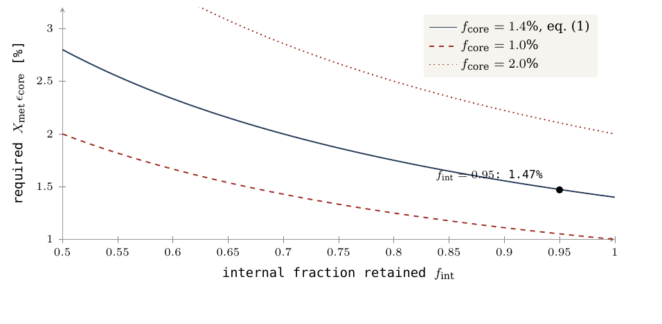
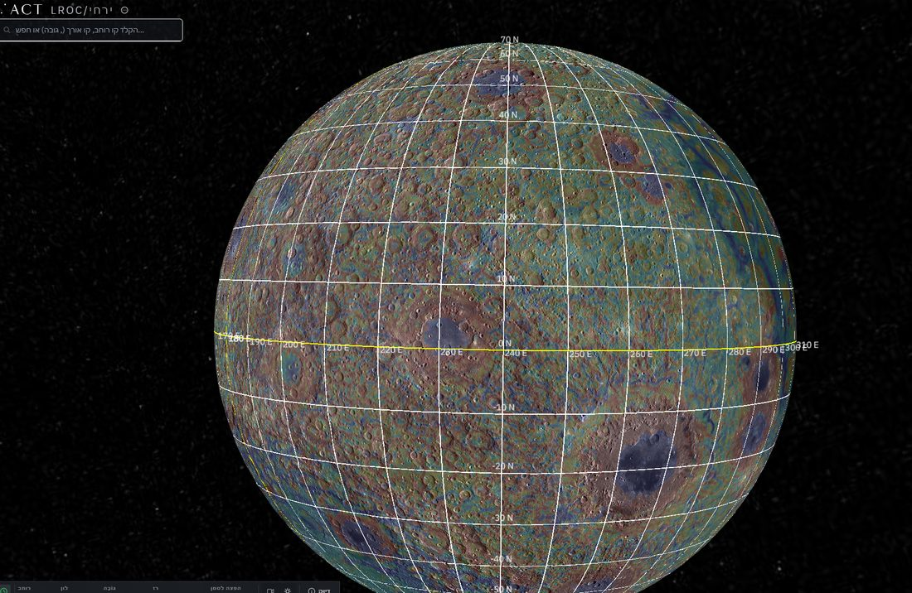
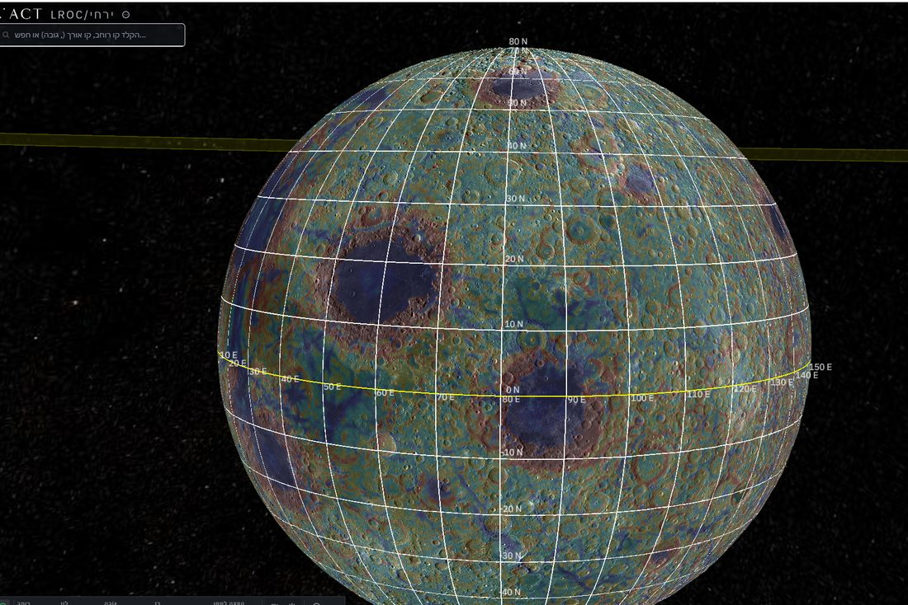
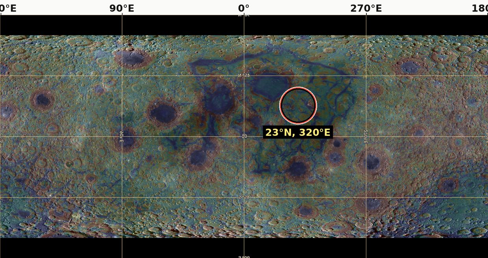

12. आवश्यकताएँ
तंत्र क्या माँगता है, चंद्रमा में क्या है, और क्या अभी खुला है
यह खंड उन गतिक दशाओं, भौतिक प्राचलों और द्रव्यमान-संतुलनों को परिभाषित करता है जो चंद्रमा के निर्माण-परिवेश और LEF (Lunar Elevation & Fission) मॉडल का गठन करते हैं।
वह परिवेश जिससे आवश्यकताएँ व्युत्पन्न होती हैं
मॉडल की प्रत्येक यांत्रिक आवश्यकता चंद्रमा के निर्माण-काल की भौतिक स्थिति-छवि से व्युत्पन्न होती है। नीचे दी गई तालिका उन संख्यात्मक और गतिक आधार-रेखाओं को एकत्र करती है जो सभी भूभौतिकीय तंत्रों का साझा आधार हैं; जब यह कहा जाता है कि "तंत्र किसी दशा की माँग करता है", तो उसका अर्थ यह है कि वह दशा सीधे इन्हीं प्राचलों से निकलती है।
मॉडल अनुमानित निर्माण-परिवेश और आज मापे जाने वाले आधुनिक चंद्रमा के सूचकों के बीच कठोर भेद रखता है। किसी परवर्ती अवस्था के प्रेक्षणों को, दोनों अवस्थाओं को भौतिक रूप से जोड़ने वाले किसी मॉडल की मध्यस्थता के बिना, प्रारंभिक दशा के रूप में प्रयुक्त नहीं किया जाना चाहिए। वर्तमान चंद्रमा अरबों वर्षों के शीतलन, अवशिष्ट ज्वालामुखीय गतिविधि और सतही टक्करों के चयापचय से गुज़रा है; आधुनिक आकारिकीय गुण निर्माण-क्षण का प्राचीन उत्पाद भी हो सकते हैं और एक स्वतंत्र परवर्ती योग भी, और उनके बीच पूर्ण भेद किया जाना चाहिए।
परिदृश्य-परिवेश के प्राचलों, मानों और पद्धतिगत स्थिति की तालिका
| भौतिक क्षेत्र | परिदृश्य-परिवेश और कठोर संख्यात्मक प्राचल | पद्धतिगत स्थिति और मॉडल में भूमिका |
|---|---|---|
| समय और कालक्रम | परिदृश्य का आरंभ लगभग 4.5 अरब वर्ष पूर्व (); लगभग 600 मिलियन वर्ष तक की समय-खिड़की () परीक्षण के लिए सुरक्षित रखी गई है। श्रृंखला की स्थूल समय-रेखा में उभार के विकास के आरंभ से 3.873 अरब वर्ष पूर्व चंद्रमा की मुक्ति तक ठीक 600 मिलियन वर्ष बीतते हैं: लगभग 400 मिलियन वर्ष उभार और नाशपाती-आकृति के विकास के लिए, लगभग 100 मिलियन वर्ष चपटेपन के चरण के लिए, और लगभग 100 मिलियन वर्ष और भौतिक मुक्ति के क्षण तक। | परिदृश्य-धारणा। पर्पटी और बेसाल्ट के बीच भूवैज्ञानिक आयु-अंतर यांत्रिक निर्माण की अवधि का माप नहीं हैं; बेसाल्ट की आयु एक परवर्ती ज्वालामुखीय उद्गार का काल-निर्धारण करती है, उसके नीचे स्थित प्राथमिक सियाल पर्पटी के निर्माण का नहीं। |
| प्रारंभिक मातृ-पिंड का द्रव्यमान | "मातृ-पिंड" को चंद्रमा के अलग होने से पहले की पृथ्वी के रूप में परिभाषित किया गया है, अतः उसका द्रव्यमान ठीक-ठीक आधुनिक पृथ्वी के द्रव्यमान () और आधुनिक चंद्रमा के द्रव्यमान () के योग के बराबर है। | कठोर निवेश। गतिक पदार्थ-स्थानांतरण की प्रक्रिया आरंभ होने से पहले, भावी चंद्रमा का द्रव्यमान पूर्णतः और अविभेदित रूप से मातृ-पिंड के द्रव्यमान में सम्मिलित है। |
| स्थानांतरण के बाद संदर्भ-द्रव्यमान | श्रृंखला के निवेश। द्रव्यमान-स्थानांतरण के पूरे मार्ग में यांत्रिक संयोजन के द्रव्यमान और अंतरिक्ष में खोए पदार्थ-घटकों का मात्रात्मक अनुसरण किया जाना चाहिए; मध्यवर्ती चरणों में भौतिक द्रव्यमान का एक भाग अब पृथ्वी में नहीं होता, परंतु अभी चंद्रमा में संकेंद्रित भी नहीं होता। | |
| मातृ-पिंड की त्रिज्या | - आयतनी त्रिज्या (समान आयतन का गोला): 6,517 km। - प्रारंभिक संरचना के उदाहरण में विषुवतीय त्रिज्या: 6,721 km। विषुवतीय त्रिज्या आयतनी त्रिज्या से बड़ी है, क्योंकि तीव्र गति से घूमता पिंड अपकेंद्री रूप से अपनी विषुवत रेखा पर फूल जाता है। | भिन्न भौतिक मान। ये राशियाँ एक ही गतिक समीकरण के भीतर परस्पर बदली या प्रतिस्थापित नहीं की जा सकतीं। |
| घूर्णन-गति (दिन) | संदर्भ-उदाहरण में आरंभ में 5.5 घंटे; भौतिक मुक्ति के क्षण पर ठीक 5.77 घंटे। नाशपाती-आकृति के पिंड का दीर्घीकरण घूर्णन-गति को यांत्रिक रूप से धीमा करता है (जड़त्व-आघूर्ण में वृद्धि), जबकि क्रोड का संकेंद्रण और अवतलन उसे तीव्र करता है (Paper 2)। | Paper 2 की स्वीकार्य परास के भीतर परिवर्ती मान। घूर्णन-गति कोणीय संवेग में परिवर्तन (जो बाह्य बल-आघूर्ण के अभाव में स्थिर रहता है) और जड़त्व-आघूर्ण में परिवर्तन (अक्ष के सापेक्ष द्रव्यमान-वितरण का माप) के फलन के रूप में बदलती है। यह तंत्र बर्फ़ पर स्केटिंग करने वाली के समान है: बाहर की ओर स्थानांतरित द्रव्यमान (नाशपाती-आकृति का दीर्घीकरण) घूर्णन को धीमा करता है, और भीतर खींचा गया द्रव्यमान (भारी लोहे का क्रोड में अवतलन) उसे तीव्र करता है। |
| सह-घूर्णन रेखा की दूरी | - 5.5 घंटे के घूर्णन-मान पर: 15,818 km। - मुक्ति के क्षण पर (5.77 घंटे): 16,331 km (द्रव्यमानहीन परीक्षण-कण के लिए), 16,399 km (चंद्रमा के द्रव्यमान को ध्यान में रखने वाली द्वि-पिंड गणना में), और 22.5° के मुक्ति-अक्षांश के साथ 17,287 km (Papers 2 और 4)। | Paper 2 की गतिक अवस्थाएँ और परिभाषाएँ। चंद्रमा तब मुक्त होता है जब उसका द्रव्यमान-केंद्र ठीक सह-घूर्णन रेखा तक पहुँचता है (वह दूरी जिस पर पृथ्वी के साथ समकालिक रूप से घूमता पिंड मुक्त कक्षीय वेग से गति करता है; उसके भीतर पिंड कक्षा में परिक्रमा के लिए पर्याप्त तीव्र नहीं होता और उसे किसी यांत्रिक संयोजन द्वारा थामे रखना आवश्यक होता है)। 5.77 घंटे के दिन पर यह रेखा सतह के उल्लेखनीय रूप से निकट, 16,399 km की दूरी पर (पृथ्वी की लगभग 2.6 त्रिज्याएँ), स्थित थी। सह-घूर्णन मुक्ति के लिए पर्याप्त दशा नहीं है: यांत्रिक संयोजन का टूटना अनिवार्य है, और मुक्त हुए पिंड का पृथ्वी के ज्वारीय बलों के सामने संरचनात्मक रूप से टिके रहना अनिवार्य है। |
| गुरुत्व-क्षेत्र | गतिक क्षेत्र स्थानीय रूप से भौगोलिक स्थिति, स्थानांतरित पदार्थ के द्रव्यमान और आंतरिक घनत्व-संरचना पर निर्भर करता है। | प्रारंभिक विषुवतीय अनुमान: मातृ-पिंड पर लगभग 8.25 m/s²। यह मान चंद्रमा पर आंतरिक गुरुत्व का प्रतिनिधित्व नहीं करता; यह आधुनिक पृथ्वी के सतही गुरुत्व से कम है, क्योंकि मातृ-पिंड की विषुवत रेखा उसके द्रव्यमान-केंद्र से अधिक दूर थी, और चरम घूर्णन-गति ने अपकेंद्री रूप से गुरुत्वाकर्षण के एक भाग को संतुलित कर दिया। |
| प्रारंभिक चंद्र पिंड के आयाम | - 1,500 kg/m³ के औसत घनत्व पर लगभग 2,270 km की त्रिज्या। - 2,600 kg/m³ के औसत घनत्व पर लगभग 1,890 km की त्रिज्या (पूर्ण लक्ष्य-द्रव्यमान के लिए)। | Paper 3 से निदर्शन हेतु ज्यामितीय अवस्थाएँ। ये मान प्रत्येक घनत्व-स्तर पर पिंड की सैद्धांतिक त्रिज्या दर्शाते हैं; पिंड जितना अधिक गर्म, हल्का और वाष्पशील गैसीय घटकों से समृद्ध होता है, उसका आयतन और आयाम उतने ही बड़े होते हैं। आधुनिक चंद्रमा दोनों से अधिक सघन और छोटा है, और इन आँकड़ों को क्रमिक रूप से परिकलित संकुचन-इतिहास नहीं माना जाना चाहिए। |
| आंतरिक संरचनात्मक संगठन | धातु और सिलिकेट प्रावस्थाओं के विभेदीकरण (Differentiation) की सतत और निरंतर प्रक्रिया: भारी लोहा गुरुत्वीय रूप से केंद्र की ओर अवतलित होता है, और हल्का सिलिकेट ऊपर तैरकर उठता है, पृथ्वी के आयतन में भी और विकसित होते चंद्र पिंड में भी। | संगति-बाध्यता। इस तंत्र को जड़त्व-आघूर्ण के मानों और रेडियोधर्मी घड़ियों के कालमापी आँकड़ों से सुसंगत किया जाना चाहिए। आधुनिक छोटे चंद्र क्रोड का अस्तित्व उस प्राचीन समय-बिंदु पर पृथ्वी के क्रोड की संरचनात्मक अवस्था का प्रत्यक्ष सूचक नहीं है। |
| द्रव्यमान और पदार्थ का स्रोत | दो स्थलीय स्रोतों से समकालिक आपूर्ति: गहरा प्रावार-भंडार, और साथ ही मातृ-पिंड की बाहरी सियाल कवच-परत (), जो पिंड के साथ ऊपर उठती है और चंद्र गुंबद की सतह का काम करती है। | एक पिंड और एकीकृत द्रव्यमान-संतुलन (Paper 3)। सियाल पृथ्वी की हल्की बाहरी परत है, जो सिलिकॉन और ऐलुमिनियम से समृद्ध है और अधिक सघन सीमा () परत के ऊपर स्थित है। |
| उत्सर्जन-तंत्र | गहरा प्रावार-पदार्थ जो स्थलमंडलीय कवच में विशिष्ट छिद्रों और वाहिकाओं से होकर ऊर्ध्वाधर रूप से ऊपर उठता है। | यांत्रिक परिभाषा। भौतिक उत्सर्जन को स्वयं ऊपरी कवच से उखड़े या घटाए गए पदार्थ के रूप में परिभाषित या परिकलित नहीं किया जाता। |
| वाष्पशील घटक और पदार्थ | पृथ्वी के आयतन में स्थित वाष्पशील पदार्थों (Volatiles) का एक विस्तृत और विशाल प्राचीन भंडार। वाष्पशील पदार्थ वे पदार्थ परिभाषित किए जाते हैं जो सरलता से गैसीय प्रावस्था में चले जाते हैं — सबसे प्रमुख जल () — और उनकी उपस्थिति उन्हें धारण करने वाले पदार्थ के गलनांक और यांत्रिक दृढ़ता को भौतिक रूप से घटाती है। | सत्यापित सांद्रता का अभाव। संपूर्ण भूवैज्ञानिक तंत्र के लिए कोई सत्यापित सांद्रता-मान उपलब्ध नहीं है; बहुरूपी अवस्था — विलीन, सघन अतिक्रांतिक द्रव या गैसीय प्रावस्था — केवल स्थलमंडलीय दाब, ऊष्मा और रासायनिक संघटन के फलन के रूप में निर्धारित होती है। |
| वायुमंडल और तापीय शीतलन | बाहर अंतरिक्ष की ओर चालनीय और संवहनीय ऊष्मा-स्थानांतरण; एक आंतरिक गतिक चक्र का अस्तित्व, जिसमें वाष्पशील घटकों का उत्थान, शीतलन और पुनः अवतलन सम्मिलित है। | ऊर्जा-संतुलन बाध्यता। पिंड की शीतलन-प्रक्रिया के लिए बाह्य अंतरिक्ष-माध्यम में शुद्ध ऊष्मा-उत्सर्जन (Net Radiation) आवश्यक है; आंतरिक पदार्थ-चक्र स्वयं में कुल ऊर्जा-संतुलन को नहीं बदलता, क्योंकि तंत्र की सीमाओं के भीतर एक तापीय स्तर से दूसरे में स्थानांतरित ऊष्मा उससे खोई हुई ऊष्मा के रूप में परिभाषित नहीं होती। |
| प्रवाहिकी और श्यानता | प्रवाहिकी का सूचक यह परिभाषित करता है कि भूवैज्ञानिक पदार्थ किस प्रकार बहता है या विरूपण (Strain) का यांत्रिक प्रतिरोध करता है। स्थलमंडलीय कवच सतह पर ठंडा और दृढ़ है, परंतु अपने आधार पर गतिशील और श्यान है; भीतरी भाग के साथ कार्यकारी अंतरापृष्ठ सबसे कम यांत्रिक दृढ़ता वाली परत है। | संरचना-संरक्षण बाध्यता (Paper 3)। मॉडल को एक ऐसे बाहरी कवच की आवश्यकता है जो अपने क्रेटरों के आकार को संरचनात्मक रूप से बनाए रखने के लिए पर्याप्त दृढ़ हो — की दृढ़ श्यानता वाला — और एक गतिशील, श्यान भीतरी भाग के ऊपर स्थित हो। श्यानता की इकाई () प्रवाह के प्रतिरोध को मापती है; इस सीमा-मान पर पर्पटी प्रासंगिक कालावधियों में उल्लेखनीय रूप से नहीं बहती, अतः क्रेटर अपनी ज्यामितीय आकारिकी बनाए रखता है। |
| स्थलमंडलीय कवच के प्राचल | लगभग 18 km की भौतिक मोटाई, 2,800 kg/m³ का पदार्थ-घनत्व, एक ऐसे गोलार्ध के क्षेत्रफल पर फैला जिसका ज्यामितीय आधार 6,000 km है (कुल क्षेत्रफल )। | पर्पटी का द्रव्यमान-संतुलन। पर्पटी का द्रव्यमान लगभग है (जो आधुनिक चंद्रमा के कुल द्रव्यमान का ठीक 3.9% है)। यह पर्पटी दूरस्थ गोलार्ध (Far Side) पर 50–60 km मोटाई की एक मोटी पर्पटी के रूप में बंद होती है (Paper 3)। मोटा होने की प्रक्रिया को क्षेत्रफल-परिवर्तन के तंत्र के रूप में परिभाषित किया गया है: मूल विशाल गुंबद का कवच-आवरण पूर्ण चंद्रमा के छोटे दूरस्थ गोलार्ध के क्षेत्रफल पर एकत्र और संकुचित हुआ, जिससे उसकी रैखिक मोटाई लगभग तीन गुना बढ़ गई। |
| संलग्न ज्यामिति (नाशपाती-आकृति) | चंद्र गुंबद नाशपाती-आकृति का शीर्ष-क्षेत्र है, जो पृथ्वी के पदार्थ से बना है और जिसकी सतही चौड़ाई लगभग 9,000 km है। नाशपाती-आकृति का आधार और उसकी आंतरिक वाहिकाएँ प्रशांत महासागर के मध्य में किरीटीमाटी (Kiritimati) द्वीप (1.9° उत्तर, 157.5° पश्चिम) के निकट, सीधे LLVP (Large Low-Shear-Velocity Province) विसंगति के ऊपर स्थित हैं — जो निम्नतम प्रावार का बड़ा मंद-वेग क्षेत्र है। गुंबद का आधार मातृ-पिंड की ओर है, और मुक्ति के क्षण पर ज्यामितीय संपर्क-क्षेत्र 3,000 km चौड़ी एक चक्रिका है (जो मूल आधार-क्षेत्रफल के एक-चौथाई के बराबर है)। | संयोजन-अंतरापृष्ठ के गुण। भूगतिक संयोजन विशाल आयामों वाला और उच्च तापमान वाला है; संपर्क-चक्रिका चंद्रमा के निकट पक्ष (Near Side) पर स्थित एक गुंबद बन जाती है, और उसके ज्यामितीय आयाम प्रारंभिक अंशांकन-नियमों के अनुसार लगभग 41° के कोणीय आकार के बराबर हैं (संरचना का किनारा निकट पक्ष के केंद्र से 41° दूर), और Paper 3 (§B.8) के अद्यतन नियम के अनुसार ठीक 31° के कोणीय आकार के। चंद्र पिंड उस सियाल परत से, जिस पर वह स्थित था, यांत्रिक रूप से छिलकर अलग होता है और उसे अपनी संरचना के अंग के रूप में साथ ले जाता है। |
| स्तरिकीय समय-क्रम (परिदृश्य) | मैग्मीय उत्सर्जन की प्रक्रिया और यांत्रिक गुंबद का उत्थान अतिव्यापी और समकालिक रूप से घटित होते हैं; उत्सर्जन-धारा गुंबद-आवरण के पूर्णतः बंद होने से पहले क्षीण होकर रुक जाती है; संरचनात्मक गुंबद का बंद होना पिंड के भौतिक विच्छेदन से पहले पूरा हो जाता है। | Paper 3 की कालक्रमिक बाध्यता। गतिक संक्रमण-चरणों की अवधियाँ प्रत्यक्ष रूप से मापी नहीं जा सकतीं। |
| आधुनिक चंद्रमा की सतह | संघटन की दृष्टि से प्राथमिक एनॉर्थोसाइटी पर्पटी, टक्कर-बेसिनों (Impact Basins), सागरों के बेसाल्टी भराव (Mare Basalts) और परवर्ती विवर्तनिक परिवर्तनों से बनी। | भेद-मानदंड। मॉडल निर्माण-तंत्र से उत्पन्न भूवैज्ञानिक गुणों और परवर्ती इतिहास के दौरान सतह पर संरक्षित या जुड़ी अवशिष्ट संरचनाओं के बीच कठोर भेद की माँग करता है। |
भूगतिक मॉडल-चित्र का सारांश
इस तालिका में एकत्र आँकड़े मॉडल की निम्नलिखित आवश्यकताओं के लिए भौतिक मंच तैयार करते हैं:
1. एक प्राचीन पृथ्वी जो उच्च गति से घूमती है (5.5–5.77 घंटे का दिन) और एक आधुनिक चंद्रमा के द्रव्यमान के बराबर अधिक भारी है।
2. एक असममित, नाशपाती-जैसी भूगतिक संरचना, जो पूर्णतः पृथ्वी के भौतिक पदार्थ से बनी है, और जिसका पश्चिमी शीर्ष-क्षेत्र चंद्र पिंड के रूप में ठोस होकर बंद होता है।
3. उच्च श्यानता वाला एक दृढ़ स्थलमंडलीय कवच, जो ऊर्ध्वाधर रूप से ऊपर वहन किया जाता है और इस शीर्ष की बाहरी सतह का काम करता है।
4. मुक्ति और मुक्त गुरुत्वीय पृथक्करण, जो ठीक सह-घूर्णन रेखा की गतिक परास में घटित होते हैं।
शोधपत्र में आगे प्रस्तुत प्रत्येक यांत्रिक आवश्यकता का उद्देश्य यह परखना और विश्लेषित करना है कि इस गतिक मंच ने चंद्रमा की सतह पर और पृथ्वी के तल पर कौन-से भौतिक चिह्न छोड़े।
- भूगतिक निर्माण-तंत्र: LEF मॉडल में चंद्रमा सीधे पृथ्वी के पदार्थ से बना, जब वह एक भौतिक अंतरापृष्ठ द्वारा उससे संलग्न था। गहरा प्रावार-पदार्थ निरंतर विकसित होते चंद्र पिंड में आपूर्त होता रहा, और साथ ही क्षेत्र के ऊपर स्थित मातृ-पिंड की बाहरी स्थलमंडलीय कवच-परत पिंड के साथ गुंबद-संरचना की सतह के रूप में ऊर्ध्वाधर रूप से उठी और ठोस होकर चंद्रमा की पर्पटी बनी।
- आवश्यकता और परीक्षण के मानदंड की परिभाषा: आवश्यकता को एक ऐसे भूभौतिकीय या ज्यामितीय गुण के रूप में परिभाषित किया गया है जिसे चंद्रमा (या पृथ्वी) को अनिवार्यतः प्रदर्शित करना चाहिए यदि उसका निर्माण इस तंत्र से हुआ। प्रत्येक आवश्यकता तीन कठोर भागों में दी गई है: वह यांत्रिक दशा जिसे मॉडल को पूरा करना है, उसे परखने वाला मात्रात्मक सूचक, और वह माप-परिणाम जो आवश्यकता से मेल नहीं खाता (परीक्षण-योग्य दशा)। विश्लेषण पृथक आवश्यकताओं पर आधारित है, संचयी संगति-अंक पर नहीं, क्योंकि कई संगतियाँ एक ही भौतिक तथ्य को दर्शा सकती हैं जो अनेक तरीकों से प्रेक्षित होता है, और किसी एक आवश्यकता में स्पष्ट असंगति स्वयं में परखी जाती है और उसी आवश्यकता तथा उसके तंत्र से संबंधित होती है, अन्य संगतियों की संख्या से स्वतंत्र।
-
सात केंद्रीय आवश्यकताओं का दायरा: शोधपत्र सात मूलभूत आवश्यकताओं की जाँच करता है:
- स्थलीय स्रोतों से पूर्ण समस्थानिक संबद्धता।
- धात्विक प्रावस्था का ऐसी मात्रा में स्थानांतरण जो छोटे चंद्र क्रोड के अस्तित्व से सीमित है।
- पर्पटी की मोटाई की स्तरिकीय असममिति।
- संयोजन-पक्ष से सीधे जुड़ा आकारिकीय अभिविन्यास।
- शीतलन का कालक्रम और पर्पटी-संरचनाओं का संरक्षण।
- द्रव्यमान-स्थानांतरण के समय वाष्पशील पदार्थों की उपलब्धता।
- पर्पटी के द्रव्यमान-वितरण और द्रव्यमान-केंद्र के विस्थापन के बीच गणितीय सहसंबंध।
-
आधुनिक आँकड़ों की व्याख्या की सीमाएँ: वर्तमान भूवैज्ञानिक आँकड़े सामान्य आकारिकीय गुणों के अस्तित्व का समर्थन करते हैं, परंतु स्वयं में उनके निर्माण-तंत्र की पुष्टि नहीं करते:
- सागरों के बेसाल्टों की आयु उनके नीचे स्थित एनॉर्थोसाइट पर्पटी की आयु निर्धारित नहीं करती।
- नमूना लिए गए मैग्मा में मापी गई जल-मात्रा निर्माण के समय वाष्पशील पदार्थों के कुल भंडार का प्रत्यक्ष प्रतिनिधित्व नहीं करती।
- वर्तमान में समकालिक घूर्णन-बंधन (प्रत्येक स्व-घूर्णन पर एक परिक्रमा) का अस्तित्व विच्छेदन के क्षण से सतत समकालिकता के अस्तित्व का प्रमाण नहीं है।
- मॉडल का पर्पटी-संतुलन और द्रव्यमान-केंद्र का विस्थापन: चंद्रमा का द्रव्यमान-केंद्र उसके ज्यामितीय केंद्र के सापेक्ष विस्थापित है। एक पक्ष पर बढ़ी हुई मोटाई वाली हल्की पर्पटी द्रव्यमान-केंद्र को विपरीत दिशा में स्थानांतरित करती है। एक अंशांकित संख्यात्मक उदाहरण में, 300–750 kg/m³ की परास में घनत्व-विषमताओं (पर्पटी-पदार्थ और उसके नीचे के प्रावार-पदार्थ के बीच घनत्व-अंतर) के लिए 1.24–3.11 km का परिकलित विस्थापन-मान प्राप्त होता है। यह एक गणितीय संवेदनशीलता-परास है, अनुभवजन्य विस्थापन का स्वतंत्र पूर्वानुमान नहीं।
- पिंड के पक्षों में पर्पटी-द्रव्यमान का विभाजन: द्रव्यमान-संतुलन दर्शाता है कि गुंबद का कवच, जिसकी रैखिक मोटाई संरचनात्मक रूप से बंद होने की प्रक्रिया में तीन गुना बढ़ी, दूरस्थ पक्ष (Far Side) की पर्पटी के द्रव्यमान की पूर्ण आपूर्ति करता है। यह द्रव्यमान चंद्रमा के कुल द्रव्यमान के लगभग 4% के बराबर है, जो GRAIL (NASA) अभियान के गुरुत्वीय निष्कर्षों से ठीक मेल खाता है। निकट पक्ष (Near Side) की पर्पटी एक पृथक घटक है: वह स्थलीय आधार के सियाल पदार्थ से बनी है जो पिंड के साथ छिलकर अलग हुआ, संपर्क-क्षेत्र के ऊपर पूर्णतः पिघला, और गहरी ऊष्मा से तापीय रूप से समतल हुआ; यह पर्पटी अपनी न्यूनतम मोटाई सीधे सागर-बेसिनों के नीचे दर्शाती है, जिन्हें संरचनात्मक छिद्रों के रूप में परिभाषित किया गया है।
वैज्ञानिक प्रतिपादन और पूर्वानुमान
- स्रोत-पदार्थ की समस्थानिक संगति: चंद्रमा का पदार्थ अनिवार्यतः पृथ्वी के पदार्थ के समरूप होना चाहिए। ऑक्सीजन समस्थानिकों ( और ) के अनुभवजन्य माप (प्रति दस लाख भाग) की कठोर परिशुद्धता-परास में पूर्ण संगति दर्शाते हैं।
- क्रोड-आयतन की सीमा: नाशपाती-आकृति के साथ ऊपर उठती द्रव्यमान-धारा हल्के सिलिकेट और धात्विक प्रावस्था की केवल थोड़ी मात्रा वहन करती थी। चंद्रमा का भूकंपीय क्रोड केवल 330 km की मापी गई त्रिज्या रखता है, जो चंद्रमा के कुल द्रव्यमान का लगभग 1.4% है।
- पर्पटी-मोटाई की असममिति: पर्पटी को पुराने यांत्रिक संयोजन-क्षेत्र के सामने अधिक मोटा होना चाहिए, उस स्थान पर जहाँ गुंबद का शिखर कवच को वहन करता था और दूरस्थ पक्ष सबसे पहले जमा; GRAIL अभियान के आँकड़े पुष्टि करते हैं कि दूरस्थ पक्ष की पर्पटी उल्लेखनीय रूप से अधिक मोटी है।
- सतह का स्थिरीकरण (अभिविन्यास का संरक्षण): चंद्र पिंड को अपने मूल संयोजन-पक्ष को सीधे पृथ्वी की ओर रखे हुए बनाए रखना चाहिए।
- तापीय बंद होने का कालक्रम: दूरस्थ पक्ष की पर्पटी को निकट पक्ष की गर्म आपूर्ति-धारा के क्षीण होने से पहले संरचनात्मक रूप से बंद होना और संरचनात्मक रूप से संरक्षित रहना चाहिए।
- वाष्पशील घटकों की उपस्थिति: द्रव्यमान-आपूर्ति और भूगतिक प्रवाह की प्रक्रिया को श्यानता घटाने के लिए वाष्पशील पदार्थों की उपस्थिति की आवश्यकता थी। गलन-अंतर्वेश (Melt Inclusions) — मैग्मा की सूक्ष्म बूँदें जो ज्वालामुखीय उद्गार से पहले क्रिस्टलों के भीतर वायुरुद्ध रूप से बंद हो गईं — 615–1,410 ppm की जल-सांद्रता दर्शाते हैं।
- द्रव्यमान-केंद्र का अनुभवजन्य विस्थापन: चंद्रमा का द्रव्यमान-केंद्र वास्तव में निकट पक्ष की ओर 2 km विस्थापित है। मॉडल के सूत्रों से व्युत्पन्न पर्पटी-आकृति मानक घनत्व-विषमता मानों के अंतर्गत 1.2–3.1 km का सैद्धांतिक विस्थापन देती है।
आँकड़ों, तंत्रों और पूर्ण संख्यात्मक प्राचलों का संगठन
| विषय | निष्कर्ष | स्रोत | मॉडल में स्थिति |
|---|---|---|---|
| समस्थानिक संघटन | की परास में ऑक्सीजन समस्थानिकों की पूर्ण संगति। | नमूनों के प्रयोगशाला-माप | आवश्यकता 1 (सत्यापित) |
| चंद्र क्रोड के आयाम | कठोर भूकंपीय त्रिज्या: 330 km। क्रोड का द्रव्यमान: पिंड के कुल द्रव्यमान का लगभग 1.4%। | अपोलो नेटवर्क के भूकंपीय आँकड़े | आवश्यकता 2 (सत्यापित, सिलिकेट-प्रवाह का साक्ष्य) |
| पर्पटी-असममिति | दूरस्थ पक्ष निकट पक्ष से उल्लेखनीय रूप से अधिक मोटा; दूरस्थ पक्ष की पर्पटी का द्रव्यमान चंद्रमा के द्रव्यमान का लगभग 4%। | वैश्विक गुरुत्व-मानचित्र (GRAIL / NASA) | आवश्यकता 3 (सत्यापित, जमा हुआ गुंबद-शिखर) |
| दबे हुए वाष्पशीलों की सांद्रता | बंद क्रिस्टलों के भीतर गलन-अंतर्वेश 615–1,410 ppm की जल-सांद्रता रखते हैं। | ज्वालामुखीय क्रिस्टलों का रासायनिक विश्लेषण | आवश्यकता 6 (सत्यापित, स्रोत में वाष्पशील पदार्थों का साक्ष्य) |
| द्रव्यमान-केंद्र का विस्थापन (मापित) | ज्यामितीय केंद्र के सापेक्ष निकट पक्ष की ओर 2 km का रैखिक विचलन। | उपग्रहीय तुंगतामिति और गुरुत्व-माप | आवश्यकता 7 (सत्यापित) |
| द्रव्यमान-केंद्र का विस्थापन (मॉडल) | 300–750 kg/m³ की घनत्व-विषमताओं के लिए 1.2–3.1 km का परिकलित सैद्धांतिक मान (सटीक संवेदनशीलता-परास: 1.24–3.11 km)। | गुंबद के द्रव्यमान-संतुलन के समीकरण | मॉडल की गणितीय संगति |
| संकेंद्री क्षेत्रीय प्रतिरूप | चंद्रमा की सतह निकट पक्ष के केंद्र के चारों ओर तीन संकेंद्री क्षेत्रों में व्यवस्थित है: संपर्क (अंत में अनावृत), आधार-वलय, और दूरस्थ पक्ष (गुंबद की पुरानी सतह)। | सतही गुरुत्व-प्रवणता का मानचित्र (GRAIL) | आवश्यकता 8 (Paper 12 में नया आठवाँ गुण) |
| नाशपाती-आकृति के अवशिष्ट तंत्र | सात भूगतिक गुण: नाशपाती-आकृति का स्व-गुरुत्व, वापसी-तंत्र, प्रशांत का LLVP, निकट पक्ष पर KREEP घटक, मापक के रूप में स्थलीय क्रोड, बाहरी पदार्थ का अभाव, और ध्रुवों पर बढ़ा हुआ क्रेटर-घनत्व जो क्रेटर के व्यास पर निर्भर है। | संयुक्त आकारिकीय और भूकंपीय विश्लेषण | खंड C.6 में एकत्र रूप में प्रस्तुत |
| छिद्रों और मंगल के उपग्रहों के तंत्र | तीन गतिक गुण: 34 सागर-बेसिन, जिन्हें संरचनात्मक छिद्रों और लौटने वाले पदार्थ के स्रोत के रूप में परिभाषित किया गया है; South Pole–Aitken बेसिन के नीचे पदार्थ के दो निकास, जिनके दक्षिण में एक गुंबद है; और मंगल के दो उपग्रह (फ़ोबोस और डीमोस), जो स्थलीय विषुवत रेखा पर एक ही उत्सर्जन-नलिका से प्रक्षिप्त हुए। | उत्सर्जन और गतिक कक्षाओं के मॉडल | खंड C.7 में एकत्र रूप में प्रस्तुत |
आवश्यकताओं का संरचनात्मक एकीकरण
मॉडल सात चंद्र गुणों को सात पृथक और स्वतंत्र सांख्यिकीय प्रमाणों के रूप में नहीं देखता। पर्पटी की मोटाई, द्रव्यमान-केंद्र का विस्थापन, सागर-बेसिन और भूवैज्ञानिक आयु-अभिलेख का एक भाग भौतिक रूप से एक एकल संरचनात्मक परिघटना के रूप में परिभाषित हैं, जो प्रेक्षण के चार भिन्न मार्गों में परिलक्षित होती है।
प्रत्येक आकारिकीय संगति उस विशिष्ट गणना-प्रोटोकॉल के साथ प्रस्तुत की जाती है जो उसे एक कठोर मात्रात्मक परीक्षण में बदलने के लिए आवश्यक है (जैसे बहु-तंत्रीय समस्थानिक संतुलन, धात्विक द्रव्यमान-स्थानांतरण की दरें, और संयुक्त पर्पटी-विस्थापन संगतियाँ)। ये समीकरण, अपनी सटीक भौतिक असंगति-सीमाओं के साथ, खंड D.3 में विस्तार से दिए गए हैं। मॉडल के सामने केंद्रीय लक्ष्य यह दिखाना है कि प्राचलों का एक एकरूप और स्थिर गणितीय तंत्र इन सभी उत्पादों को एक साथ उत्पन्न करने में सक्षम है।
भूमिका — तंत्र से चिह्नों तक
पद्धतिगत स्वरूप और विश्लेषण का उद्देश्य
- भौतिकी को आँकड़ों से जोड़ना: Papers 2–3 में निर्माण-मार्ग और भूगतिक तंत्र परिभाषित हो जाने के बाद, Paper 12 की केंद्रीय भूमिका परिदृश्य की भौतिकी को ऐसे अनुभवजन्य आँकड़ों से जोड़ना है जिनका स्वतंत्र रूप से परीक्षण किया जा सके। चंद्रमा की निर्माण-प्रक्रिया को निश्चित भौतिक और आकारिकीय चिह्न अनिवार्यतः छोड़ने चाहिए: उसके रासायनिक और समस्थानिक संघटन में, उसकी आंतरिक संरचना में, पर्पटी-मोटाई की असममिति में, उस अभिविन्यास में जिसमें वह अपने ग्रह (पृथ्वी) की ओर उन्मुख है, और उस कालक्रमिक क्रम में जिसमें उसकी सतह शीतलन और तापीय रूप से बंद होने की प्रक्रिया से गुज़री।
- मंगल-प्रकरण का पृथक्करण: Paper 10 मंगल-तंत्र पर लागू एक पृथक और स्वतंत्र परीक्षण है। Paper 10 के ढाँचे में सामने आने वाली गणितीय सफलता या भौतिक कठिनाई LEF मॉडल में स्थलीय प्रकरण के लिए निर्धारित कठोर प्राचलों को नहीं बदलती।
आवश्यकता नामक संरचनात्मक उपकरण की परिभाषा
शोधपत्र का मार्गदर्शन करने वाला सैद्धांतिक उपकरण आवश्यकता है। प्रत्येक आवश्यकता तीन घटकों के आधार पर कठोरता से परिभाषित है: वह भूभौतिकीय गुण जो LEF तंत्र से चंद्रमा के बनने पर अनिवार्यतः विद्यमान होना चाहिए, उसका परीक्षण करने वाला सटीक अनुभवजन्य माप, और वह संख्यात्मक या संरचनात्मक परिणाम जो आवश्यकता से मेल नहीं खाता।
आवश्यकताओं का संकलन पृथक रूप से किया जाता है, किसी संचयी गणितीय अंक के भारांकन के बिना, दो कठोर पद्धतिगत कारणों से:
1. संरचनाओं की परस्पर निर्भरता (एकल पदार्थ-वितरण): चंद्रमा के आकारिकीय गुण एक-दूसरे से स्वतंत्र नहीं हैं। एक पक्ष (दूरस्थ पक्ष) पर मोटी हुई पर्पटी, विपरीत पक्ष (निकट पक्ष) की ओर विस्थापित द्रव्यमान-केंद्र, पतले पक्ष पर सागर-बेसिनों का संकेंद्रण, और भूवैज्ञानिक आयु-अभिलेख का एक भाग — मॉडल में ये सभी पदार्थ के एक एकल यांत्रिक वितरण का प्रत्यक्ष परिणाम हैं। उन्हें संचयी अंक में पृथक बिंदुओं के रूप में जोड़ना एक ही भौतिक तथ्य की दोहरी और पुनरावर्ती गणना होगी।
2. पृथक परीक्षण का सिद्धांत (प्रत्येक आवश्यकता परीक्षण-योग्य है): भारित अंक अनेक सहमतियों और आकस्मिक सहसंबंधों को किसी एक प्राचल में निर्णायक असहमति पर हावी होने देता है। इसके विपरीत, अपनी असंगति-दशा के साथ परिभाषित आवश्यकता स्वयं में परखी जाती है: किसी एक आवश्यकता में स्पष्ट असंगति उसी आवश्यकता के विरुद्ध दर्ज की जाती है, और अन्य संगतियों द्वारा छिपाई नहीं जाती। भाग B प्रत्येक परीक्षण का परिणाम पृथक रूप से प्रस्तुत करता है (खंड B.9)।
मॉडल के परिणामों का कालक्रमिक वर्गीकरण
शोधपत्र में प्रस्तुति का क्रम पहले यांत्रिक आवश्यकता की परिभाषा और उसके बाद अनुभवजन्य प्रेक्षण रखता है। यह संरचना पाठक को तार्किक संगति परखने में सहायता के लिए है, परंतु इससे ज्ञात आँकड़े उनकी खोज से पहले दर्ज पूर्वानुमानों (Predictions) में नहीं बदल जाते। वैज्ञानिक परिशुद्धता बनाए रखने के लिए, मॉडल तीन प्रकार के परिणामों में कठोर भेद करता है:
- व्युत्पन्न परिणाम: परिदृश्य की परिभाषित मूल धारणाओं के अंतर्गत भौतिक समीकरणों से सीधे व्युत्पन्न कोई मान या प्रवृत्ति।
- पश्च-संगति (Postdiction): विज्ञान में किए गए विद्यमान अनुभवजन्य प्रेक्षणों से मॉडल के प्राचलों का मिलान।
- पूर्वानुमान: मॉडल का एक स्वतंत्र संरचनात्मक या संख्यात्मक दावा, जिसका अनुभवजन्य आँकड़ों में अभी परीक्षण नहीं हुआ है।
संगति-परीक्षण की बाध्यता: वैज्ञानिक साहित्य में बाहरी शोधकर्ताओं द्वारा किया गया कोई माप, जो साथ ही मॉडल के भीतर किसी मुक्त प्राचल के चयन के लिए निवेश-आँकड़े के रूप में भी प्रयुक्त हुआ, केवल आंतरिक संगति-परीक्षण (Consistency Check) के रूप में परिभाषित है, और उसे तंत्र के लिए स्वतंत्र अनुभवजन्य समर्थन नहीं माना जाना चाहिए।
शोधपत्र के चार भागों की संरचना
नीचे दी गई तालिका वह केंद्रीय यांत्रिक प्रश्न परिभाषित करती है जिसका निर्णय Paper 12 का प्रत्येक भाग कठोरता से करता है।
| शोधपत्र का भाग | वह संरचनात्मक प्रश्न जिसका निर्णय भाग करता है |
|---|---|
| PART A | भूगतिक परिदृश्य ठीक-ठीक किसकी माँग करता है, और प्रत्येक आवश्यकता किन भौतिक धारणाओं पर टिकी है? |
| PART B | अनुभवजन्य आँकड़ों में वास्तव में क्या मापा गया है, और प्रत्येक भूभौतिकीय माप से क्या निष्कर्ष निकाला जा सकता है? |
| PART C | कौन-से अतिरिक्त चिह्न और तंत्र जाँच के योग्य हैं, उन्हें मॉडल में विद्यमान और सत्यापित परिणामों के रूप में गिने बिना? |
| PART D | कौन-से परिणाम आवश्यकताओं से मेल नहीं खाते, क्या खुला रहता है, और कार्य का नवीन तत्व क्या है? |
सात आवश्यकताएँ और उनकी धारणाएँ
भाग A प्रस्तुत करता है कि LEF मॉडल का निर्माण-मार्ग चंद्रमा से क्या माँगता है। मॉडल में चंद्रमा पृथ्वी से संलग्न रहते हुए बना: गहरा पदार्थ ऊपर की ओर एक बढ़ते पिंड में आपूर्त हुआ, और उस क्षेत्र के ऊपर पृथ्वी का बाहरी कवच उसके साथ एक गुंबद की सतह के रूप में उठा। यदि चंद्रमा इसी प्रकार बना, तो वह किसी भी पिंड जैसा नहीं दिख सकता; उसे कुछ निश्चित चिह्न अनिवार्यतः धारण करने चाहिए। नीचे के सात खंडों में से प्रत्येक ऐसे एक चिह्न (R1–R7) का उल्लेख करता है, बताता है कि मॉडल को उसकी आवश्यकता क्यों है, और वर्णन करता है कि किस प्रकार का माप उसका परीक्षण करेगा। स्वयं माप भाग B में, उसी क्रम में, परखे जाते हैं, ताकि भाग A के प्रत्येक खंड का भाग B में एक समानांतर खंड हो।
समस्या और व्युत्पत्ति की विधि
- स्थानिक ज्यामिति की सीमाएँ: किसी संलग्न पिंड की ज्यामिति स्वयं में रासायनिक संघटन, तापीय शीतलन-दर या पर्पटी के आकारिकीय विवरण निर्धारित नहीं करती। चौड़े और गर्म संयोजन द्वारा पृथ्वी से संलग्न पिंड का एक निकट पक्ष और एक दूरस्थ पक्ष होता है, एक आपूर्त क्षेत्र और एक बंद क्षेत्र; परंतु स्थानांतरित धातु का द्रव्यमान, प्रत्येक भित्ति के जमने की गति, या आपूर्ति-धारा के साथ चले जल का आयतन जैसे प्राचल केवल संरचनात्मक आकृति से व्युत्पन्न नहीं होते।
- भौतिक संयोजन की पद्धति: प्रत्येक यांत्रिक आवश्यकता के साथ वह पूरक भौतिक धारणा संलग्न है जो उसे मात्रात्मक रूप से व्युत्पन्न करने के लिए आवश्यक है। यह दृष्टिकोण सीधे ज्यामिति से निकलने वाले घटकों और अतिरिक्त गतिक धारणाओं से व्युत्पन्न घटकों के बीच कठोर भेद संभव बनाता है। जो अनुभवजन्य परीक्षण उत्तीर्ण नहीं हुआ, वह ठीक-ठीक मॉडल के उस विशिष्ट घटक की ओर संकेत करता है जिससे वह मेल नहीं खाता।
- मापों का दायरा (R1–R7): सात आवश्यकताएँ माप के सात पृथक क्षेत्रों को समेटती हैं: समस्थानिक (R1), क्रोड का आकार (R2), पर्पटी की असममितियाँ (R3), पृथ्वी के सापेक्ष चंद्रमा का अभिविन्यास (R4), शीतलन और संरक्षण का क्रम (R5), वाष्पशील पदार्थों का भंडार (R6), और पर्पटी-वितरण तथा द्रव्यमान-केंद्र के विस्थापन के बीच गणितीय संबंध (R7)।
A.1R1 — स्थलीय पदार्थ से संबद्धता
यह किसकी माँग करती है
- स्थलीय भंडारों से एकीकरण: भूगतिक परिदृश्य में चंद्रमा का निर्माण करने वाले संपूर्ण पदार्थ का स्रोत पृथ्वी है। इसी कारण, मॉडल उन स्थलीय भंडारों से पूर्ण रासायनिक और संरचनात्मक संगति की माँग करता है जिनसे पदार्थ आया, गलन, प्रावस्था-पृथक्करण, वाष्पन और भूवैज्ञानिक विभेदन की प्रक्रियाओं के मात्रात्मक भारांकन के बाद।
- भंडार (Reservoir) की परिभाषा: पदार्थ का एक बड़ा पिंड जिसका अपना विशिष्ट स्वरूप और रासायनिक संघटन हो — जैसे पृथ्वी का गहरा प्रावार (Mantle), या उसका बाहरी सियाल कवच ()।
- स्थलीय मिश्रण की बाध्यता: चूँकि मॉडल चंद्रमा के पदार्थ को इन दो परिभाषित स्थलीय भंडारों (गहरी आपूर्ति-धारा और ऊपर उठता कवच) से व्युत्पन्न करता है, अंतिम चंद्र पिंड का संघटन इन दोनों स्रोतों के प्रत्यक्ष मिश्रण के रूप में गणितीय रूप से प्राप्य होना अनिवार्य है।
मॉडल को इसकी आवश्यकता क्यों है
- रासायनिक हस्ताक्षर की अनिवार्यता: यह गुण संयोजन-तंत्र का सबसे प्रत्यक्ष भौतिक परिणाम है: यदि पदार्थ का द्रव्यमान पृथ्वी से स्थानांतरित हुआ, तो उसे मातृ-पिंड की रासायनिक अंगुलि-छाप अनिवार्यतः धारण करनी चाहिए।
- उत्पत्ति-चिह्न के रूप में समस्थानिक: इस पहचान के लिए प्रयुक्त केंद्रीय तंत्र समस्थानिक-अनुपात हैं। समस्थानिक एक ही रासायनिक तत्व के बहुरूपी रूप हैं जो केवल नाभिक में न्यूट्रॉनों की संख्या में, और इसलिए अपने परमाणु-द्रव्यमान में, एक-दूसरे से भिन्न होते हैं। समस्थानिक-अनुपात सौर मंडल के विभिन्न ग्रहीय पिंडों के बीच कठोर भिन्नता दर्शाते हैं, और पिंड के ठोसीकरण-चरण के बाद उल्लेखनीय रूप से बदले नहीं जा सकते। इसी कारण वे एक निरपेक्ष उत्पत्ति-चिह्न हैं।
यह किसकी माँग नहीं करती
-
निरपेक्ष सांद्रता-समानता का निषेध: साझा भूवैज्ञानिक स्रोत किसी रासायनिक तत्व की प्रत्येक सांद्रता में या प्रत्येक एकल समस्थानिक-अनुपात में गणितीय समानता अनिवार्य नहीं करता। परिदृश्य के अनुसार अनुमत और अपेक्षित अंतरों में सम्मिलित हैं:
- रेडियोजनित समस्थानिक: प्राकृतिक रेडियोधर्मी क्षय के परिणामस्वरूप बनने वाले समस्थानिक। दो भंडार जो भौतिक रूप से पृथक हो गए और जिनमें जनक तत्व (Parent isotope) की भिन्न मात्राएँ हैं, भूवैज्ञानिक समय के साथ पुत्री तत्व (Daughter isotope) की भिन्न मात्राएँ संचित करेंगे, भले ही पृथक्करण का क्षण पूर्णतः समरूप समस्थानिक संघटन से घटित हुआ हो।
- द्रव्यमान-निर्भर प्रभाजन (Mass-dependent fractionation): वाष्पन, गलन या क्रिस्टलीय ठोसीकरण की प्रक्रियाओं के दौरान भारी समस्थानिकों की तुलना में हल्के समस्थानिकों की यांत्रिक छँटाई और छनाई (हल्के समस्थानिक तंत्र से निकल जाते हैं या उसके भीतर अधिक सरलता से चलते हैं, जैसे वाष्पित होते द्रव की हल्की प्रावस्था पहले उड़ती है)।
इसका परीक्षण कैसे होता है
- बहु-तंत्रीय संतुलन का मानदंड: परीक्षण यह निर्धारित करता है कि क्या दोनों स्थलीय स्रोतों के योगदानों का एक मात्रात्मक संतुलन एक साथ कई भिन्न समस्थानिक तंत्रों को समग्र रासायनिक संघटन (Bulk composition) के साथ समझा सकता है।
- एकल सूचक की सीमा: केवल ऑक्सीजन समस्थानिकों का माप समग्र संतुलन की पर्याप्त पुष्टि नहीं है। ऑक्सीजन का मान विज्ञान में सबसे सुविदित अनुभवजन्य संगति है — पृथ्वी और चंद्रमा के बीच समस्थानिक अंतर है (प्रति दस लाख भाग; जैसा खंड B.1 में विस्तार से दिया गया है) — परंतु यांत्रिक आवश्यकता R1 केवल तभी सत्यापित मानी जाएगी जब दोनों स्थलीय भंडारों का एक ही गणितीय मिश्रण, अनुमत भौतिक प्रक्रियाओं के अंतर्गत, ऑक्सीजन-मानों, शेष समस्थानिक तंत्रों और पिंड के वैश्विक रसायन को एक साथ समझा दे।
A.2R2 — छोटा धात्विक क्रोड
यह किसकी माँग करती है
- सीमित आयतन और द्रव्यमान की बाध्यता: चंद्रमा का एक छोटा और सीमित धात्विक क्रोड है: उसकी भूकंपीय त्रिज्या केवल लगभग 330 km है, जो चंद्रमा के कुल द्रव्यमान का लगभग 1.4% है (जैसा खंड B.2 में विस्तार से दिया गया है)। उसके आयामों वाले ग्रहीय पिंड के लिए यह आँकड़ा असाधारण रूप से छोटा अंश माना जाता है।
- आपूर्ति-धारा की बाध्यता: मॉडल में चंद्रमा को नीचे से मुख्यतः सिलिकेट पदार्थ () से आपूर्ति मिली, जिसमें धात्विक प्रावस्था की केवल थोड़ी मात्रा थी।
- आवश्यकता की द्वि-पक्षीय सीमाएँ: आंतरिक स्थानांतरण-तंत्र को इतना पदार्थ-द्रव्यमान वहन करना अनिवार्य है जो विद्यमान क्रोड के निर्माण के लिए आवश्यक धातु-भंडार की आपूर्ति कर सके (निचली सीमा), बिना अनुमत से अधिक धातु-अंश स्थानांतरित किए जो क्रोड के आयतन को प्रेक्षित मान से आगे बढ़ा दे (ऊपरी सीमा)।
धातु की मात्रा किस पर निर्भर करती है
भूगतिक माध्यम में स्थानांतरित धात्विक द्रव्यमान का आयतन स्रोत पर चार कठोर भौतिक प्राचलों के फलन के रूप में निर्धारित होता है:
1. मुक्त धातु का अंश: आपूर्ति करने वाले पदार्थ में विद्यमान अबद्ध धात्विक प्रावस्था की सांद्रता।
2. धातु-बूँदों के आयाम (Droplet Rheology): धारा के भीतर धातु-बूँदों का भौतिक आकार। विशाल और भारी बूँदें धीमे ऊर्ध्वमुखी प्रवाह में से गुज़रते हुए गुरुत्वीय रूप से वापस नीचे बैठ जाती हैं, जबकि सूक्ष्म बूँदें धारा के साथ ऊपर बह जाती हैं (भौतिक तंत्र किसी तीव्र नदी-धारा में निलंबित और गतिशील रहने वाले रेत के महीन कणों के समान है, जबकि भारी कंकड़ तल पर बैठ जाते हैं)।
3. ऊर्ध्वाधर धारा का वेग: धातु-बूँदों के द्रवगतिक अवतलन-वेग की तुलना में सिलिकेट प्रवाह के उत्थान का वेग।
4. ऑक्सीकरण-अवस्था (Oxidation State): यह लोहे () के उस अनुपात को निर्धारित करती है जो मुक्त धात्विक प्रावस्था के रूप में उपस्थित होने के स्थान पर सिलिकेट खनिजों की क्रिस्टलीय संरचना में रासायनिक रूप से बंद है। खनिजों में बद्ध लोहा सिलिकेट प्रावस्था के साथ चलता है और भौतिक रूप से पृथक होकर धात्विक क्रोड के आयतन में सम्मिलित नहीं हो सकता।
क्रोड के द्रव्यमान-संतुलन के समीकरण
उस भौतिक स्थिति में जिसमें ऊपर उठते स्थलमंडलीय कवच से धात्विक प्रावस्था का योगदान नगण्य माना जाता है (क्योंकि सियाल कवच मुक्त धातुओं में निर्धन हल्का पदार्थ है), क्रोड का द्रव्यमान-संतुलन बाएँ से दाएँ तीन घटकों की एक गणितीय श्रृंखला के रूप में पढ़ा जाता है:
जहाँ प्राचल कठोरता से इस प्रकार परिभाषित हैं:
- : आधुनिक चंद्रमा के कुल द्रव्यमान में क्रोड के आयतन का रैखिक अंश।
- : पिंड के कुल द्रव्यमान में आपूर्ति के रूप में प्रदत्त गहरे (आंतरिक) प्रावार-पदार्थ का द्रव्यमान-अंश।
- : आंतरिक आपूर्ति-पदार्थ में विद्यमान मुक्त धातु का अंश।
- : धातु के अवतलन और पिंड के केंद्र में क्रोड से उसके जुड़ने की द्रवगतिक दक्षता।
संतुलन की संख्यात्मक व्युत्पत्ति: 1.4% () के विद्यमान अनुभवजन्य क्रोड-मान को निर्धारित करने पर, और Paper 3 से गहरे प्रावार-पदार्थ के प्राचल को चंद्रमा के कुल द्रव्यमान के 95% (; मॉडल-परास 94%–96%) के बराबर रखने पर, समीकरण गुणनफल का यह कठोर मान निर्धारित करता है:
इसका अर्थ है कि ऊपर आपूर्त गहरे प्रावार-पदार्थ का ठीक 1.47% उस धात्विक प्रावस्था से बना होना अनिवार्य है जो वास्तव में पिंड के केंद्र तक पहुँची। यदि धारा में प्रदत्त धातु का केवल एक भाग ही क्रोड तक अवतलित हो सका, तो प्रारंभिक आपूर्ति-पदार्थ को उसी अनुपात में अधिक धातु-सांद्रता वहन करनी होगी। यह समीकरण "थोड़ी धातु" जैसे गुणात्मक पद को एक मापनीय भौतिक मात्रा में बदल देता है, जिसकी व्याख्या Paper 3 के तंत्र को करनी है।

चित्र 4 का विवरण · मात्रात्मक सूचक के रूप में भंडार-आवश्यकता R2
- क्षैतिज अक्ष (): आपूर्ति-पदार्थ के आंतरिक द्रव्यमान-अंश () को दर्शाता है।
- ऊर्ध्वाधर अक्ष (): क्रोड के निर्माण के लिए आवश्यक गुणनफल-मान को दर्शाता है।
-
मॉडल-वक्रों का समूह:
- अखंड गहरी-नीली रेखा: मॉडल में सत्यापित 1.4% के बराबर क्रोड-मान को दर्शाती है।
- लाल धराशायी रेखा: 1.0% की निचली क्रोड-सीमा को दर्शाती है।
- लाल बिंदुकित रेखा: 2.0% की ऊपरी क्रोड-सीमा को दर्शाती है।
- गणितीय व्यवहार: सभी वक्र बाएँ से दाएँ एकदिष्ट ह्रास दर्शाते हैं; चंद्रमा के द्रव्यमान का जितना बड़ा भाग गहरे पदार्थ से बना होता है, उसकी प्रत्येक आयतन-इकाई को उतनी ही कम धातु-सांद्रता वहन करनी पड़ती है। प्राचल को आधा करने से ऊर्ध्वाधर अक्ष पर आवश्यक गुणनफल-मान ठीक दोगुना हो जाता है।
- काला संदर्भ-बिंदु: Paper 3 के कठोर संदर्भ-प्रकरण के मानों को चिह्नित करता है: और 1.47% का गुणनफल-मान। चूँकि मॉडल चंद्रमा के द्रव्यमान का 94%–96% गहरे पदार्थ में रखता है, उसकी ज्यामितीय स्थिति चित्र के दाहिने छोर पर है, जो तंत्र के न्यूनतम आवश्यकता-बिंदु को दर्शाता है।
इसका परीक्षण कैसे होता है
- सत्यापन-प्रोटोकॉल: परीक्षण को एक मात्रात्मक पूर्वानुमान के रूप में परिभाषित किया गया है, जो Paper 3 के द्रव्यमान-स्थानांतरण और भूवैज्ञानिक विभेदन के समीकरणों से व्युत्पन्न है और क्रोड-अंशों की वह परास निर्धारित करता है जिसे तंत्र भौतिक रूप से उत्पन्न कर सकता है। यह पूर्वानुमान सीधे चंद्र भूकंपविज्ञान में मापे गए अनुभवजन्य क्रोड-सूचकों के साथ रखा जाता है (जैसा खंड B.2 में विस्तार से दिया गया है)।
- विभेदन (Differentiation) की परिभाषा: घनत्व-विषमताओं के आधार पर किसी ग्रहीय पिंड के पृथक परतों में यांत्रिक पृथक्करण की प्रक्रिया — भारी धात्विक प्रावस्था गुरुत्वीय रूप से केंद्र की ओर अवतलित होती है, और हल्की सिलिकेट प्रावस्था तैरती है और उसके ऊपर बनी रहती है।
A.3R3 — छिद्र से जुड़ी असममिति
यह किसकी माँग करती है
- पर्पटी-मोटाई की असममिति: चंद्रमा की पर्पटी को निकट पक्ष (Near Side) की तुलना में दूरस्थ पक्ष (Far Side) पर अधिक मोटा होना अनिवार्य है। भूगतिक मॉडल माँग करता है कि मोटाई का यह वितरण संरचनात्मक छिद्र के चारों ओर व्यवस्थित हो — वह यांत्रिक संयोजन जिसके माध्यम से चंद्र पिंड को आपूर्ति मिली और जिस पर वह पृथ्वी पर टिका था। पर्पटी को पुराने संयोजन के चारों ओर पतला और उसके विपरीत पक्ष पर मोटा होना अनिवार्य है।
मॉडल को इसकी आवश्यकता क्यों है
दो भौतिक तंत्र एक साथ एक ही भूगतिक दिशा में कार्य करते हैं:
1. तापीय तंत्र: एक पक्ष (निकट पक्ष) पर गर्म संयोजन का अस्तित्व, और उसके विपरीत पक्ष (दूरस्थ पक्ष) पर अंतरिक्ष में अधिक प्रभावी विकिरणीय शीतलन, संयोजन से दूर अधिक पर्पटी-मोटाई की ओर संकेत करते हैं। यह तंत्र लौ पर रखे बर्तन के समान है: लौ से दूर की भित्ति पहले ठंडी होकर कठोर होती है।
2. ज्यामितीय तंत्र (गुंबद का बंद होना): दूरस्थ पक्ष गुंबद की मूल सतह है और पूरे मार्ग में स्थलीय स्थलमंडलीय कवच को अपने साथ वहन करता रहा। यह पर्पटी तब रैखिक रूप से तीन गुना मोटी हुई जब यह सतह दूरस्थ गोलार्ध पर बंद हुई। ज्यामितीय तंत्र गुंबद पर फैले और फिर किसी गोले के चारों ओर समेटकर संकुचित किए गए कपड़े के समान है: वही कपड़ा अब कहीं छोटे सतही क्षेत्रफल को ढकता है, अतः उसकी मोटाई बढ़ जाती है। गुंबद को ढकने वाला लगभग 18 km का कवच एक गोलार्ध पर बंद होकर तीन गुना मोटा हुआ, और Paper 3 में परिभाषित 50–60 km की दूरस्थ पक्ष की पर्पटी बना।
- निकट पक्ष का इतिहास: निकट पक्ष संरचना का आधार है। उसके बाहरी वलय ने पृथ्वी की सतह के उस सियाल को संरक्षित रखा जिस पर पिंड टिका था और पिंड के छिलकर अलग होने पर उसे अपने साथ ले गया, जबकि गर्म केंद्रीय संपर्क ने यह सियाल ऊष्मा के कारण पूर्णतः खो दिया और गुरुत्व के प्रभाव में समतल हो गया।
द्रव्यमान-संतुलन की बाध्यताएँ
- पर्पटी में द्रव्यमान-संरक्षण का नियम: पर्पटी की मोटाई केवल बंद होने, प्रत्यास्थ/सुघट्य विरूपण और तापीय जमाव के संयोजन से, कठोर द्रव्यमान-संरक्षण के नियम के अंतर्गत, उत्पन्न होती है। ज्यामितीय संपीडन को नए द्रव्यमान के योग के रूप में नहीं गिना जाना चाहिए। जब कवच समेटा जाता है तो वह मोटा होता है, परंतु कोई पदार्थ नहीं जुड़ता; वही द्रव्यमान छोटे क्षेत्रफल पर फैला होता है। अतः मोटी दूरस्थ पक्ष की पर्पटी का द्रव्यमान पूर्णतः पहले से विद्यमान कवच के द्रव्यमान से समझाया जाना अनिवार्य है। खंड B.3 दिखाता है कि गुंबद का कवच और दूरस्थ पक्ष की पर्पटी द्रव्यमान-संतुलन में लगभग 10% की परिशुद्धता-परास में एक-दूसरे से मेल खाते हैं (पूर्ववर्ती गणना-संस्करणों में 7%)।
यह और क्या मानती है (संरचना के टिके रहने की बाध्यताएँ)
- प्राचीन अभिलेख का स्थायित्व: दूरस्थ पक्ष पर मोटी पर्पटी की व्युत्पत्ति यह मानती है कि मिश्रण, आंतरिक स्थानांतरण, रासायनिक संघटन-परिवर्तन और लौटे पदार्थ या बड़े टक्कर-बेसिनों से परवर्ती क्रेटर-निर्माण की प्रक्रियाओं ने मूल असममिति को मिटाया नहीं। बंद होते गुंबद ने जो बनाया, उसे उत्तरवर्ती भूवैज्ञानिक घटनाओं के बाद भी टिके रहना था।
- वैश्विक "शिरस्त्राण" सन्निकटन: एक चिकनी शिरस्त्राण-आकृति दीर्घ तरंगदैर्ध्य वाले घटक (वैश्विक प्रवृत्ति) के गणितीय सन्निकटन के रूप में प्रयुक्त होती है: पर्पटी को पिंड के एक ध्रुव (दूरस्थ पक्ष का केंद्र) पर सबसे मोटी और विपरीत ध्रुव (निकट पक्ष का केंद्र) की ओर क्रमशः रैखिक रूप से पतली होती हुई वर्णित किया जाता है, जैसे कोई शिरस्त्राण किनारों की तुलना में शिखर पर अधिक मोटा हो। मॉडल केवल बड़े पैमाने की प्रवृत्ति की तुलना करता है, प्रत्येक स्थानीय स्थलाकृतिक विवरण की नहीं (खंड B.3 में समीकरण 3 द्वारा दर्शाया गया)। ऐसी कोई व्युत्पत्ति नहीं है जो यह अनिवार्य करे कि प्रत्येक स्थानीय बिंदु अपने पूर्ववर्ती बिंदु से अधिक मोटा हो; बेसिन, सागर और स्थानीय मोटाइयाँ चिकने वक्र को तोड़ेंगी, ऐसा अपेक्षित है, और आवश्यकता केवल समग्र प्रवृत्ति से संबंधित है।
इसका परीक्षण कैसे होता है
- अनुभवजन्य परीक्षण गुरुत्व और स्थलाकृति के आँकड़ों के संयोजन से व्युत्पन्न पर्पटी-मोटाई के वैश्विक मानचित्रों पर आधारित है, मुख्यतः GRAIL अभियान से (खंड B.3 और चित्र 5)। पर्पटी को निकट पक्ष पर पुराने संपर्क से कोणीय दूरी के फलन के रूप में क्रमिक मोटाई-वृद्धि दर्शानी अनिवार्य है, और दूरस्थ पक्ष की पर्पटी को द्रव्यमान-संतुलन में स्थलीय गुंबद-कवच के द्रव्यमान को समाहित करना अनिवार्य है।
A.4R4 — संयोजन के समय का अभिविन्यास
यह किसकी माँग करती है
- कठोर अभिविन्यास-बंधन: चंद्रमा सदा अपना एक ही मुख पृथ्वी की ओर रखता है (समकालिक घूर्णन — प्रत्येक कक्षीय परिक्रमा पर अपने अक्ष के चारों ओर एक स्व-घूर्णन)। मॉडल माँग करता है कि यह मुख सीधे भूगतिक संयोजन-पक्ष से जुड़ा हो: वह पक्ष जिस पर चंद्रमा नाशपाती-आकृति से संलग्न था, वही पक्ष है जो आज पृथ्वी की ओर है।
मॉडल को इसकी आवश्यकता क्यों है
- संलग्न पिंड में सापेक्ष घूर्णन की बाध्यता: जिस पिंड का यांत्रिक संयोजन मुक्त सापेक्ष घूर्णन को रोकता है, वह अपना संयोजन-पक्ष स्थायी रूप से मातृ-पिंड की ओर रखता है। फिर भी वह पूरे तंत्र के घूर्णन के साथ जड़त्वीय आकाश में घूमता है।
- नर्तकों का सादृश्य: यह तंत्र हाथ पकड़कर साथ घूमते दो नर्तकों के समान है: प्रत्येक सदा दूसरे के मुख की ओर रहता है (कोई सापेक्ष घूर्णन नहीं), फिर भी दोनों कक्ष की दीवारों के सापेक्ष आकाश में एक बार घूमते हैं। संलग्न चंद्रमा इसी गतिक अवस्था में है: पृथ्वी के सापेक्ष वह नहीं घूमता, परंतु दूरस्थ तारों के सापेक्ष वह तंत्र के प्रत्येक घूर्णन के साथ एक बार घूमता है। उपयुक्त वृत्तीय अवस्था में यह अभिविन्यास मुक्ति के लिए एक सटीक समकालिक प्रारंभिक दशा प्रदान करता है। विच्छेदन के क्षण पर चंद्रमा पहले से ही पृथ्वी को एक स्थिर मुख दिखाता है और प्रति घूर्णन एक परिक्रमा की दर से घूमता है।
और क्या हल करना शेष है (मुक्ति के बाद की गतिकी)
-
कक्षीय विकास: भौतिक विच्छेदन के बाद, मॉडल को ज्वारीय बल-आघूर्णों, लिब्रेशन और गतिक आकृति-परिवर्तनों के तंत्र को हल करना अनिवार्य है:
- ज्वारीय बल-आघूर्ण (Tidal Torques): वे ऐंठन-बल जो इस कारण उत्पन्न होते हैं कि पृथ्वी चंद्रमा के द्रव्यमान के निकटवर्ती भाग पर उसके दूरवर्ती भाग की तुलना में अधिक प्रबल गुरुत्वीय खिंचाव लगाती है।
- लिब्रेशन (Libration): चंद्रमा का हल्का ज्यामितीय दोलन, जो पृथ्वी से प्रेक्षक को समय के साथ उसकी सतह का आधे से थोड़ा अधिक (लगभग 59%) भाग देखने देता है।
- आकृति-परिवर्तन (Deformation): चंद्रमा की आकृति में सुघट्य और प्रत्यास्थ परिवर्तन, जो उस गतिक ढंग को बदलते हैं जिससे वह ज्वारीय क्षेत्र के प्रति प्रतिक्रिया करता है।
- गतिक कक्षा की बाध्यता: परिकलित गतिक कक्षा को पूर्व संयोजन-पक्ष को आज पृथ्वी की ओर वाले पक्ष से जोड़ना अनिवार्य है। यांत्रिक कथन “संलग्न पिंड घूम नहीं सकता” को सापेक्ष घूर्णन की सटीक परिभाषा से प्रतिस्थापित किया गया है: संलग्न पिंड आकाश में घूमता अवश्य है, परंतु तंत्र के समान कोणीय दर () से, अतः वह मातृ-पिंड के सापेक्ष नहीं घूमता। यह अध्याय Paper 4 में गतिक रूप से विकसित किया गया है।
इसका परीक्षण कैसे होता है
- अनुभवजन्य परीक्षण Paper 2 से मुक्ति के क्षण पर आकृति, घूर्णन-गति और कोणीय संवेग के मानों को Paper 4 के कक्षीय गणना-तंत्र में ले जाता है, और गणितीय रूप से जाँचता है कि संयोजन-पक्ष पृथ्वी की ओर वाला पक्ष बना रहता है, या पुनः वही पक्ष बन जाता है (खंड B.4)। वर्तमान में समकालिकता का अस्तित्व स्वयं में मॉडल के लिए पुष्टिकारी परीक्षण नहीं है, क्योंकि दीर्घकालिक ज्वारीय विकास वैकल्पिक निर्माण-मार्गों की प्रारंभिक दशाओं से भी उसे उत्पन्न कर सकता है।
A.5R5 — शीतलन और संरक्षण का निश्चित क्रम
यह किसकी माँग करती है
- असममित स्थिरीकरण का कालक्रम: मॉडल माँग करता है कि संयोजन के सामने स्थित दूरस्थ पक्ष यांत्रिक रूप से स्थिर हुआ और अपना भूवैज्ञानिक टक्कर-अभिलेख संरक्षित करना आरंभ किया, उससे पहले कि आपूर्त और गर्म क्षेत्र (निकट पक्ष पर संयोजन से सटा हुआ) ऐसा करता।
मॉडल को इसकी आवश्यकता क्यों है
- आवरण के बंद होने का तंत्र: संयोजन के सामने पर्पटी-आवरण का बंद होना उस गोलार्ध में अपेक्षाकृत पहले आकारिकीय संरक्षण को संभव बनाता है, जबकि निकट पक्ष का आपूर्ति-क्षेत्र ऊष्मा और द्रव्यमान की आपूर्ति प्राप्त करता रहता है, और इसलिए गर्म होता रहता है और पुनर्संसाधन (Recycling) से गुज़रता रहता है। जैसे ही गुंबद दूरस्थ गोलार्ध पर संरचनात्मक रूप से बंद हुआ, ये सतहें नवीकृत होना बंद हो गईं: वे विकिरणीय शीतलन से गुज़रीं, यांत्रिक रूप से दृढ़ हुईं और उन पर गिरे टक्कर-क्रेटरों को संरक्षित करने लगीं। इसके विपरीत, सीधे गर्म आपूर्ति-धारा के ऊपर स्थित निकट पक्ष सतत विवर्तनिक और तापीय संसाधन से गुज़रा, अतः उसका अवशिष्ट टक्कर-अभिलेख एक परवर्ती समय-बिंदु पर आरंभ हुआ।
- भूवैज्ञानिक इकाई की परिभाषा: आवश्यकता केवल उस समय से संबंधित है जब परिभाषित पर्पटी-इकाइयाँ स्थिर हुईं और अभिलेख संरक्षित करने लगीं; इससे यह अभिप्रेत नहीं है कि दूरस्थ पक्ष का प्रत्येक भौतिक नमूना निकट पक्ष के प्रत्येक नमूने से कालक्रमिक रूप से अधिक प्राचीन है। इकाई को एकल आनुवंशिक उद्गम और एकरूप इतिहास वाली पर्पटी के क्षेत्र के रूप में परिभाषित किया गया है, जैसे उच्चभूमि का मैदान (Highlands) या किसी टक्कर-बेसिन का तल।
चार भू-कालानुक्रमिक घड़ियाँ (विरोध का निवारण)
परिशुद्धता बनाए रखने के लिए, मॉडल चार भिन्न समस्थानिक घड़ियों में कठोर भेद करता है, और निर्धारित करता है कि दूरस्थ पक्ष पर एक प्रकार की घड़ी की निकट पक्ष पर दूसरे प्रकार की घड़ी से तुलना बंद होने के क्रम का कोई संकेत नहीं देती:
1. प्राचीन कवच-पदार्थ की आयु: उत्थान से पहले स्वयं पदार्थ की आयु, जो मॉडल में गुंबद के उत्थान से पहले पृथ्वी के कवच में बना।
2. पर्पटी के जमने की आयु (Solidification Age): वह सटीक समय-बिंदु जब नई पर्पटी ठोसांक (सॉलिडस) तापमान से नीचे ठोस हुई।
3. टक्कर की आयु (Impact Age): वह क्षण जब किसी क्रेटर-निर्माणकारी टक्कर-घटना ने विद्यमान पर्पटी के एक भाग को पिघलाया या उसकी समस्थानिक घड़ियों को शून्य पर पुनःस्थापित (Reset) किया।
4. बेसाल्टी भराव की आयु (Mare Basalt Age): उस गहरे रंग के माफ़िक मैग्मा की आयु जिसने परवर्ती चरण में टक्कर-बेसिनों को भरा।
- वैज्ञानिक पूर्वानुमान की बाध्यता: यह व्यापक पूर्वानुमान कि "निकट पक्ष की संपूर्ण पर्पटी कालक्रमिक रूप से बाद में बनी" परिदृश्य से नहीं निकलता। भूगतिक पूर्वानुमान केवल पिंड के दोनों पक्षों पर समान उद्गम और निर्माण-प्रक्रियाओं वाली पर्पटी-इकाइयों के बीच बंद होने और यांत्रिक संरक्षण के क्रम से संबंधित है।
इसका परीक्षण कैसे होता है
- अनुभवजन्य परीक्षण दोनों गोलार्धों में बंद होने और संरक्षण की इकाइयाँ परिभाषित करता है, समान आनुवंशिक स्वरूप वाली प्रक्रियाओं का काल-निर्धारण करता है, और जाँचता है कि क्रेटर-निर्माणकारी घटनाओं और बेसाल्टी लावा-भराव की घटनाओं के पूर्ण पृथक्करण के बाद भूगतिक समय-क्रम बना रहता है या नहीं (खंड B.5 नियंत्रण के लिए चारों घड़ियों को साथ-साथ रखता है)।
A.6R6 — तंत्र को आवश्यक मात्रा और अवस्था में वाष्पशील पदार्थ
यह किसकी माँग करती है
- बहुरूपी बाध्यता और प्रावस्थाओं की कठोरता: वाष्पशील पदार्थ वे घटक परिभाषित किए जाते हैं जो सरलता से गैसीय प्रावस्था में चले जाते हैं — मुख्यतः जल (), कार्बन डाइऑक्साइड () और इसी प्रकार के यौगिक। Paper 3 में, द्रव्यमान-आपूर्ति तंत्र की गतिक क्रिया के लिए उनकी उपस्थिति अनिवार्य है।
-
तंत्र में यांत्रिक भूमिकाएँ: यदि वाष्पशील पदार्थ घनत्व घटाने, प्रवाहिकीय गुणों को बदलने या आपूर्ति के द्रवस्थैतिक दाब को निर्मित करने का काम करते हैं, तो तंत्र को उत्थान-मार्ग की पूरी लंबाई में भौतिक रूप से संभव सांद्रता-मानों और ऊष्मागतिक प्रावस्था-अवस्थाओं में कार्य करना अनिवार्य है:
- घनत्व में कमी: गहरे प्रावार-पदार्थ के विशिष्ट भार को घटाना, जिससे वह तैरकर ऊर्ध्वाधर रूप से उठ सके।
- श्यान प्रवाहिकी: जल पिघले या आंशिक रूप से पिघले पदार्थ की श्यानता को बदलता है, और उसे अधिक सरलता से बहने और यांत्रिक रूप से विरूपित होने देता है (सुघट्यकारकों के प्रभाव के समान)।
- उत्सर्जन-दाब का निर्माण: मुक्त गैसीय प्रावस्था के रूप में, वाष्पशील घटक प्रसार-दाब उत्पन्न करते हैं जो आपूर्ति-धारा को सदिश रूप से ऊपर की ओर धकेलता है।
- गहराई की बाध्यता: इनमें से प्रत्येक भूमिका भूगतिक नलिका के साथ प्रत्येक दी गई गहराई पर एक परिभाषित प्रावस्था-अवस्था में (गलित में विलीन, सघन अतिक्रांतिक द्रव के रूप में, या मुक्त गैस के रूप में) वाष्पशीलों की निश्चित मात्राओं की माँग करती है।
इसे क्या संतुष्ट नहीं करता (आंशिक सत्यापन का निषेध)
- स्थानीय उपस्थिति से स्वतंत्रता: आधुनिक चंद्रमा की सतह पर किसी भौगोलिक स्थान पर जल का मिलना मात्र आवश्यकता R6 की पर्याप्त पुष्टि नहीं है। चंद्र नमूनों में जल की पहचान केवल पिंड में उसके सामान्य अस्तित्व को सिद्ध करती है; इससे यह सिद्ध नहीं होता कि वह उन भूवैज्ञानिक स्थानों पर, जहाँ आपूर्ति-धारा को उसकी आवश्यकता थी, आवश्यक द्रव्यमान-आयतन में या सही प्रावस्था-अवस्था में उपस्थित था।
- गहराई में विरल बुलबुलों का निषेध: किसी प्राचीन वाष्प-आवरण के अस्तित्व की धारणा प्रत्येक स्थलमंडलीय गहराई पर विरल गैस-बुलबुले रखने की गणितीय अनुमति नहीं देती। अधिक गहराई पर, उच्च स्थैतिक दाब भौतिक रूप से वाष्पशील पदार्थों को गलित के भीतर विलीन अवस्था में बने रहने के लिए बाध्य करता है, या उन्हें अत्यंत सघन आयतन में संपीडित कर देता है। प्रत्येक गहराई पर प्रावस्था-अवस्था को वास्तविक दाब (), तापमान () और रासायनिक संघटन () के मानों से सीधे व्युत्पन्न होना अनिवार्य है, न कि तंत्र की आवश्यकताओं से मेल खाने के लिए मनमाने ढंग से निर्धारित होना।
रासायनिक-ऊष्मागतिक संयोजन का प्रोटोकॉल
- परासों का कठोर अतिव्यापन: Paper 3 के तंत्र को चलाने के लिए आवश्यक वाष्पशील पदार्थों की दाब और सांद्रता-दशाओं को उन परासों से पूर्णतः अतिव्यापित होना अनिवार्य है जिनकी अनुमति एक स्वतंत्र भू-रासायनिक और ऊष्मागतिक मॉडल देता है।
- ह्रास और स्थानांतरण का संतुलन: गणना को द्रव्यमान-ह्रास, गलित में द्रव्यमान, यांत्रिक प्रक्षेपण और विभिन्न भंडारों के बीच गतिक स्थानांतरण के सभी चरणों का भारांकन करना अनिवार्य है: जल का एक भाग विकिरणीय रूप से अंतरिक्ष में निकल जाता है, एक भाग मैग्मीय प्रावस्था में विलीन रहता है, एक भाग प्रक्षिप्त पदार्थ (Ejecta) के साथ उत्सर्जित होता है, और एक भाग भूवैज्ञानिक भंडारों के बीच स्थानांतरित होता है। आज प्रयोगशालाओं में पहचाना गया जल केवल उस भौतिक अवशेष को दर्शाता है जो इन सभी चरणों के बाद बचा रहा।
इसका परीक्षण कैसे होता है
- परीक्षण Paper 3 के समीकरणों से ऊर्ध्वाधर आपूर्ति-मार्ग के साथ न्यूनतम सांद्रता और ऊष्मागतिक प्रावस्था-अवस्था व्युत्पन्न करता है। ये मान ह्रास और भू-रासायनिक विभेदन के एक प्रकार्यात्मक मॉडल से होकर ले जाए जाते हैं, और उससे वह पूर्वानुमान व्युत्पन्न होता है जिसे अपोलो नमूनों में मापी गई अनुभवजन्य सांद्रताओं के सामने रखा जाता है, जैसे बंद गलन-अंतर्वेशों (Melt Inclusions) में अभिलिखित 615–1,410 ppm जल का मान (जैसा खंड B.6 में विस्तार से दिया गया है)।
A.7R7 — पर्पटी का वितरण और द्रव्यमान-केंद्र
यह किसकी माँग करती है
- ज्यामितीय द्रव्यमान-केंद्र का विस्थापन: चंद्रमा का भौतिक द्रव्यमान-केंद्र उसकी बाहरी आकारिकीय आकृति के ज्यामितीय केंद्र से संपाती नहीं है। वह निकट पक्ष (Near Side; जैसा खंड B.7 में विस्तार से दिया गया है) के गोलार्ध की ओर लगभग 2 km कोटि का एक स्थिर रैखिक विचलन दर्शाता है। मॉडल माँग करता है कि पर्पटी-मोटाई का वितरण — दूरस्थ पक्ष पर मोटा और निकट पक्ष पर पतला — स्वतंत्र रूप से इस प्रकार का ज्यामितीय विस्थापन और ठीक इसी सदिश दिशा में उत्पन्न करे।
यह क्यों निकलती है (गुरुत्वीय तंत्र)
- पर्पटी में द्रव्यमान की कमी: निश्चित बाहरी रूपरेखा वाले पिंड में, दूरवर्ती गोलार्ध में सघन प्रावार-पदार्थ को हल्के पर्पटी-पदार्थ से प्रतिस्थापित करने पर उसी पक्ष पर द्रव्यमान-घाटा (द्रव्यमान की कमी) उत्पन्न होता है। चूँकि पर्पटी का घनत्व उसके नीचे स्थित प्रावार के घनत्व से कम है (), जिन स्थानों पर पर्पटी बढ़ी हुई मोटाई दर्शाती है वहाँ निम्न घनत्व वाला पदार्थ ऐसा आयतन घेरता है जो अन्यथा सघन प्रावार-पदार्थ से भरा होता।
- संतुलन-बिंदु का स्थानांतरण: परिणामस्वरूप, उसी ज्यामितीय रूपरेखा के भीतर दूरस्थ पक्ष निकट पक्ष की तुलना में कम कुल द्रव्यमान रखता है।
- कॉर्क का सादृश्य (गुरुत्वीय बाध्यता): यह तंत्र एक ऐसी गेंद के समान है जिसके एक पक्ष पर कॉर्क जैसे हल्के पदार्थ का एक मोटा पैबंद जड़ा हो: उसका गुरुत्वीय संतुलन-बिंदु (द्रव्यमान-केंद्र) अनिवार्यतः उसके विपरीत पक्ष की ओर स्थानांतरित होगा। असममित पर्पटी का संरचनात्मक योगदान द्रव्यमान-केंद्र को सदिश रूप से पतले पक्ष (निकट पक्ष) की ओर धकेलता है। यह परिभाषित घनत्व-दशाओं से व्युत्पन्न एक प्रत्यक्ष गुरुत्वीय परिणाम है।
संयुक्त संतुलन के घटक
ग्रहीय पिंड का कुल द्रव्यमान-केंद्र कई संरचनात्मक योगदानों का सदिश योग है, और केवल पर्पटी-घटक पर निर्भर नहीं रहना चाहिए:
1. स्थलाकृति: बाहरी सतह की ऊँचाई।
2. प्रावार और क्रोड की असममिति।
3. मैग्मीय अंतर्वेधन (Magmatic Intrusions): सघन सिलिकेट गलित के पिंड जो पर्पटी के आयतन के भीतर ठोस हुए।
4. बेसिनों के भराव (Mare Basalts): सघन और लोहे से समृद्ध बेसाल्टी लावा, जिन्होंने निकट पक्ष के बड़े टक्कर-बेसिनों को भरा।
- समग्र चिह्न की बाध्यता: इनमें से प्रत्येक भूवैज्ञानिक घटक गुरुत्वीय संतुलन-बिंदु को अपनी मात्रा और अपनी दिशा में खिसकाता है। पर्पटी का योगदान स्वयं में द्रव्यमान-केंद्र को निकट पक्ष की ओर धकेलता है, परंतु आवश्यकता R7 भूगतिक रूप से केवल तभी सत्यापित मानी जाएगी जब इन सभी संरचनात्मक योगदानों का संयुक्त सदिश योग निकट पक्ष की ओर इंगित करे।
इसका परीक्षण कैसे होता है
- एकल घनत्व-मॉडल की बाध्यता: परीक्षण-प्रोटोकॉल पर्पटी की मोटाई और द्रव्यमान-केंद्र के विस्थापन, दोनों की समकालिक गणना के लिए पदार्थ-घनत्व के एक एकरूप और स्थिर गणितीय मॉडल के प्रयोग की माँग करता है। केवल वांछित विस्थापन-मान प्राप्त करने के लिए घनत्व-मानों को स्वतंत्र रूप से समायोजित या परिवर्तित करना पूर्णतः निषिद्ध है।
- मोटाई-गणना की सीमा: पर्पटी की मोटाई प्रत्यक्ष रूप से मापी नहीं जा सकती; उसकी गणना पर्पटी और प्रावार के लिए स्थिर घनत्व-मानों की धारणा के अंतर्गत प्रेक्षित गुरुत्व-क्षेत्र से की जाती है। यदि मोटाई निर्धारित करने के लिए एक घनत्व और विस्थापन प्राप्त करने के लिए दूसरी रूपरेखा प्रयुक्त होती, तो संगति कृत्रिम और गढ़ी हुई मानी जाती।
- कठोर गणितीय परिणाम: एक एकल और एकरूप घनत्व-मॉडल लागू करने पर, खंड B.7 300–750 kg/m³ की परास में बदलती घनत्व-विषमताओं के लिए 1.24–3.11 km का सैद्धांतिक विस्थापन-मान देता है। मानों की यह परास अपने भीतर ठीक-ठीक चंद्रमा में प्रेक्षित अनुभवजन्य कोटि को समाहित करती है। यह मान एक परिकलित संवेदनशीलता-परास है, विस्थापन का एक निरपेक्ष स्वतंत्र पूर्वानुमान नहीं।
सात केंद्रीय आवश्यकताओं के समूह का सारांश (भाग A)
आवश्यकता R7 के प्रतिपादन के साथ वह सैद्धांतिक संरचना पूर्ण हो गई है जो चंद्रमा पर प्रत्येक भौतिक चिह्न को LEF मॉडल के निर्माण-मार्ग के एक परिभाषित चरण से स्पष्ट रूप से जोड़ती है:
- R1 (स्थलीय पदार्थ से संबद्धता): रासायनिक और समस्थानिक संघटन को भंडारों के स्थलीय स्रोत से जोड़ती है।
- R2 (छोटा धात्विक क्रोड): आपूर्ति-धारा के द्रव्यमान-संतुलन और द्रवगतिकी को परिभाषित करती है।
- R3 (पर्पटी-मोटाई की असममिति): सीधे गुंबद के बंद होने और मोटा होने के तंत्र से व्युत्पन्न है।
- R4 (संयोजन के समय का अभिविन्यास): संलग्न पिंड के घूर्णन-बंधन के कारण एक गतिक प्रारंभिक दशा के रूप में परिभाषित है।
- R5 (शीतलन और संरक्षण का क्रम): पर्पटी के असममित स्थिरीकरण का कालक्रम निर्धारित करती है।
- R6 (वाष्पशील पदार्थ): उत्सर्जन-नलिका की ऊष्मागतिक और प्रवाहिकीय बाध्यताएँ निर्धारित करती है।
- R7 (द्रव्यमान-केंद्र का वितरण): पर्पटी की ज्यामितीय संरचना को वैश्विक गुरुत्व-क्षेत्र से सुसंगत करती है।
भाग B अब इनमें से प्रत्येक आवश्यकता को स्वतंत्र और पृथक रूप से अनुभवजन्य आँकड़ों और मापों के सामने रखेगा।
मापों के सामने सात आवश्यकताएँ
भाग A ने निर्धारित किया कि पृथ्वी से उत्थान द्वारा बना चंद्रमा कैसा दिखना चाहिए: सात आवश्यकताएँ, और प्रत्येक के साथ वह भौतिक धारणा जो उसे जन्म देती है। भाग B अब प्रत्येक आवश्यकता को उससे संबंधित माप के साथ रखता है। प्रत्येक आवश्यकता में चार कठोर चरण लागू होते हैं: क्या मापा गया, मॉडल इसे कैसे समझाता है, वह परीक्षण जो प्रश्न का निर्णय करेगा, और वह परिणाम जो आवश्यकता से मेल नहीं खाता। खंड B.1–B.6 समस्थानिकों, क्रोड, पर्पटी और सागरों, समकालिक घूर्णन, चंद्र अभिलेख की घड़ियों और जल से संबंधित हैं; B.7 और B.8 द्रव्यमान-केंद्र और अनावरण-क्षेत्रों के साथ आगे बढ़ते हैं।
समस्या और भेद की पद्धति
- एकल प्रेक्षणों की विशिष्टता की सीमा: चंद्रमा की सतह पर पहचाना गया कोई भूवैज्ञानिक या गुरुत्वीय गुण सैद्धांतिक रूप से कई भिन्न निर्माण-तंत्रों से मेल खा सकता है। उदाहरण के लिए, छोटा धात्विक क्रोड, या दूरस्थ पक्ष पर मोटी पर्पटी, एक से अधिक तरीकों से समझाए जा सकते हैं, अतः उनका अनुभवजन्य रूप से मिलना मात्र केवल LEF मॉडल का समर्थन करने वाला असंदिग्ध प्रमाण नहीं है।
-
मॉडल में वैज्ञानिक शब्दावली की परिभाषा: परिशुद्धता बनाए रखने के लिए, यहाँ तीन शब्द निम्नलिखित सटीक वैज्ञानिक अर्थ में परिभाषित किए गए हैं:
- "मेल खाता है": पूर्ण संगति को सूचित करने वाली परिभाषा — अनुभवजन्य प्रेक्षण वही दर्शाता है जिसकी मॉडल माँग और पूर्वानुमान करता है।
- "खुला": यह सूचित करने वाली परिभाषा कि वह मात्रात्मक गणना या आवश्यक तुलना, जो आकारिकीय संगति को निर्णायक परीक्षण में बदलेगी, अभी नहीं की गई है; अध्ययन अपने नाम और उद्देश्य से परिभाषित हो चुका है, परंतु आँकड़ों का अभी पूर्ण संसाधन नहीं हुआ है।
- "पूरी नहीं होती": एक परिभाषा जो केवल पूर्व-निर्धारित भूगतिक दशाओं के भीतर स्पष्ट भौतिक या संख्यात्मक असंगति की स्थिति के लिए आरक्षित है।
B.1R1 — समस्थानिक समानता क्या सिखाती है
1. क्या मापा गया
- त्रिक ऑक्सीजन तंत्र: ऑक्सीजन तत्व के स्थिर समस्थानिकों के अनुपात मापे गए: , और । सामान्य ऊष्मागतिक प्रक्रियाएँ, जैसे मैग्मीय गलन, वाष्पन और प्रभाजी क्रिस्टलन, समस्थानिकों को उनके परमाणु-द्रव्यमान के आधार पर छाँटती हैं, और अनुपात को लगभग उतना बदलती हैं जितना अनुपात में उत्पन्न परिवर्तन का आधा (क्योंकि द्रव्यमान-अंतर आधा है)।
- सूचक: मात्रात्मक राशि वैश्विक द्रव्यमान-निर्भर छँटाई-रेखा से नमूने के विचलन की दूरी को सटीक रूप से मापती है। किसी बंद ग्रहीय पिंड के भीतर आंतरिक संसाधन और विभेदन इस मान को विस्थापित नहीं कर सकते, अतः अपरिवर्तनीय स्रोत-भंडार की निरपेक्ष अंगुलि-छाप है। सौर मंडल के पृथक पिंडों (जैसे मंगल ग्रह और उल्कापिंडों के विभिन्न समूह) की स्पष्ट रूप से भिन्न और विशिष्ट समस्थानिक अंगुलि-छापें हैं।
- मापा गया अनुभवजन्य मान: Young और सहयोगियों (2016) के शोध-समूह ने पृथ्वी और चंद्रमा के बीच ऑक्सीजन-मानों का अंतर मापा और प्रतिवेदित किया:
- संख्यात्मक आँकड़े की व्याख्या: चंद्रमा की समस्थानिक अंगुलि-छाप में से पृथ्वी की अंगुलि-छाप घटाने पर प्रति दस लाख भाग ( — वह इकाई जो कुल समस्थानिक अनुपात के प्रति दस लाख एक भाग को दर्शाती है) प्राप्त होता है, दो मानक त्रुटियों () में की अनिश्चितता-परास के अंतर्गत। यह अंतर प्रयोगशाला-विभेदन की सीमाओं के भीतर सांख्यिकीय शून्य के बराबर है, और दर्शाता है कि वर्तमान परिशुद्धता-स्तर पर चंद्रमा और पृथ्वी समरूप ऑक्सीजन-संघटन धारण करते हैं [S1]।
2. मॉडल इसे कैसे समझाता है
- परिदृश्य की प्रत्यक्ष व्युत्पत्ति: LEF मॉडल के लिए यह समस्थानिक समरूपता भूगतिक परिदृश्य का प्रत्यक्ष और अनिवार्य पूर्वानुमान है, क्योंकि चंद्रमा का संपूर्ण द्रव्यमान-पदार्थ सीधे पृथ्वी के भंडारों से स्थानांतरित हुआ।
- वैकल्पिक मॉडलों से तुलना: का मान एक प्रतिवेदित प्रयोगशाला-अनिश्चितता को दर्शाता है, LEF समीकरण-तंत्र से व्युत्पन्न सैद्धांतिक भौतिक सीमा को नहीं; उच्चतर विभेदन-स्तर पर भावी माप एक सूक्ष्म अंतर उजागर कर सकते हैं। वैकल्पिक महा-टक्कर मॉडल (Impact Hypothesis) में, जिसमें चंद्रमा का अधिकांश द्रव्यमान टकराने वाले पिंड (Theia) के पदार्थ से व्युत्पन्न होता है, ऐसी चरम समस्थानिक संगति दोनों पिंडों के बीच पूर्ण और विशाल द्रवगतिक मिश्रण की माँग करती है। चूँकि वैज्ञानिक साहित्य ने टक्कर के समय ऐसे मिश्रण-तंत्र प्रस्तुत किए हैं, अनुभवजन्य आँकड़ा स्वयं में संलग्न पिंड के निर्माण-मार्ग और मिश्रित टक्कर के मार्ग के बीच निरपेक्ष भेद-क्षमता प्रदान नहीं करता।
3. निर्णायक परीक्षण
- बहु-तंत्रीय संतुलन का प्रोटोकॉल: परीक्षण परिभाषित स्थलीय भंडारों (Paper 3 में परिभाषित गहरा भंडार और सियाल कवच) से अंतिम उत्पाद के संघटन की गणितीय व्युत्पत्ति, मॉडल द्वारा निर्धारित द्रव्यमान-अनुपातों के अनुसार उनके सटीक मिश्रण, और गलन तथा वाष्पन के समय होने वाले द्रव्यमान-ह्रास और प्रभाजन के गणितीय भारांकन को परिभाषित करता है। पूर्वानुमानित परिणाम को कई भिन्न समस्थानिक तंत्रों (ऑक्सीजन, टाइटेनियम, क्रोमियम आदि) के सामने, कई पृथक चंद्र नमूनों पर, एक समकालिक (एक साथ) परीक्षण में खरा उतरना अनिवार्य है।
4. वह परिणाम जो आवश्यकता से मेल नहीं खाता
- आवश्यकता तब पूरी नहीं मानी जाएगी यदि गणितीय रूप से सिद्ध हो जाए कि स्थलीय भंडारों और अनुमत ऊष्मागतिक प्रक्रियाओं का कोई भी मात्रात्मक संयोजन सभी समस्थानिक आँकड़ों और रासायनिक संघटन को एक साथ एक ही एकीकृत तंत्र में नहीं समझा सकता।
- मॉडल में वर्तमान स्थिति: ऑक्सीजन समस्थानिकों की संगति "मेल खाता है" स्थिति में परिभाषित है; समग्र बहु-तंत्रीय मात्रात्मक संतुलन का विकास "खुला" स्थिति में परिभाषित है।
B.2R2 — क्रोड परिवहन के लिए एक मात्रात्मक लक्ष्य है
1. क्या मापा गया
- वैश्विक भूकंपीय माप: Apollo अभियानों द्वारा चंद्रमा की सतह पर स्थापित भूकंपमापी-नेटवर्क ने वर्षों तक चंद्रकंपों (Moonquakes) से उत्पन्न भूकंपीय तरंगों को निरंतर अभिलिखित किया। तरंगों के संचरण का वेग और प्रावार की गहराई से उनके परावर्तन (Reflection) का ढंग आंतरिक परतों की मोटाई और घनत्व-सीमाओं को उजागर करते हैं।
-
क्रोड की परतों के आयाम: Weber और सहयोगियों का संयुक्त भूकंपीय मॉडल एक कठोर द्वि-परतीय क्रोड-संरचना परिभाषित करता है [S2]:
- ठोस आंतरिक क्रोड: द्रव्यमान-केंद्र से लगभग 240 km की भौतिक त्रिज्या वाला।
- द्रव बाह्य क्रोड: उसका सबसे बाहरी किनारा द्रव्यमान-केंद्र से लगभग 330 km की त्रिज्या तक पहुँचता है (1,737.4 km की वैश्विक चंद्र त्रिज्या के अंतर्गत)।
- अवशिष्ट क्रोड-द्रव्यमान: क्रोड का द्रव्यमान-अंश चंद्र पिंड के कुल द्रव्यमान का लगभग 1.4% आँका गया है। यह मान मॉडल में वैज्ञानिक साहित्य से तुलना-प्राचल के रूप में रखा गया है, सटीक स्वतंत्र माप के रूप में नहीं। आँकड़े इस बात पर बल देते हैं कि चंद्रमा पृथ्वी की तुलना में अत्यधिक धातु-निर्धन पिंड है, जिसका धात्विक क्रोड अनुपात में उल्लेखनीय रूप से बड़ा है।
2. मॉडल इसे कैसे समझाता है
- सिलिकेट वहन और छनाई का तंत्र: LEF मॉडल इस आँकड़े को सिलिकेट प्रावस्थाओं की गतिक वरीयता के माध्यम से समझाता है: नाशपाती-आकृति के साथ उठी ऊर्ध्वाधर आपूर्ति-धारा अपने साथ मुख्यतः हल्का सिलिकेट पदार्थ ले गई, जिसमें मुक्त लौह-धातु की बूँदों की निम्न सांद्रता थी। अनुभवजन्य आँकड़ा इस तंत्र से मेल खाता है, परंतु वह बिना अतिरिक्त साक्ष्य के यह सिद्ध नहीं करता कि आपूर्ति-पदार्थ का स्रोत स्थलीय क्रोड-परत के अंतिम संगठन से पहले उसके नीचे स्थित था।
- संतुलन-समीकरण की बाध्यता: Paper 3 से गहरे प्रावार-पदार्थ का प्राचल () रखने पर, मात्रात्मक संतुलन-समीकरण (भाग A में समीकरण 1) आपूर्त पदार्थ में प्रभावी मुक्त धातु के अंश () और उसके अवतलन की द्रवगतिक दक्षता () के आवश्यक गुणनफल-मान को इस स्तर पर स्थिर कर देता है:
- यह कठोर संख्यात्मक आँकड़ा (चित्र 4 में आलेखीय रूप से दर्शाया गया) एक परिभाषित और बाध्यकारी मात्रात्मक लक्ष्य बन जाता है, जिसे Paper 3 के द्रव्यमान-स्थानांतरण तंत्र और बूँदों की द्रवगतिकी को उत्पन्न करना अनिवार्य है।
3. निर्णायक परीक्षण
- आयतन-पूर्वानुमान का प्रोटोकॉल: परीक्षण को एक द्रवगतिक मॉडल चलाने के रूप में परिभाषित किया गया है जो क्रोड-मानों () की उस परास की मात्रात्मक गणना करता है जिसे तंत्र भौतिक रूप से उत्पन्न कर सकता है। गणना धारा के वेग और श्यानता के फलन के रूप में उस धात्विक द्रव्यमान की मात्रा के फलन पर आधारित होगी जिसे मैग्मीय धारा अपने साथ ऊपर बहा ले जा सकती है, और इसके सामने बाद में चंद्र पिंड के केंद्र की ओर बूँदों के गुरुत्वीय अवतलन के फलन पर।
4. वह परिणाम जो आवश्यकता से मेल नहीं खाता
- आवश्यकता तब पूरी नहीं मानी जाएगी यदि यह सिद्ध हो जाए कि द्रवगतिकी के समीकरणों में भौतिक रूप से समर्थित धातु-वहन की सभी संभव परासें ऐसा क्रोड-द्रव्यमान-मान देती हैं जो वैज्ञानिक साहित्य में परिभाषित अनुमत अनुभवजन्य भूकंपीय परास (1.0%–2.0%) से स्पष्ट रूप से बाहर है।
- मॉडल में वर्तमान स्थिति: छोटे क्रोड का अस्तित्व एक स्थिर लक्ष्य-प्राचल के रूप में "मेल खाता है" स्थिति में परिभाषित है; द्रवगतिक द्रव्यमान-स्थानांतरण तंत्र को मात्रात्मक पूर्णता के स्तर तक विकसित करना "खुला" स्थिति में परिभाषित है।
B.3R3 — पर्पटी, सागर और बाहर से आया द्रव्यमान
1. क्या मापा गया
- उच्च विभेदन पर उपग्रहीय गुरुत्व-माप: चंद्रमा की पर्पटी की मोटाई प्रत्यक्ष रूप से नहीं मापी जाती; उसे गुरुत्व-क्षेत्र से गणितीय रूप से निष्कर्षित किया जाता है। GRAIL (NASA) अभियान के दो अंतरिक्षयान चंद्रमा के चारों ओर अनुगामी कक्षा में (एक के पीछे एक) उड़े और उनके बीच बदलती रैखिक दूरी के उतार-चढ़ाव को उच्च परिशुद्धता से मापा। उपसतह में प्रत्येक द्रव्यमान-आधिक्य या घाटे ने एक विभेदी गुरुत्वीय खिंचाव लगाया: पहले अग्रगामी यान पर, और फिर अनुगामी पर [S3]।
- बूगे विसंगतियों (Bouguer Anomaly) का पृथक्करण: LOLA लेज़र तुंगतामापी (LRO अन्वेषी पर) द्वारा मापे गए स्थलाकृतिक ऊँचाई-आँकड़ों के संयोजन से, दृश्य आकारिकीय स्थलाकृति से व्युत्पन्न गुरुत्व-घटक की गणना करके उसे घटाया गया। गुरुत्वीय अवशेष (बूगे विसंगति) सीधे Moho के उच्चावच और गहराई-परिवर्तनों को आरोपित किया जाता है — हल्के पर्पटी-पदार्थ और सघन प्रावार-पदार्थ के बीच घनत्व-असांतत्य की सीमा।
- भूकंपीय लंगर और वैश्विक मान: गुरुत्व-उच्चावच को रैखिक पर्पटी-मोटाई (किलोमीटर में) में बदलने के लिए पर्पटी के घनत्व-मान का निर्धारण और एक भौगोलिक बिंदु की गहराई पर अंशांकन (लंगर) आवश्यक है, जो Apollo अभियानों के भूकंपीय स्टेशनों के आँकड़ों पर आधारित है। GRAIL के आँकड़े एक व्यापक वैश्विक असममिति के अस्तित्व की पुष्टि करते हैं, और 34–43 km की वैश्विक औसत पर्पटी-मोटाई वाले मॉडल देते हैं [S3], एक मान जो चुने गए घनत्व और अंशांकन हेतु प्रयुक्त भूकंपीय लंगर के अनुसार बदलता है।
संख्यात्मक पठन की बाध्यता: इस आँकड़े को “निकट पक्ष पर एकसमान 30 km और दूरस्थ पक्ष पर 60 km” के सपाट माप के रूप में पहचाना या व्याख्यायित नहीं किया जाना चाहिए। ये मान केवल मॉडल के समीकरणों के अंशांकन हेतु एक ज्यामितीय उदाहरण हैं।

चित्र 5 का विवरण · चंद्रमा की पर्पटी-मोटाई का मानचित्र (GRAIL / LOLA)
- प्रक्षेप के प्राचल: बेलनाकार प्रक्षेप (Plate Carrée) जिसका भौगोलिक केंद्र 0° पूर्व पर है, अक्षांश । निकट पक्ष (Near Side) मानचित्र के केंद्र में स्थित है, और दूरस्थ पक्ष (Far Side) उसके दोनों चरम किनारों (बाएँ और दाएँ) पर फैला है।
-
रंगीन आकारिकीय कुंजी:
- नीला (पतली पर्पटी): मानचित्र के केंद्र में निकट पक्ष के बड़े टक्कर-बेसिनों के नीचे पहचाना जाता है।
- उष्ण रंग (लाल और सफ़ेद - मोटी पर्पटी): मानचित्र के किनारों पर दूरस्थ पक्ष की ऊँची उच्चभूमियों को चिह्नित करते हैं।
- मापे गए असममिति-मान: निकट पक्ष के केंद्र और दूरस्थ पक्ष के केंद्र के बीच प्रत्यक्ष माप में दूरस्थ पक्ष की पर्पटी लगभग 10 km अधिक मोटी है, और पूर्ण गोलार्धों के भारित औसतों की गणना में लगभग 8 km (Paper 12, §B.8)।
- आँकड़ों का श्रेय: LROC QuickMap (NASA/GSFC/Arizona State University); GRAIL गुरुत्व-संसाधन (NASA/JPL-Caltech/MIT; Zuber et al. 2013)।
2. मॉडल इसे कैसे समझाता है
- ज्यामितीय सन्निकटन का समीकरण (शिरस्त्राण-मॉडल): अनुभवजन्य गुरुत्व-मानचित्र की LEF तंत्र से तुलना करने के लिए, दीर्घ तरंगदैर्ध्य पर वैश्विक प्रवृत्ति को निम्नलिखित सूत्र द्वारा निरूपित किया जाता है:
जहाँ प्राचल गणितीय रूप से कठोरता से परिभाषित हैं:
- : मूल भूगतिक संयोजन-अक्ष से कोणीय दूरी (अंशों में) (निकट पक्ष पर संपर्क के केंद्र में , मध्य पट्टी पर , और दूरस्थ पक्ष पर विपरीत ध्रुव पर )।
- : पूर्वानुमानित स्थानीय पर्पटी-मोटाई।
- : मध्य पट्टी () पर आधारभूत पर्पटी-मोटाई।
- : वैश्विक असममिति का आयाम (Amplitude)।
- कोणीय परिवर्तन का तंत्र: चूँकि फलन (संपर्क के केंद्र में) और (दूरस्थ पक्ष पर) के बीच परिभाषित परास में बदलता है, समीकरण संयोजन-बिंदु पर की न्यूनतम मोटाई वाली पर्पटी और दूरस्थ पक्ष पर की अधिकतम मोटाई निर्धारित करता है।
आयाम की संख्यात्मक व्युत्पत्ति: सैद्धांतिक चरम मानों (30 km और 60 km) को समीकरण-तंत्र में रखने पर आधार-मान और असममिति-आयाम प्राप्त होते हैं। पट्टी पर 45 km की मोटाई प्राप्त होती है। ये बिंदु-विशिष्ट चरम मान हैं, गोलार्धों के औसत नहीं: इस उदाहरण के लिए गोलार्ध की सतह पर समाकलित औसत क्रमशः 37.5 km और 52.5 km के बराबर हैं (कारण ज्यामितीय है: गोलार्ध पर का समाकल ठीक का औसत मान देता है, अतः गोलार्ध-औसत के रूप में परिभाषित हैं)। गोलार्ध-औसतों को भूल से चरम मानों के रूप में रखने पर नियोजित आयाम बदलकर आधा रह जाता है ()।

चित्र 1 का विवरण · दीर्घ तरंगदैर्ध्य पर्पटी-मॉडल
- वक्र का व्यवहार: गहरा नीला वक्र (समीकरण 3) छिद्र-बिंदु () पर 30 km से प्रतिध्रुवीय बिंदु () पर 60 km तक निरंतर बढ़ता है।
- गोलार्धों के औसत: लाल धराशायी सोपानों (37.5 km और 52.5 km) द्वारा दर्शाए गए हैं, और वे चरम मानों की सीमाओं के बहुत भीतर स्थित हैं।
- GRAIL औसत की बाध्यता: GRAIL अभियान द्वारा निर्धारित अनुभवजन्य वैश्विक औसत (34–43 km) तंत्र की आधार-रेखा की ऊँचाई () पर एक कठोर गणितीय बाध्यता है, परंतु वह आयाम () द्वारा दर्शाई गई वृद्धि की तीक्ष्णता को परिभाषित या सीमित नहीं करता। तीक्ष्णता का प्राचल सीधे मानचित्र से पढ़ा जाना अनिवार्य है।
- LEF के संरचनात्मक तंत्र की व्याख्या: मॉडल में असममिति को स्थलीय गुंबद-कवच के आवरण के समेटे जाने और बंद होने के प्रत्यक्ष परिणाम के रूप में, असमान तापन-दशाओं के साथ मिलकर, समझाया गया है। दूरस्थ पक्ष 18 km के प्राचीन स्थलमंडलीय कवच को वहन करता था, जो एक गोलार्ध पर बंद होकर तीन गुना मोटा होकर 50–60 km की पर्पटी बना, जबकि संयोजन-पक्ष (निकट पक्ष) उच्च तापमान पर बना रहा। निकट पक्ष आधार का छिला हुआ सियाल है, और वह सागर-बेसिनों के नीचे सबसे पतला है, जो मूल उत्सर्जन के छिद्र हैं।
- पृथ्वी-प्रकाश तंत्र (Earthshine Hypothesis) से तुलना: वैज्ञानिक साहित्य में एक वैकल्पिक मॉडल एक युवा, गर्म और दीप्त पृथ्वी और चंद्रमा के असममित जमाव के बीच तापीय संबंध प्रस्तावित करता है [S5]। इस प्रतिपादन के अनुसार, पृथ्वी के ऊष्मा-विकिरण ने निकट पक्ष को पिघली अवस्था में रखा, जबकि दूरस्थ पक्ष तीव्र शीतलन से गुज़रा, और पर्पटी-निर्माणकारी पदार्थ वरीयता से ठंडी भित्ति पर मोटा हुआ। ये दो भिन्न भौतिक तंत्र एक ही वैश्विक सदिश दिशा का पूर्वानुमान करते हैं। अतः LEF मॉडल में सामान्य असममिति को एक संगति के रूप में परिभाषित किया गया है, जबकि आंतरिक यांत्रिक विरूपण के प्रतिरूप और सटीक द्रव्यमान-संतुलन ही उनके बीच निर्णायक भेद-क्षमता प्रदान करेंगे (Roy et al. 2014)।
- सागरों और भ्रंश-घाटियों की संरचनाओं का विश्लेषण: सागर निकट पक्ष पर संकेंद्रित हैं, परंतु उनका मैग्मीय आवरण गहरे मैग्मा-उत्पादन, स्थानीय ऊष्मा-स्रोतों और विभंग-तंत्रों से प्रभावित है। तूफ़ानों के महासागर (Oceanus Procellarum) की सीमा-संरचनाओं की GRAIL आँकड़ों के आधार पर तापीय प्रतिबलों के परिणामस्वरूप बनी भ्रंश-घाटियों और मैग्मीय अंतर्वेधनों (Dikes) की आयत-जैसी ज्यामितीय प्रणाली के रूप में व्याख्या की गई [S4]। इस अध्ययन (Andrews-Hanna et al. 2014) ने पृथ्वी से एक संकरी संयोजन-ग्रीवा (प्राचीन बॉटलनेक) के अस्तित्व को अस्वीकार किया। LEF मॉडल इस निष्कर्ष के विरोध में नहीं है, क्योंकि मॉडल संकरी ग्रीवा की माँग नहीं करता; चंद्र पिंड उस चौड़े आधार-तल से, जिस पर वह स्थित था, व्यापक रूप से छिलकर अलग हुआ (Paper 3, §C.4a), और सागर-बेसिन उन वितरित छिद्रों का आकारिकीय अभिलेख हैं जो इस तल ने निकट पक्ष पर छोड़े।
3. निर्णायक परीक्षण
- पट्टी-परीक्षण का प्रोटोकॉल (Grid Moat Test): परीक्षण के लिए गणितीय समंजन से पहले ज्यामितीय संयोजन-अक्ष, स्थानिक विभेदन-स्तर की पूर्व-परिभाषा और स्थिरीकरण, तथा एक स्थिर बेसिन-मुखौटे (Basin Mask) का अनुप्रयोग आवश्यक है। गणना स्थिर संकेंद्री कोणीय पट्टियों के भीतर क्षेत्रफल-भारित मोटाई-औसतों का समाकलन करेगी, ताकि प्राचल का पृथक आकलन और विभिन्न पर्पटी-घनत्व मॉडलों पर अवशेषों (Residuals) का आकलन हो सके।
- सांख्यिकीय नियंत्रण की बाध्यताएँ: बेसिन-मुखौटा बड़े बेसिनों के क्षेत्रों को जानबूझकर सांख्यिकीय गणना से बाहर रखता है, ताकि परवर्ती टक्करों से हुआ स्थानीय स्थलाकृतिक पतलापन भूल से दीर्घ तरंगदैर्ध्य वाली वैश्विक प्रवृत्ति के रूप में न पढ़ा जाए। क्षेत्रफल-भारांकन अनिवार्य है, क्योंकि अक्ष से सटी कोणीय पट्टियाँ ज्यामितीय क्षेत्रफल में मध्य पट्टियों से उल्लेखनीय रूप से छोटी हैं। संवेदनशीलता-परीक्षण के लिए परीक्षण मुखौटे के बिना भी चलाया जाएगा। बेसिनों में खोदे गए पर्पटी-पदार्थ की पुनर्स्थापना (Ejecta Restoration) उस ज्यामितीय आकृति के आधार पर पहले से निर्धारित करने की अनुमति नहीं है जिसे पाने की इच्छा हो। सीधे मानचित्र से चुना गया ज्यामितीय अक्ष एक समंजित प्राचल (Fitted parameter) है, अतः पृथक स्वतंत्र आँकड़ा-संचिकाओं के सामने उसका सत्यापन आवश्यक है; अन्यथा परीक्षण कृत्रिम रूप से वही प्रतिरूप दिखाएगा जिसके लिए उसे पहले से समायोजित किया गया था। यह कठोर पट्टी-परीक्षण खंड B.8 में अनावरण-क्षेत्रों की ज्यामिति पर किया गया है।
4. वह परिणाम जो आवश्यकता से मेल नहीं खाता
- आवश्यकता तब पूरी नहीं मानी जाएगी यदि गुरुत्वीय विश्लेषण में सिद्ध हो जाए कि दूरस्थ पक्ष की पर्पटी अपने द्रव्यमान-संतुलन में स्थलीय गुंबद में पहले से विद्यमान कवच के द्रव्यमान को समाहित नहीं कर सकती, या यदि भारित पट्टी-मानचित्र संपर्क-अक्ष से कोणीय दूरी () के फलन के रूप में क्रमिक मोटाई-वृद्धि की प्रवृत्ति को निरस्त कर दे।
- मॉडल में वर्तमान स्थिति: सामान्य असममिति "मेल खाता है" स्थिति में परिभाषित है; मात्रात्मक पट्टी-परीक्षण प्रोटोकॉल और पूर्ण बेसिन-मुखौटे को चलाना "खुला" स्थिति में परिभाषित है।
पर्पटी के द्रव्यमान-संतुलन की जाँच का प्रोटोकॉल (R3 का क्रम)
1. क्या मापा गया (द्रव्यमान-संतुलन की बाध्यताएँ)
- पर्पटी में द्रव्यमान-संरक्षण का नियम: दूरवर्ती गोलार्ध में पर्पटी का मोटा होना एक परिभाषित द्रव्यमान-स्रोत पर आधारित होना अनिवार्य है, क्योंकि ज्यामितीय संपीडन या सुघट्य विरूपण नया द्रव्यमान उत्पन्न नहीं कर सकते। गणना जाँचती है कि क्या स्थलीय स्थलमंडलीय कवच, जो Paper 3 के तंत्र में चंद्र गुंबद की त्वचा के रूप में उठा, ऐसा आयतन और द्रव्यमान रखता है जो विद्यमान दूरस्थ पक्ष की पर्पटी के निर्माण की पूर्ण आपूर्ति करे।
-
मूल गुंबद-कवच के प्राचल (Paper 3):
- प्रारंभिक स्थलीय कवच-मोटाई (): 18 km।
- मानित पदार्थ-घनत्व (): 2,800 kg/m³।
- अर्धगोलाकार गुंबद के आधार की त्रिज्या (): 3,000 km।
- प्रारंभिक कवच-द्रव्यमान का समीकरण: अर्धगोलाकार गुंबद का वक्र सतही क्षेत्रफल ज्यामितीय रूप से के रूप में परिभाषित है (समान त्रिज्या वाले पूर्ण गोले के सतही क्षेत्रफल का आधा)। अतः मूल कवच का द्रव्यमान इस प्रकार परिकलित होता है:
- पूर्ण पिंड का द्रव्यमान-अंश: यह प्रारंभिक द्रव्यमान आधुनिक चंद्रमा के कुल द्रव्यमान () के ठीक 3.9% के बराबर है।
2. मॉडल इसे कैसे समझाता है (आधुनिक सूचकों से तुलना)
- आधुनिक गोलीय कवच का द्रव्यमान-समीकरण: केवल कोटियों की तुलना के लिए, की कठोर बाहरी त्रिज्या और के अपनाए गए घनत्व वाली एक एकसमान आधुनिक गोलीय पर्पटी का द्रव्यमान रैखिक मोटाई () के फलन के रूप में कवच के आयतन के अनुसार परिकलित होता है (संपूर्ण चंद्रमा का आयतन घटा Moho के नीचे के आंतरिक गोले का आयतन):
- GRAIL आँकड़ों से व्युत्पन्न संतुलन-मान: नीचे दी गई तालिका GRAIL अभियान की औसत मोटाई के दोनों छोरों के लिए परिकलित कुल पर्पटी-द्रव्यमान को, दूरस्थ पक्ष पर लगभग 55 km की सत्यापित मोटाई के सामने, प्रस्तुत करती है। अंतिम स्तंभ इस द्रव्यमान का ठीक आधा पृथक करता है — जो दी गई मोटाई पर केवल दूरस्थ गोलार्ध के द्रव्यमान को दर्शाता है।
| उदाहरण में पर्पटी-मोटाई () | परिकलित वैश्विक पर्पटी-द्रव्यमान | चंद्रमा के कुल द्रव्यमान का अंश () | केवल दूरस्थ गोलार्ध का द्रव्यमान |
|---|---|---|---|
| 34 km (GRAIL औसत का छोर) | 4.39% | ||
| 43 km (GRAIL औसत का छोर) | 5.52% | ||
| 55 km (पूर्वानुमानित दूरस्थ पक्ष की मोटाई) | 7.01% |
- प्राचलों के असमायोजन की बाध्यता: यह तालिका द्रव्यमान-संतुलन आवश्यकता की कठोरता को स्पष्ट करने के लिए है, और GRAIL आँकड़ों का प्रत्यक्ष वैश्विक पुनर्निर्माण नहीं है। मूल गुंबद-कवच केवल दूरस्थ गोलार्ध के क्षेत्रफल पर बंद और संकुचित होता है: आँकड़ों का मिलान प्राचीन स्थलीय कवच-द्रव्यमान के को 55 km मोटाई पर दूरस्थ पक्ष के विद्यमान पर्पटी-द्रव्यमान के के सामने रखता है।
- ज्यामितीय संगति की परिशुद्धता: ये दोनों मान, जो पूर्णतः पृथक स्रोतों से व्युत्पन्न हुए, द्रव्यमान-संतुलन में लगभग 10% की अत्यधिक परिशुद्धता-परास में एक-दूसरे से मेल खाते हैं (2,550 kg/m³ के घनत्व के अंतर्गत समीकरण 5 की पुनर्गणनाओं ने इस मान को उन पूर्ववर्ती संस्करणों से अद्यतन किया जिन्होंने 7% की संगति और kg तथा kg के द्रव्यमान दर्शाए थे), उनके बीच प्राचलों का कोई मनमाना समायोजन लागू किए बिना।
- कवच की मोटाई और गुंबद की त्रिज्या Paper 3 में स्वतंत्र रूप से निर्धारित की गईं; पर्पटी की मोटाई और उसका घनत्व सीधे गुरुत्व-मानचित्रों के अनुभवजन्य चंद्र आँकड़ों से लिए गए। रैखिक रूप से तीन गुना मोटा होना (18 km से 55 km तक) एक शुद्ध ज्यामितीय उत्पाद है: चौड़े गुंबद-क्षेत्रफल पर फैला एक पतला कवच, जो समेटकर एकल चंद्र गोलार्ध के छोटे सतही क्षेत्रफल में संकुचित होता है।
- पृथक घटक के रूप में निकट पक्ष की पर्पटी: निकट पक्ष की पर्पटी (30–35 km की औसत मोटाई) बंद होते गुंबद-कवच के पदार्थ से व्युत्पन्न नहीं है। वह स्थलीय आधार-तल के सियाल पदार्थ () से बनी है, जो छिलकर चंद्र पिंड के साथ उठा (Paper 3, §C.4a)। उसका द्रव्यमान पृथक रूप से परिकलित किया गया है (30–35 km मोटाई पर निकट गोलार्ध के लिए समीकरण 5 के अनुसार), से की परास में (पूर्ववर्ती गणनाओं से अद्यतन, जिन्होंने लगभग kg का मान दर्शाया था), और वह वैश्विक द्रव्यमान-संतुलन समीकरणों के भीतर एक पूर्णतः स्वतंत्र और पृथक घटक है।
- खनिजीय अंतर की बाध्यता: "सियाल" पद के अंतर्गत स्रोत-पदार्थ का साझा वर्गीकरण स्वयं में मूल स्थलीय पदार्थ के संघटन और चंद्र उच्चभूमि-पर्पटी के बीच विद्यमान स्पष्ट खनिजीय अंतरों को हल नहीं करता, जो खनिज प्लेजियोक्लेज़ (Plagioclase — कैल्शियम और ऐलुमिनियम से समृद्ध फ़ेल्डस्पार) की अत्यधिक उच्च सांद्रता से अभिलक्षित है। एक संघटन से दूसरे तक के सटीक भू-रासायनिक परिवर्तन-मार्ग की परिभाषा उस समग्र संतुलन का अंतर्निहित भाग है जो भावी परीक्षण के लिए "खुला" स्थिति में परिभाषित है।

चित्र 3 का विवरण · मॉडल में संयुक्त द्रव्यमान-संतुलन
-
स्तंभों की आकारिकीय संरचना: चित्र विभिन्न घटकों के द्रव्यमानों को चंद्रमा के कुल द्रव्यमान () के सापेक्ष द्रव्यमान-अंशों के रूप में साथ-साथ रखता है।
- पहला स्तंभ (आपूर्ति): Paper 3 के अनुसार गुंबद द्वारा अपने साथ वहन किए गए कवच के द्रव्यमान को दर्शाता है (चंद्रमा के द्रव्यमान के 3.9% के बराबर)।
- दूसरा स्तंभ (पूर्वानुमानित माँग): केवल दूरस्थ पक्ष की पर्पटी के द्रव्यमान को दर्शाता है, जिसकी आपूर्ति उसे भौतिक रूप से करनी अनिवार्य है (द्रव्यमान के 3.5% के बराबर, 55 km मोटाई और 2,550 kg/m³ घनत्व के अंतर्गत; उन पूर्ववर्ती आरेख-संस्करणों से अद्यतन जिन्होंने 3.67% दर्शाया था)। ये दोनों स्तंभ मॉडल में लगभग पूर्ण समानता दर्शाते हैं।
- दो हल्के स्तंभ (वैश्विक नियंत्रण): GRAIL अभियान से व्युत्पन्न मोटाई-परास के दोनों छोरों पर कुल वैश्विक पर्पटी का द्रव्यमान दर्शाते हैं। ये मान अधिक बड़े हैं, क्योंकि वे अपने भीतर निकट पक्ष की पर्पटी (पृथक सियाल घटक) का द्रव्यमान भी सम्मिलित करते हैं।
- लाल स्तंभ (): आवश्यकता R2 से व्युत्पन्न धात्विक क्रोड के द्रव्यमान (द्रव्यमान का 1.4%) को दर्शाता है, जो वह दूसरी मात्रा है जिसकी मात्रात्मक आपूर्ति Paper 3 के आपूर्ति-तंत्र को करनी है।
3. निर्णायक परीक्षण
- परीक्षण-प्रोटोकॉल खंड B.3 में परिभाषित किया गया है (भारित पट्टी-परीक्षण और वैश्विक बेसिन-मुखौटा)।
4. वह परिणाम जो आवश्यकता से मेल नहीं खाता
- आवश्यकता तब पूरी नहीं मानी जाएगी यदि भू-रासायनिक या गणितीय रूप से सिद्ध हो जाए कि पदार्थ-आयतनों और खनिजीय संघटनों का कोई भी संयुक्त संतुलन, प्राचलों के एक एकरूप और सुसंगत तंत्र के प्रयोग के अंतर्गत, पर्पटी के द्रव्यमान और स्थानिक ज्यामितीय पूर्वानुमान की एक साथ आपूर्ति नहीं कर सकता।
- मॉडल में वर्तमान स्थिति: व्यापक असममिति का अस्तित्व और दूरस्थ पक्ष का मूल द्रव्यमान-संतुलन "मेल खाता है" स्थिति में परिभाषित हैं; सटीक स्थानिक प्रोफ़ाइल का स्थिरीकरण, निकट पक्ष के सियाल द्रव्यमान-स्रोत की परिभाषा और छिद्रों की स्थितियों के सामने उसका सत्यापन "खुला" स्थिति में परिभाषित हैं।
- निष्कर्षों का वर्तमान सारांश: पर्पटी दूरस्थ पक्ष पर, जैसा आवश्यक है, अधिक मोटी है; स्थलीय गुंबद-कवच के पास दूरस्थ पक्ष की पर्पटी के निर्माण के लिए ठीक उपयुक्त द्रव्यमान है; और प्रोफ़ाइल तथा संयोजन-अक्ष को निर्धारित करने वाला ज्यामितीय परीक्षण पूर्णतः परिभाषित है।
B.4R4 — आज की समकालिकता और संलग्न अतीत
1. क्या मापा गया
- आधुनिक घूर्णन-बंधन और अभिविन्यास: चंद्रमा आज स्पष्ट समकालिक घूर्णन की गतिक अवस्था दर्शाता है, ज्यामितीय और भौतिक लिब्रेशन-परिघटनाओं के साथ। समकालिकता का अर्थ है कि अपने घूर्णन-अक्ष के चारों ओर चंद्रमा के स्व-घूर्णन की अवधि खगोलीय परिशुद्धता से पृथ्वी के चारों ओर एक कक्षीय परिक्रमा पूरी करने में लगने वाले समय () के बराबर है, एक परिघटना जो उसे स्थायी रूप से एक ही गोलार्ध (निकट पक्ष) पृथ्वी की ओर रखने के लिए बाध्य करती है।
- लिब्रेशनों (Librations) का सूचक: पृथ्वी से प्रेक्षित सतह के सूक्ष्म कोणीय दोलन। लिब्रेशन मुख्यतः चंद्र कक्षा की उत्केंद्रता (दीर्घवृत्तीयता) (कक्षीय वेग कक्षा के साथ बदलता है जबकि स्व-घूर्णन की गति स्थिर रहती है) और क्रांतिवृत्त-तल के सापेक्ष उसके घूर्णन-अक्ष के झुकाव के कारण उत्पन्न होते हैं। ये ज्यामितीय दोलन पृथ्वी के प्रेक्षक को समय के साथ गोलार्ध की सीमा से थोड़ा आगे तक देखने देते हैं (चंद्रमा की सतह का कुल लगभग 59% क्षेत्रफल)।
- हथौड़ा-फेंक का सादृश्य: यह गतिक तंत्र एथलेटिक्स में हथौड़ा फेंकने वाले के हथौड़े के समान है: जब तक फेंकने वाला हथौड़े की तार पकड़कर उसे घुमाता है, हथौड़े का सिर सदा ठीक वही पक्ष खिलाड़ी की ओर रखता है, जबकि दोनों साथ आकाश में घूमते हैं। अपने मातृ-पिंड से यांत्रिक रूप से संलग्न ग्रहीय पिंड को गतिक रूप से इसी प्रकार व्यवहार करना अनिवार्य है। आवश्यकता R4 जाँचती है कि क्या चंद्रमा ने नाशपाती-आकृति से भौतिक विच्छेदन के बाद भी वही प्राचीन मुख-अभिविन्यास बनाए रखा।
2. मॉडल इसे कैसे समझाता है
- शुद्धगतिक अभिविन्यास-उत्तराधिकार: LEF मॉडल समकालिकता के अस्तित्व को मुक्ति के क्षण और पिंड के संलग्न अतीत से गतिक अभिविन्यास-सदिश के उत्तराधिकार के प्रत्यक्ष परिणाम के रूप में समझाता है।
- साहित्य में वैकल्पिक व्याख्या (ज्वारीय विकास): के अनुपात में घूर्णन-बंधन सौर मंडल में एक सामान्य गुण है, और विज्ञान में इसे दीर्घकालिक ज्वारीय विकास (Tidal Evolution) के तंत्र द्वारा समझाया जाता है [S6]। यह तंत्र किसी उपग्रह के स्व-घूर्णन के धीमे कोणीय अवमंदन के रूप में परिभाषित है, जो उन घर्षण-बलों और ज्वारीय क्षय (Tidal Dissipation) से उत्पन्न होता है जिन्हें ग्रह उपग्रह के आयतन के भीतर उत्पन्न करता है, जब तक कि स्व-घूर्णन की गति कक्षीय गति से पूर्णतः समकालिक न हो जाए। सौर मंडल के अधिकांश विशाल उपग्रह इसी मार्ग से ज्यामितीय बंधन तक पहुँचे। चूँकि दोनों भिन्न भौतिक तंत्र (प्राचीन अभिविन्यास-उत्तराधिकार बनाम परवर्ती ज्वारीय बंधन) के एक ही कक्षीय अनुपात तक ले जाते हैं, वर्तमान अनुभवजन्य आँकड़ा स्वयं में निरपेक्ष भेद-क्षमता नहीं रखता। वैज्ञानिक पृथक्करण के लिए, परीक्षण को बंधे हुए गोलार्ध के सटीक अभिलक्षण पर और उस तक ले जाने वाली गतिक कक्षा पर केंद्रित होना अनिवार्य है।
3. निर्णायक परीक्षण
- गतिक समाकलन का प्रोटोकॉल: परीक्षण के लिए भौतिक मुक्ति के क्षण पर आकारिकीय आकृति के प्राचलों, स्व-घूर्णन की गति और सटीक कोणीय संवेग-सदिश का Paper 2 के समीकरणों से Paper 4 के जटिल कक्षीय और ज्वारीय गणना-मॉडल में कठोर गणितीय स्थानांतरण आवश्यक है। गतिक गणना से नियंत्रित रूप से यह सिद्ध करना अपेक्षित है कि पूर्व भूगतिक संयोजन-पक्ष (नाशपाती-आकृति से छिलकर अलग हुई भित्ति) ही वास्तव में वह पक्ष है जिसे कक्षीय विकास के दौरान यांत्रिक रूप से पृथ्वी की ओर बने रहना अनिवार्य है, या ज्वारीय बल-आघूर्णों के प्रभाव में पुनः इसी अवस्था में बंध जाना।
4. वह परिणाम जो आवश्यकता से मेल नहीं खाता
- आवश्यकता तब पूरी नहीं मानी जाएगी यदि Paper 4 के कक्षीय यांत्रिकी समीकरणों द्वारा सिद्ध हो जाए कि कोई भी समर्थित गतिक कक्षा आवश्यक ज्यामितीय संबंध और अभिविन्यास को संरक्षित या पुनर्स्थापित नहीं कर सकती, या यदि गणना दिखाए कि ज्वारीय बल-आघूर्ण पिंड के किसी अन्य गोलार्ध को पृथ्वी के सामने बाँध देते।
- मॉडल में वर्तमान स्थिति: आधुनिक समकालिकता का अस्तित्व सामान्य गतिक संगति की दशा के रूप में "मेल खाता है" स्थिति में परिभाषित है; संलग्न अतीत से प्रत्यक्ष यांत्रिक निरंतरता का प्रमाण "खुला" स्थिति में परिभाषित है।
B.5R5 — चार भिन्न घड़ियाँ
1. क्या मापा गया
- चंद्र अभिलेख की आयु: चंद्रमा के कालक्रम और स्तरिकीय क्रम का अभिलक्षण समस्थानिक और भू-आकारिकीय मानों के पठन पर आधारित है। आँकड़े कई भिन्न प्रकार की भूवैज्ञानिक आयु दर्शाते हैं, जो पृथक भौतिक घटनाओं को मापती हैं।
-
मॉडल में भेदित चार चंद्र घड़ियाँ:
- पर्पटी-पदार्थ की क्रिस्टलन-आयु: वह समय-बिंदु मापती है जब कोई खनिज मैग्मीय गलित (पिघलाव) से विकसित हुआ और अपनी क्रिस्टलीय संरचना में रेडियोधर्मी क्षय के पुत्री उत्पादों को बंदी बनाने लगा (समस्थानिक घड़ी चलने लगती है)। प्रबल और परवर्ती तापीय तापन इस घड़ी को शून्य पर पुनःस्थापित (Resetting) कर सकता है।
- टक्कर-आयु या टक्कर-गलन आयु (Impact Melt Age): किसी उल्कापिंडीय टक्कर-घटना (इम्पैक्ट) का काल-निर्धारण करती है जिसने अपने स्थान पर पहले से स्थिर किसी विद्यमान पर्पटी-घटक को पिघलाया, बदला या शून्य पर पुनःस्थापित किया। LEF मॉडल में ये क्रेटर लौटे हुए स्थलीय पदार्थ के गिरने से बने (Paper 6), और उनकी आयु इन्हीं घटनाओं का काल-निर्धारण करती है, गोलार्ध के निर्माण का नहीं।
- बेसाल्टी भराव की आयु (Mare Basalt Age): उस गहरे और सघन माफ़िक लावा के क्रिस्टलन का काल-निर्धारण करती है जिसने परवर्ती चरणों में टक्कर-बेसिनों को आप्लावित किया।
- अनावरण-आयु या संरक्षण-आयु (Exposure/Preservation Age): एक सूचक जो किसी भौतिक नमूने के प्रयोगशाला-विश्लेषण से प्रत्यक्ष रूप से प्राप्त नहीं होता। इसे पूर्वानुमानी कालक्रमिक मॉडल के माध्यम से सतह पर टक्कर-क्रेटरों के घनत्व से सांख्यिकीय रूप से आँका जाता है, और यह निर्धारित करता है कि सतह कितने समय तक अनावृत रही और उसने अपना भूवैज्ञानिक अभिलेख संरक्षित रखा। यह सूचक अवसादों के नीचे दबने, अपरदन, या क्रेटर-संतृप्ति की अवस्था तक पहुँचने (Saturation — वह अवस्था जिसमें नई टक्करें पुरानी टक्करों को मिटा देती हैं) पर निर्भर करता है।
कठोर संख्यात्मक पठन-बाध्यता: तालिका का पद्धतिगत नियम निर्धारित करता है कि आयु की तुलना केवल एक ही प्रकार की घड़ी के भीतर (, ) अनुमत है। दूरस्थ पक्ष पर एक प्रकार की घड़ी और निकट पक्ष पर दूसरे प्रकार की घड़ी के बीच तुलना एक गंभीर त्रुटि मानी जाती है और बंद होने के क्रम के बारे में कुछ नहीं कहती।
-
सागर-नमूनों के अनुभवजन्य आयु-आँकड़े:
- Chang’e-5 अभियान (चीन) के नमूने निकट पक्ष पर लगभग 2.0 अरब वर्ष (Ga) के युवा बेसाल्ट को अभिलिखित करते हैं [S7]।
- Chang’e-6 अभियान के नमूने लगभग 2.8 अरब वर्ष (Ga) पूर्व दूरस्थ पक्ष पर (South Pole-Aitken बेसिन के भीतर) ज्वालामुखीय गतिविधि को अभिलिखित करते हैं [S8]।
2. मॉडल इसे कैसे समझाता है
- परवर्ती भराव-आयु का अभिलक्षण: Chang'e नमूनों में मापे गए दोनों मान (2.0 Ga और 2.8 Ga) भराव-आयु हैं जो केवल तीसरी घड़ी से संबंधित हैं। ये पिंड के दोनों पक्षों पर परवर्ती और गौण ज्वालामुखीय गतिविधि के उदाहरण हैं; उनसे यह संकेत व्युत्पन्न नहीं किया जाना चाहिए कि संपूर्ण दूरस्थ पक्ष इसी एकल समय-बिंदु पर तापीय रूप से बंद हुआ, या कि निकट पक्ष इस बेसाल्ट के निर्माण के समय तक भौतिक रूप से पृथ्वी से संलग्न रहा।
- मुक्ति के क्षण की बाध्यता: LEF मॉडल में चंद्रमा इन परवर्ती लावाओं के उद्गार से बहुत समय (अरबों वर्ष) पहले सह-घूर्णन रेखा पर विच्छिन्न होकर मुक्त हुआ।
- SPA (South Pole–Aitken) बेसिन की आयु का विश्लेषण: SPA बेसिन को आरोपित कालक्रमिक मान बेसिन के भीतर किसी विशिष्ट घटना का काल-निर्धारण करता है, और कठोरता से इस प्रश्न पर निर्भर है कि विश्लेषण में नमूना लिया गया पदार्थ स्वयं बेसिन के टक्कर-गलित का प्रतिनिधित्व करता है या उसके भीतर विकसित किसी परवर्ती बेसिन का। (600 मिलियन वर्ष) जैसा कालक्रमिक अंतराल पिंड के यांत्रिक निर्माण की अवधि का भौतिक माप नहीं है; यह एक मानित आरंभ-तिथि (तंत्र के निर्माण) से दूसरी घड़ी (टक्कर-आयु) के पठन को घटाता है। यह खिड़की परिदृश्य में श्रृंखला की समय-रेखा की रूपरेखा के रूप में बनी रहती है, जो आंतरिक कालक्रमिक संगति-परीक्षण की एक पृथक आवश्यकता के अधीन है।
3. निर्णायक परीक्षण
- एकरूप घड़ी-तुलना का प्रोटोकॉल: परीक्षण दोनों गोलार्धों में बंद होने और संरक्षण की परिभाषित इकाइयों की पहचान और मानचित्रण करता है, और टक्कर तथा लावा-भराव की घटनाओं को पूर्णतः पृथक करता है। गणना दोनों पक्षों पर एक ही आनुवंशिक तंत्र से बनी पर्पटी-इकाइयों पर पहली घड़ी (प्राथमिक क्रिस्टलन-आयु) की पहली घड़ी से, और चौथी घड़ी (संरक्षण-आयु) की चौथी घड़ी से तुलना करेगी, और केवल इसी एकरूप मिलान से यह निर्धारित करेगी कि कौन-सा गोलार्ध मूलतः अधिक प्राचीन है।
4. वह परिणाम जो आवश्यकता से मेल नहीं खाता
- आवश्यकता तब पूरी नहीं मानी जाएगी यदि आँकड़ों में सिद्ध हो जाए कि दोनों गोलार्धों की प्रतिनिधि पर्पटी-इकाइयाँ प्रत्यक्ष तुलना (घड़ी 1 बनाम घड़ी 1) में पूर्वानुमानित क्रम के विपरीत कालक्रमिक क्रम की माँग करती हैं — अर्थात् निकट पक्ष की प्राथमिक पर्पटी दूरस्थ पक्ष की पर्पटी से पहले जमी और स्थिर हुई, प्रयोगशाला-अनिश्चितता की परासों और अनुमत परवर्ती परिवर्तनों से परे।
- मॉडल में वर्तमान स्थिति: समय-रेखा का निर्धारण और सोपानों का मिलान "मेल खाता है" स्थिति में परिभाषित है; प्राथमिक पर्पटी-आँकड़ों पर एकरूप घड़ी-तुलना प्रोटोकॉल का अनुप्रयोग गणना के लिए "खुला" स्थिति में परिभाषित है (आधुनिक बेसाल्ट-आँकड़े पर्पटी के निर्माण-क्रम के लिए आवश्यक पुष्टि नहीं हैं)।
B.6R6 — मापा गया जल बनाम परिवहन द्वारा अपेक्षित जल
1. क्या मापा गया
- गलन-अंतर्वेशों (Melt Inclusions) का विश्लेषण: Hauri और सहयोगियों (2011) के शोध-समूह ने उद्गार से पहले बने ओलिवीन खनिज () के क्रिस्टलों के भीतर वायुरुद्ध रूप से बंदी चंद्र गलन-अंतर्वेशों में 615–1,410 ppm जल की सांद्रताओं को मात्रात्मक रूप से मापा [S9]।
- माप की भौतिक व्याख्या (बंद बोतल का तंत्र): गलन-अंतर्वेश प्राचीन मैग्मा की एक सूक्ष्म बूँद है जो सतह के नीचे ओलिवीन क्रिस्टल की वृद्धि के समय उसके आयतन में बंद हो गई। तंत्र में क्रिस्टल एक पूर्णतः बंद बोतल की भाँति कार्य करता है: जब लावा सतह पर फूटा और विशाल विगैसन (गैसीय घटकों का अंतरिक्ष में ह्रास) से गुज़रा, तब ओलिवीन के भीतर दबी बूँद ने वाष्पशील पदार्थों का अपना मूल भंडार संरक्षित रखा।
- अनुभवजन्य द्रव्यमान-मान: प्राचल द्रव्यमान के अनुसार प्रति दस लाख भाग (Parts per million by mass) में परिभाषित है, अतः 1,410 ppm की ऊपरी सांद्रता द्रव्यमान के अनुसार ठीक 0.14% जल () के बराबर है। Hauri और सहयोगियों ने बल दिया कि ये मान पृथ्वी के ऊपरी प्रावार से व्युत्पन्न मैग्माओं में अभिलिखित कोटियों के समरूप हैं; चंद्रमा का भीतरी भाग शुष्क नहीं है।
2. मॉडल इसे कैसे समझाता है
- मैग्मा-नमूनों की स्थानीय बाध्यता: ये अनुभवजन्य माप अंतर्वेशों में संरक्षित विशिष्ट मैग्मा के लिए और उन्हें जन्म देने वाले चंद्र स्रोत-क्षेत्रों (Mantling sources) के लिए मान्य हैं, और निर्माण के समय चंद्रमा के पूरे आयतन में समांगी या एकरूप सांद्रता का प्रतिनिधित्व नहीं करते।
- अंतर्वेश-सांद्रता और प्रावार-सांद्रता में भेद: मैग्मा में वाष्पशीलों की सांद्रता और स्रोत-प्रावार (Source rock) में उनकी सांद्रता के बीच एक कठोर भौतिक अंतर है: स्रोत-पदार्थ के आंशिक गलन (Partial melting) की प्रक्रिया के दौरान वाष्पशील पदार्थ निम्न वितरण-गुणांक (Incompatible elements) दर्शाते हैं और उच्च वरीयता से द्रव प्रावस्था (गलित) में चले जाते हैं। परिणामस्वरूप, बनने वाला मैग्मा उसे जन्म देने वाले जनक प्रावार की तुलना में वाष्पशील घटकों में उल्लेखनीय रूप से समृद्ध होता है।
- वैश्विक अभिवाह-संतुलन समीकरण की बाध्यता: मॉडल में समग्र चंद्र वाष्पशील-भंडार का परिवर्तन समय के फलन के रूप में निम्नलिखित गतिक समीकरण द्वारा निरूपित किया गया है:
जहाँ प्राचल इस प्रकार परिभाषित हैं:
- : चंद्रमा में वाष्पशील पदार्थों का कुल द्रव्यमान-भंडार।
- : आपूर्ति-धारा के साथ स्थलीय प्रावार से आने वाले वाष्पशीलों की धनात्मक आपूर्ति-दर।
- : वाष्पशीलों के द्रव्यमान-ह्रास की ऋणात्मक दर (अंतरिक्ष में विकिरणीय पलायन, विगैसन, या मातृ-पिंड पर वापस प्रक्षेपण)।
- स्नानटब और निकले हुए डाट का सादृश्य: यह समीकरण एक ऐसे स्नानटब के समतुल्य है जिसका नल खुला है और साथ ही उसके तल का डाट निकला हुआ है। जल का अंतिम स्तर (आज मापा गया अवशिष्ट भंडार) तंत्र से होकर बहे कुल द्रव्यमान का प्रत्यक्ष संकेत नहीं देता, जब तक कि दोनों अभिवाह-दरों () की मात्रात्मक गणना न की जाए। समीकरण एक गतिक अभिवाह और संघटन मॉडल के निर्माण की माँग करता है, और स्वयं में प्रारंभिक भंडार का पुनर्निर्माण नहीं करता। किसी प्राचीन वाष्प-वायुमंडल का अस्तित्व उच्च दाब-दशाओं के अंतर्गत गहरे पदार्थ के लिए चुने गए घनत्व की पुष्टि नहीं है; द्रव्यमान को हल्का करने वाले वाष्पशील पदार्थों को गहराई पर स्वयं पदार्थ की संरचना के भीतर, स्थलमंडलीय दाब द्वारा निर्धारित ऊष्मागतिक प्रावस्था-अवस्था में, विलीन होना अनिवार्य है।
3. निर्णायक परीक्षण
- भू-रासायनिक-ऊष्मागतिक मॉडल का प्रोटोकॉल: परीक्षण Paper 3 के समीकरणों से ऊर्ध्वाधर आपूर्ति-मार्ग के साथ न्यूनतम सांद्रता-मान और प्रावस्था-अवस्था व्युत्पन्न करता है। ये मान अभिवाह-संतुलन समीकरण (समीकरण 6) से होकर ले जाए जाते हैं, जो अंतरिक्ष में खोए कुल द्रव्यमान को घटाता है, और परिकलित सैद्धांतिक अवशेष की सीधे अंतर्वेशों में अभिलिखित 615–1,410 ppm के अनुभवजन्य मानों से तुलना की जाती है।
4. वह परिणाम जो आवश्यकता से मेल नहीं खाता
- आवश्यकता तब पूरी नहीं मानी जाएगी यदि ऊष्मागतिक मॉडल में सिद्ध हो जाए कि रासायनिक दृष्टि से संभव वाष्पशील-मानों की परास Paper 3 के भूगतिक तंत्र में आपूर्ति-धारा को चलाने और घनत्व घटाने के लिए आवश्यक न्यूनतम परास से अतिव्यापित नहीं होती या उससे नीचे है।
- सांख्यिकीय नियंत्रण की बाध्यता: एक शुष्क या जल-रहित नमूने का मिलना आवश्यकता के विरुद्ध साक्ष्य नहीं है, क्योंकि उससे यह सिद्ध नहीं होता कि सभी भूवैज्ञानिक निर्माण-भंडार मूलतः शुष्क थे।
- मॉडल में वर्तमान स्थिति: आंतरिक वाष्पशील पदार्थों की उपस्थिति अनुभवजन्य अंतर्वेश-आँकड़ों के आधार पर "मेल खाता है" स्थिति में परिभाषित है; उनकी गतिक भूमिका और अभिवाहों के मात्रात्मक मॉडल की पूर्णता "खुला" स्थिति में परिभाषित है।
खंड B.1–B.6 में आँके गए मॉडल-घटकों का सारांश
विश्लेषण के इस बिंदु पर, आँकड़ों का मिलान दर्शाता है:
1. दोनों पिंडों में साझा ऑक्सीजन की समस्थानिक समरूपता (माप की सीमाओं के भीतर का अंतर)।
2. एक छोटे धात्विक क्रोड का अस्तित्व (द्रव्यमान का 1.4%)।
3. पर्पटी-मोटाई की वैश्विक असममिति (मोटा दूरस्थ पक्ष, 18 km के स्थलीय गुंबद-कवच से 10% की परास में मेल खाता द्रव्यमान-संतुलन)।
4. स्थिर मुख-अभिविन्यास का संरक्षण (समकालिक घूर्णन-बंधन)।
5. दोनों गोलार्धों में परवर्ती ज्वालामुखीय गतिविधि के साक्ष्य (2.0 Ga और 2.8 Ga के भराव-लावा)।
6. संरक्षित मैग्मा-अंतर्वेशों के भीतर आंतरिक जल की उपस्थिति।
- ये सभी निष्कर्ष चंद्रमा पर वास्तव में "मेल खाता है" स्थिति में विद्यमान हैं, जैसा LEF मॉडल का परिदृश्य संरचनात्मक रूप से माँगता है। प्रत्येक गुण के लिए वह विशिष्ट गणना-प्रोटोकॉल सटीक रूप से परिभाषित किया गया है जो आकारिकीय संगति को एक निर्णायक नियंत्रण-परीक्षण में बदल देगा।
B.7R7 — पर्पटी-मोटाई और द्रव्यमान-केंद्र के विस्थापन की संयुक्त गणना
1. क्या मापा गया
-
दो केंद्रों का संरचनात्मक पृथक्करण: चंद्र भूगणित और भूभौतिकी में दो पृथक ग्रहीय केंद्र परिभाषित हैं [S10]:
- आकृति-केंद्र (Center of Figure): चंद्रमा की बाहरी सतह की रूपरेखा का शुद्ध ज्यामितीय केंद्र, जो वैश्विक स्थलाकृतिक आँकड़ों पर एक इष्टतम गोले के गणितीय समंजन द्वारा परिकलित होता है।
- द्रव्यमान-केंद्र (Center of Mass): पिंड का गठन करने वाले संपूर्ण द्रव्यमान और पदार्थ का यांत्रिक और गुरुत्वीय संतुलन-बिंदु, जो वह गतिक केंद्र है जिसके चारों ओर चंद्रमा अपनी कक्षा में गति करता है।
- अनुभवजन्य विस्थापन-सदिश: वास्तविक चंद्रमा में ये दोनों केंद्र संपाती नहीं हैं। वे एक-दूसरे से लगभग 2 km की रैखिक दूरी पर हैं, और द्रव्यमान-केंद्र स्थायी रूप से निकट पक्ष (Near Side) के गोलार्ध की ओर विस्थापित है, जो सीधे पृथ्वी की ओर है [S10]।
2. मॉडल इसे कैसे समझाता है
- असममित द्रव्यमान-घाटे का तंत्र: एनॉर्थोसाइटी पर्पटी-पदार्थ उसके नीचे स्थित माफ़िक प्रावार-पदार्थ से हल्का और कम सघन है ()। जिन स्थानों पर पर्पटी विशेष रूप से मोटी है (दूरस्थ पक्ष), वहाँ हल्का पदार्थ ऐसा ज्यामितीय आयतन घेरता है जो अन्यथा सघन प्रावार-पदार्थ से भरा होता, अतः यह गोलार्ध कम कुल द्रव्यमान रखता है। यह यांत्रिक तंत्र एक ऐसी खोखली गेंद के समान है जिसकी आंतरिक भित्ति एक पक्ष पर कॉर्क (हल्का पदार्थ) की मोटी परत से और विपरीत पक्ष पर पतली परत से लेपित है: संतुलन-बिंदु (द्रव्यमान-केंद्र) अनिवार्यतः कॉर्क से मोटे हुए पक्ष से दूर हटकर पतले लेप वाले पक्ष की ओर जाएगा, जहाँ भारी क्रोड-पदार्थ सतह के अधिक निकट स्थित है। चंद्र पर्पटी की व्यापक असममिति (दूरस्थ पक्ष पर मोटी और निकट पक्ष पर पतली पर्पटी) भौतिक रूप से द्रव्यमान-केंद्र को निकट पक्ष की ओर विस्थापित होने के लिए बाध्य करती है।
विस्थापन का कठोर गणितीय प्रतिपादन
गणना के लिए एक कठोर निर्देशांक-अक्ष चुना गया है, जो ज्यामितीय आकृति-केंद्र से निकलकर सीधे संयोजन-क्षेत्र के केंद्र (निकट पक्ष) की ओर इंगित करता है, वह स्थान जहाँ पर्पटी अपनी न्यूनतम मोटाई दर्शाती है। द्रव्यमान-केंद्र गणितीय रूप से कुल आयतनी समाकलन द्वारा परिभाषित है:
जहाँ एक अतिसूक्ष्म आयतन-अवयव है, स्थिति पर स्थानीय घनत्व-फलन है, और चंद्रमा का कुल द्रव्यमान है। पूर्ण गोलीय सममिति वाले पिंड के लिए समाकल शून्य हो जाता है, क्योंकि निर्देशांक पर प्रत्येक द्रव्यमान-योगदान निर्देशांक पर एक सममित योगदान से ठीक-ठीक संतुलित हो जाता है; केवल द्रव्यमान-वितरण का असममित घटक ही विस्थापन-मान () को प्रभावित करता है।
परिदृश्य क: पतले कवच का सन्निकटन
समीकरण 3 () में निरूपित मोटाई वाले पर्पटी-मॉडल की धारणा के अंतर्गत, और कठोर घनत्व-विषमता प्राचल (जो प्रत्येक उस घन मीटर के लिए अनुपस्थित द्रव्यमान को दर्शाता है जिसमें प्रावार के स्थान पर पर्पटी-पदार्थ स्थित है) को परिभाषित करने पर, एक सममित केंद्रीय क्रोड इस अक्ष पर द्रव्यमान-आघूर्ण को प्रभावित नहीं करता। पतले कवच के सन्निकटन (, जहाँ पर्पटी-मोटाई के सभी परिवर्तन सन्निकटतः चंद्र त्रिज्या पर संकेंद्रित हैं) में, समाकल का हल निम्नलिखित सूत्र देता है:
यह समीकरण (समीकरण 8) सिद्ध करता है कि रैखिक विस्थापन का मान ठीक-ठीक वैश्विक असममिति-आयाम () के बराबर है, जिसे घनत्व-विषमता () और चंद्रमा के औसत घनत्व () के अनुपात से गुणा किया गया हो। स्थिर और सममित मोटाई-घटक () यांत्रिक गणना से पूर्णतः बाहर हो जाता है; केवल पक्ष-दर-पक्ष कोणीय रूप से बदलने वाला भाग, , ही संतुलन-बिंदु को खिसकाता है। परिवर्तन की कोटि स्पष्ट है: कुछ सौ kg/m³ के घनत्व-विषमता मान (जो औसत घनत्व के लगभग दसवें भाग के बराबर है) के लिए, का असममिति-आयाम इस मान के लगभग दसवें भाग के बराबर विस्थापन निर्धारित करेगा — अर्थात् 1–2 km की पूर्वानुमानित परास में। धनात्मक चिह्न-सदिश () गणितीय रूप से पुष्टि करता है कि विस्थापन अनिवार्यतः पतले (निकट) पक्ष की ओर इंगित करता है।
परिदृश्य ख: परिमित मोटाई में समाकलन
भूवैज्ञानिक वास्तविकता में बाहरी सतह सन्निकटतः गोलीय रूपरेखा बनाए रखती है, और मोटाई का मुख्य परिवर्तन पर्पटी के आधार पर (गहराई में बदलती Moho सीमा पर) संकेंद्रित होता है। परत की परिमित मोटाई पर पूर्ण समाकलन, जहाँ पर्पटी-प्रावार सीमा की औसत त्रिज्या को परिभाषित करता है, निम्नलिखित समीकरण देता है:
यह समीकरण (समीकरण 9) समीकरण 8 की मूल संरचना को बनाए रखता है, परंतु इसका पहला पद के स्थान पर गहरी त्रिज्या रखता है: चूँकि बदलती सीमा पिंड के आयतन में अधिक गहराई पर स्थित है, द्रव्यमान-केंद्र के चारों ओर उसकी यांत्रिक उत्तोलक-भुजा छोटी है, अतः परिकलित विस्थापन-मान थोड़ा कम है। दूसरा पद, जिसमें घटक सम्मिलित है, स्वयं मोटाई-परिवर्तन के परिमित आयामों से उत्पन्न एक सूक्ष्म संशोधन है।
विस्थापन-गणना के कठोर संख्यात्मक मान ()
मान स्थिर उदाहरण-दशाओं के अंतर्गत परिकलित हैं: आधार-मोटाई और असममिति-आयाम (30 km और 60 km के चरम मानों से व्युत्पन्न, जैसा चित्र 1 में विस्तार से दिया गया है)।
| घनत्व-विषमता (, kg/m³) | पतले कवच के सन्निकटन में विस्थापन (km) | परिमित मोटाई समाकलन में विस्थापन (km) |
|---|---|---|
| 300 | 1.345 | 1.243 |
| 500 | 2.242 | 2.072 |
| 750 | 3.362 | 3.108 |
- संवेदनशीलता-विश्लेषण और संगति-परास: तालिका की पंक्तियों के साथ पठन दिखाता है कि परिमित मोटाई का प्रभाव विस्थापन-मान को केवल कुछ प्रतिशत घटाता है, और स्तंभों के साथ पठन गणितीय रूप से पुष्टि करता है कि विस्थापन-मान घनत्व-विषमता () के समानुपाती है। आँकड़े सिद्ध करते हैं कि चंद्रमा में प्रेक्षित अनुभवजन्य कोटि (निकट पक्ष की ओर लगभग 2 km) मॉडल की प्राचल-परास के भीतर ठीक-ठीक पुनरुत्पन्न होती है: मध्य पंक्ति, की मानक घनत्व-विषमता के अंतर्गत, 2.072 km का परिकलित विस्थापन-मान देती है।
- प्रतिलोम हल और जड़त्व-आघूर्ण की बाध्यता: यह संगति स्वतंत्र पूर्वानुमान नहीं, बल्कि आँकड़े से समंजन (प्रतिलोम हल — Inverse Problem) है, क्योंकि सटीक घनत्व-मान का चयन निवेश-प्राचल को स्थिर करने के लिए पहले से ज्ञात अनुभवजन्य उत्तर के प्रयोग पर आधारित है। कुल द्रव्यमान बनाए रखते हुए मान को बदलने पर गहरी परतों में आंतरिक घनत्व-मानों का अंशांकन आवश्यक हो जाता है। एक पूर्ण वैश्विक मॉडल को एक साथ द्रव्यमान की बाध्यताओं, ज्वारीय प्रतिक्रिया (Tidal Response) और मानकीकृत जड़त्व-आघूर्ण () के सूचकों को पूरा करना अनिवार्य है, जो केंद्र और सतह के बीच द्रव्यमान-वितरण के ढंग को मापते हैं और प्रावार तथा क्रोड में अनुमत घनत्व-संरचनाओं को सीमित करते हैं।

चित्र 2 का विवरण · पर्पटी-आयाम और विस्थापन का संयुक्त परीक्षण
- क्षैतिज अक्ष (): पर्पटी और प्रावार के बीच घनत्व-विषमता (), 200 से 800 kg/m³ की परास में।
- ऊर्ध्वाधर अक्ष (): किलोमीटर में परिकलित विस्थापन-मान ()।
-
आलेख और अंशांकन-बिंदु:
- अखंड गहरी-नीली रेखा: पतले कवच के सन्निकटन का समीकरण (समीकरण 8) दर्शाती है।
- अखंड लाल रेखा: परिमित मोटाई का समीकरण (समीकरण 9) दर्शाती है। दोनों रेखाएँ पूर्णतः रैखिक हैं और अक्षों के मूलबिंदु () से होकर गुज़रती हैं।
- काले बिंदु: तालिका में परिकलित तीन संदर्भ-बिंदुओं को चिह्नित करते हैं।
- क्षैतिज धूसर धराशायी रेखा: 2 km की प्रेक्षित अनुभवजन्य कोटि की संदर्भ-रेखा को चिह्नित करती है।
- प्रतिच्छेद-बिंदु की व्याख्या: लाल रेखा (परिमित मोटाई) अनुभवजन्य 2 km रेखा को ठीक उस बिंदु पर काटती है जहाँ । आलेख पर दी गई टिप्पणी दृढ़ता से इस बात पर बल देती है कि यह प्रतिच्छेद एक अंशांकित समंजन है, स्वतंत्र पूर्वानुमान नहीं।
स्थानिक सदिश-अक्ष की बाध्यता
एक-विमीय विश्लेषण यह मानता है कि विस्थापन की दिशा, संयोजन की स्थिति और पतला पक्ष सभी एक ही ज्यामितीय रेखा पर संरेखित हैं। परंतु वास्तविक चंद्रमा में एक कोणीय अंतराल है: मॉडल में अंकित संपर्क का केंद्र 24.1° उत्तर और 335.2° पूर्व पर स्थित है (Paper 3, §B.4), एक स्थिति जो उसे औसत उप-पृथ्वी संदर्भ-बिंदु ( — चंद्रमा के केंद्र से औसत पृथ्वी-अक्ष) से लगभग 34.0° की कोणीय दूरी पर रखती है। संपर्क के केंद्र के चारों ओर स्थित अक्षीय मॉडल औसत पृथ्वी-रेखा के साथ सीधे विस्थापन का पूर्वानुमान नहीं करता, बल्कि सीधे संपर्क-बिंदु की दिशा में इंगित एक झुके हुए विस्थापन-सदिश का पूर्वानुमान करता है। अतः भूभौतिकीय परीक्षण के लिए दिशा के स्थानिक सदिश-घटकों की तुलना आवश्यक है, केवल निरपेक्ष रैखिक लंबाई की नहीं।
3. निर्णायक परीक्षण
- संयुक्त समंजन का प्रोटोकॉल (Global Joint Inversion): परीक्षण के लिए एक वैश्विक गणितीय प्रतिलोमन चलाना आवश्यक है जो पर्पटी-मोटाई के मानों, घनत्व-मॉडल, स्थलाकृति और द्रव्यमान-केंद्र के विस्थापन के सदिश-घटकों का एक ही एकरूप और स्थिर निर्देशांक-तंत्र में समकालिक संयुक्त समंजन करे।
4. वह परिणाम जो आवश्यकता से मेल नहीं खाता
- आवश्यकता तब पूरी नहीं मानी जाएगी यदि गणितीय रूप से सिद्ध हो जाए कि साहित्य में भौतिक रूप से समर्थित कोई भी यथार्थवादी घनत्व-मॉडल उपलब्ध नहीं है जो विस्थापन के परिमाण और उसकी झुकी हुई सदिश-दिशा को चंद्रमा के भीतरी भाग की शेष आंतरिक बाध्यताओं (मानकीकृत जड़त्व-आघूर्ण और ज्वारीय प्रतिक्रिया) के साथ समझा सके।
- मॉडल में वर्तमान स्थिति: धनात्मक चिह्न-सदिश की दिशा और कोटि की संवेदनशीलता-परास "मेल खाता है" स्थिति में सटीक रूप से व्युत्पन्न हुई हैं; वैश्विक संयुक्त समंजन प्रोटोकॉल का निष्पादन "खुला" स्थिति में परिभाषित है।
B.8R8 — अनावरण-क्षेत्र
1. क्या मापा गया
- सतह का सतत विकास: चंद्रमा की सतह ऐसे आकारिकीय, गुरुत्वीय और कालक्रमिक अभिलक्षण दर्शाती है जो उनकी स्थानिक स्थिति के अनुसार बदलते हैं। मुख्य सूचकों में रैखिक पर्पटी-मोटाई (किलोमीटर में), सबसे प्राचीन टक्कर-क्रेटरों का घनत्व और समष्टि (Crater Density), और बड़े टक्कर-बेसिनों का भूवैज्ञानिक अभिलक्षण सम्मिलित हैं।
-
तीन संकेंद्री क्षेत्रों की परिभाषा: आँकड़े दिखाते हैं कि ये अभिलक्षण चंद्रमा के निकट पक्ष के केंद्र के चारों ओर तीन संकेंद्री (वृत्ताकार) पट्टियों की संरचना में व्यवस्थित हैं। इन पट्टियों की ज्यामितीय सीमाएँ मॉडल में अंशांकन के दो चरणों के अंतर्गत परिभाषित की गईं:
-
प्रारंभिक अनावरण-नियम (सितंबर के परीक्षण):
- केंद्रीय संपर्क-क्षेत्र: (चंद्रमा के सतही क्षेत्रफल का ठीक 12.5% या आठवाँ भाग)।
- आधार-वलय (किनारा-पट्टी): (क्षेत्रफल का 37.5%)।
- दूरस्थ पक्ष: (क्षेत्रफल का 50.0%)।
-
Paper 3 का वर्तमान रूपांतरण-नियम: संपर्क के केंद्र को 24.1° उत्तर, 335.2° पूर्व के निर्देशांक पर रखता है, और ज्यामितीय सीमाओं को निम्नलिखित मानों पर परिभाषित करता है:
- संपर्क-टोपी: ।
- मध्य पट्टी: ।
- दूरस्थ भाग: ।
-
प्रारंभिक अनावरण-नियम (सितंबर के परीक्षण):
2. मॉडल इसे कैसे समझाता है
- मॉडल का अनावरण-तंत्र: LEF मॉडल संकेंद्री व्यवस्था को उस ढंग से समझाता है जिससे चंद्रमा की सतह अपने निर्माण और नाशपाती-आकृति से विच्छेदन के दौरान विभिन्न चरणों में अंतरिक्ष के सम्मुख अनावृत हुई। गुंबद की वक्र सतह (दूरस्थ पक्ष) आरंभ से ही अंतरिक्ष-माध्यम के सम्मुख खुली थी। इसके विपरीत, समतल आधार स्थलीय मातृ-पिंड पर टिका था; जब गोलार्ध गोलाई में गोल हुआ, तो आधार उससे अपने बाहरी किनारों से भीतर की ओर उठता गया।
- चूषण-प्याले का सादृश्य: यह भौतिक तंत्र काँच की सतह से छीले जाते चूषण-प्याले (सक्शन कप) के समान है: वह पहले अपने बाहरी किनारों पर मुक्त होता है, और अंत में अपने ज्यामितीय केंद्र पर। अंतरिक्ष में मुक्त होने वाला अंतिम भाग स्वयं संपर्क था, जो केवल भौतिक मुक्ति के क्षण पर अनावृत हुआ।
-
तीन केंद्रीय गुणों की व्युत्पत्ति: अनावरण के इस कालक्रमिक क्रम से तीन पूर्ण भौतिक परिघटनाएँ व्युत्पन्न होती हैं:
- दूरस्थ पक्ष पर अधिकतम पर्पटी-मोटाई: पूर्व कवच गुंबद के बंद होने के दौरान यांत्रिक रूप से मोटा हुआ।
- दूरस्थ पक्ष पर प्राचीन क्रेटर-घनत्व: चूँकि यह भाग सबसे लंबे समय तक अंतरिक्ष के सम्मुख अनावृत रहा, उसे क्रेटर-समष्टि का सबसे प्रारंभिक भूवैज्ञानिक अभिलेख वहन करना अनिवार्य है।
- क्षेत्रीय बेसिन-अभिलक्षण: प्रत्येक पट्टी में बने बेसिन अपने निर्माण के समय ठीक उसी क्षेत्र में व्याप्त गतिक और तापीय दशाओं को कठोरता से अभिलिखित करते हैं।
- सममित अक्ष की बाध्यता: मॉडल पूर्वानुमान करता है कि पर्पटी-मोटाई, संरक्षण-आयु और बेसिनों का स्वरूप स्वतंत्र रूप से निकट पक्ष के केंद्र से कोणीय दूरी के फलन के रूप में व्यवस्थित होने चाहिए, किसी अन्य ग्रहीय अक्ष के अनुसार नहीं।
कठोर ज्यामितीय परीक्षण का प्रोटोकॉल
आँकड़ों से कृत्रिम समंजन को रोकने के लिए, परीक्षण को मात्रात्मक सीमाओं और कठोर नियंत्रण-अक्षों के साथ परिभाषित किया गया है, जो सभी गणना से पहले निर्धारित किए गए:
ज्यामितीय अक्षों का अभिलक्षण
- मुख्य अक्ष (उप-पृथ्वी बिंदु): 0° उत्तर, 0° पूर्व पर परिभाषित — चंद्रमा की सतह पर वह बिंदु जो सीधे पृथ्वी के नीचे स्थित है, क्योंकि संपर्क-क्षेत्र सीधे उसकी ओर था और चंद्रमा ने यह अभिविन्यास बनाए रखा।
- नियंत्रण-अक्ष और संवेदनशीलता-सुरक्षा: गणना साथ-साथ तीन मनमाने नियंत्रण-अक्षों पर चलाई जाती है (विपरीत प्रतिध्रुवीय बिंदु, चंद्र उत्तरी ध्रुव, और 23° उत्तर, 320° पूर्व पर तूफ़ानों के महासागर का केंद्र; Paper 3 में अद्यतन संपर्क 24.1° उत्तर, 335.2° पूर्व पर केंद्रित है)। ज्यामितीय व्यवस्था को मुख्य अक्ष के लिए उच्चतम सार्थकता के साथ विद्यमान होना अनिवार्य है, और उसे मनमाने अक्षों के लिए कोई गणितीय सुधार नहीं दिखाना चाहिए। यह एक सांख्यिकीय सुरक्षा-तंत्र है: यदि उत्तरी ध्रुव के चारों ओर समरूप व्यवस्था प्राप्त होती, तो प्रतिरूप को एक यादृच्छिक उत्पाद माना जाता जो तंत्र की सत्यता के बारे में कुछ नहीं कहता।
पट्टियों की पद्धति और सांख्यिकीय समाकलन
- क्षेत्रफल के अनुसार भारांकन (Area Weighting): संयुक्त औसतों की गणना के लिए, जाल के प्रत्येक कोष्ठ पर कठोर क्षेत्रफल-भारांकन लागू किया जाता है। भारांकन आवश्यक है, क्योंकि मानचित्र-प्रक्षेपों में जाल के कोष्ठ जाल के ध्रुवों के निकट पहुँचने पर अपने वास्तविक क्षेत्रफल में सिकुड़ते और घटते जाते हैं; इस संशोधन के बिना, सूक्ष्म कोष्ठों को विषुवत-पट्टी के विशाल कोष्ठों के समान सांख्यिकीय भार मिल जाता।
- Spearman सूचक द्वारा प्रवृत्ति-विश्लेषण: चंद्रमा का सतही क्षेत्रफल की स्थिर चौड़ाई वाली बारह संकेंद्री कोणीय पट्टियों में विभाजित है। प्रवृत्ति निर्धारित करने का सांख्यिकीय सूचक (प्राचल T5 के रूप में चिह्नित) स्पीयरमैन का कोटि-सहसंबंध गुणांक () है, जो पट्टी की क्रम-संख्या और उसकी औसत मोटाई के बीच परिकलित होता है। उसके साथ तीन चौड़ी पट्टियों के औसतों के बीच अंतर-मान (T1) प्रस्तुत किए जाते हैं।
-
मॉडल में स्पीयरमैन सहसंबंध की व्याख्या: सूचक विभिन्न पट्टियों को एक मान-पैमाने पर गणितीय रूप से श्रेणीबद्ध करता है, और जाँचता है कि श्रेणीकरण अक्ष से बाहर की ओर कोणीय दूरी के क्रम का कितना अनुसरण करता है:
- मान पूर्ण एकदिष्ट वृद्धि को दर्शाता है (प्रत्येक पट्टी अपनी पूर्ववर्ती से सुसंगत रूप से अधिक मोटी)।
- मान तंत्र में ज्यामितीय क्रम के पूर्ण अभाव को दर्शाता है।
- मान सुसंगत एकदिष्ट ह्रास को दर्शाता है।
- सूचक का उद्देश्य दिशात्मक क्रम के अस्तित्व मात्र को परखना है, वृद्धि-वक्र के गणितीय फलन को नहीं, मॉडल के पूर्वानुमान से पूर्ण संगति में।
सागरों के समावेशन की बाध्यता (मुखौटा नहीं)
- पूर्वानुमान के मूल घटक के रूप में सागर: गहरे रंग के सागर-बेसिन निकट पक्ष की सबसे पतली पर्पटी हैं। LEF मॉडल में वे भौतिक रूप से संपर्क-चक्रिका के मूल उत्सर्जन-छिद्रों (Paper 3, §B.5) के रूप में परिभाषित हैं, जो उसकी सबसे युवा सतहों को दर्शाते हैं। अतः पूर्वानुमान स्वयं अक्ष के केंद्र में अत्यधिक पतली पर्पटी और प्राचीन टक्कर-क्रेटरों की अल्पता निर्धारित करता है।
- मुखौटे का पूर्ण निषेध (No Masking): मुख्य सांख्यिकीय परीक्षण से सागरों के क्षेत्रों को घटाना या उन पर मुखौटा लगाना पूर्णतः निषिद्ध है; उन्हें हटाने से स्वयं पूर्वानुमान तंत्र से बाहर हो जाता और परीक्षण की वैधता समाप्त हो जाती। क्रेटर-गणना के लिए वैज्ञानिक साहित्य में प्रयुक्त मानक मुखौटा (जो परवर्ती बेसाल्ट को उसके नीचे स्थित प्राचीन क्रेटर-समष्टि को छिपाने वाले सतही आवरण के रूप में देखता है) साथ-साथ केवल एक पार्श्विक नियंत्रण और तुलना-घटक के रूप में चलाया और प्रस्तुत किया जाता है, ताकि पाठक दोनों भिन्न पठन-पद्धतियों के अंतर्गत परिणामों की जाँच कर सके। ये दोनों ज्यामितीय सीमाएँ चित्र 6 में प्रवणता-मानचित्र पर निरूपित और अंकित हैं।
4. वह परिणाम जो आवश्यकता से मेल नहीं खाता
- आवश्यकता तब पूरी नहीं मानी जाएगी यदि मुख्य अक्ष के लिए स्पीयरमैन सहसंबंध-गुणांक () का मान मनमाने नियंत्रण-अक्षों से उल्लेखनीय रूप से उच्च धनात्मक सांख्यिकीय सार्थकता न दिखाए, या यदि भारित पट्टी-औसत दिखाएँ कि संपर्क-टोपी की पर्पटी ( या ) दूरस्थ पक्ष की बाहरी पट्टियों से अधिक मोटी या अधिक प्राचीन है।
गुरुत्व-पद और मैस्कॉनों का तंत्र
- बूगे विसंगतियाँ (Bouguer Anomaly): GRAIL अभियान के अंतरिक्षयानों द्वारा मापे गए गुरुत्व-क्षेत्र के अभिलेख को दर्शाती हैं, दृश्य बाहरी आकारिकीय स्थलाकृति से प्रभावित गुरुत्वाकर्षण को घटाने के बाद। गुरुत्वीय अवशेष पर्पटी के नीचे उपसतह में छिपे द्रव्यमान और घनत्व के वितरण को सीधे उजागर करता है।
- मैस्कॉन (Mascon — द्रव्यमान-सांद्रण): भौतिक रूप से टक्कर-बेसिनों के नीचे स्थित अत्यंत प्रबल धनात्मक बूगे विसंगति के रूप में परिभाषित है। मैस्कॉन की उपस्थिति दर्शाती है कि सघन माफ़िक प्रावार-पदार्थ () ऊर्ध्वाधर रूप से उठा है और बेसिन की पतली पर्पटी के नीचे एक उथली और निकट स्थिति में है।
- वलयाकार मैस्कॉन-बेसिन (Ringed Mascon Basin): एक गुरुत्वीय संरचना जो केंद्रीय द्रव्यमान-सांद्रण के अतिरिक्त, बेसिन के केंद्र को घेरता हुआ विपरीत गुरुत्वीय चिह्न (द्रव्यमान-घाटा) वाला एक विशिष्ट परिधीय वलय दर्शाती है।
-
चित्र 6 के पठन की बाध्यता: मानचित्र ज्यामितीय रूप से उप-पृथ्वी बिंदु () के चारों ओर दो संकेंद्री वृत्तों द्वारा विभाजित है:
- अखंड वृत्त के भीतर (): संपर्क-चक्रिका का क्षेत्र।
- अखंड और धराशायी वृत्तों के बीच (): किनारा-पट्टी का क्षेत्र।
- धराशायी वृत्त के बाहर (): दूरस्थ पक्ष के गोलार्ध का क्षेत्र।
- मैस्कॉनों का अनुभवजन्य वितरण: सबसे विशाल अवलयाकार मैस्कॉन संपर्क-चक्रिका के क्षेत्र के बहुत भीतर स्थिर हैं; वलयाकार मैस्कॉन-बेसिन किनारा-पट्टी में संकेंद्रित हैं; जबकि मोटी पर्पटी पर स्थित सामान्य टक्कर-बेसिन उससे परे, दूरस्थ पक्ष पर, स्थित हैं।

चित्र 6 · GRAIL के Bouguer प्रवणता-मानचित्र पर तीन अनावरण-क्षेत्र
- प्रक्षेप के प्राचल: 0° पूर्व निर्देशांक पर केंद्रित बेलनाकार प्रक्षेप (Plate Carrée), अक्षांश । दूरस्थ पक्ष मानचित्र के दोनों चरम किनारों में विभाजित है।
-
गुरुत्वीय कुंजी:
- नीला: प्रबल धनात्मक Bouguer विसंगतियों (पतली पर्पटी के नीचे द्रव्यमान-सांद्रण/मैस्कॉन) को चिह्नित करता है।
- लाल: विसंगतियों के उभरे हुए किनारों को चिह्नित करता है।
- ज्यामितीय सीमाएँ (सितंबर के परीक्षण): की कोणीय त्रिज्या वाला अखंड वृत्त और की कोणीय त्रिज्या वाला धराशायी वृत्त संपर्क-चक्रिका, किनारा-पट्टी और दूरस्थ पक्ष की सीमाओं को चिह्नित करते हैं (ये सीमाएँ संख्यात्मक रूप से क्रमशः और पर अद्यतन की गईं, जैसा खंड B.8 में विस्तार से दिया गया है)।
पाँच सांख्यिकीय परीक्षणों (T1–T5) के प्रोटोकॉल की तालिका
तालिका उत्तीर्णता की बाध्यताओं और असंगति-सीमाओं को कठोरता से परिभाषित करती है। उत्तीर्णता-सीमा और निचली सीमा-रेखा के बीच की संख्यात्मक परास अनिर्णय-परास के रूप में परिभाषित है (आँकड़े पूर्वानुमान की आवश्यक प्रबलता से पुष्टि नहीं करते, परंतु उससे भौतिक विरोध में भी नहीं हैं)।
| परीक्षण | अनुभवजन्य आँकड़ा-उत्पाद | मॉडल का पूर्वानुमान | उत्तीर्णता की संख्यात्मक सीमा | मेल नहीं खाता यदि |
|---|---|---|---|---|
| T1 — पर्पटी-मोटाई | Apollo के भूकंपीय लंगर से अंशांकित GRAIL का वैश्विक पर्पटी-मोटाई मॉडल [S3], विभेदन का जाल। | औसत मोटाई को संपर्क-चक्रिका से किनारा-पट्टी और दूरस्थ पक्ष तक एकदिष्ट रूप से बढ़ना अनिवार्य है। | - प्रत्येक पट्टी का औसत पूर्ववर्ती से अधिक। - दूरस्थ पक्ष घटा संपर्क-चक्रिका का अंतर: । - की उप-पट्टियों में: एक से अधिक प्रवृत्ति-उत्क्रमण नहीं। | - दूरस्थ पक्ष घटा संपर्क-चक्रिका का अंतर । - तीन पट्टियों की व्यवस्था एकदिष्ट नहीं है। |
| T2 — प्राचीन क्रेटर | व्यास के क्रेटर जो स्तरिकीय रूप से पूर्व-नेक्टेरियन या नेक्टेरियन काल से संबद्ध हैं [S12]। प्रति 10⁶ km² क्षेत्रीय घनत्व (सागरों के क्षेत्र परीक्षण में सम्मिलित)। | दूरस्थ पक्ष को सबसे सघन, किनारा-पट्टी को मध्य में, और संपर्क-चक्रिका को सबसे विरल होना अनिवार्य है। दूरस्थ/किनारा अनुपात की सैद्धांतिक ऊपरी सीमा (उस समष्टि के लिए जो गुंबद पर अक्षुण्ण उठी)। | - दूरस्थ/किनारा अनुपात । - दूरस्थ/चक्रिका अनुपात । - किनारा/चक्रिका अनुपात । | - दूरस्थ/किनारा अनुपात । - संपर्क-चक्रिका दूरस्थ पक्ष के बराबर घनत्व दर्शाती है। |
| T3 — वलयाकार मैस्कॉन-बेसिन | GRAIL की Bouguer प्रवणता में द्रव्यमान-सांद्रण और विशिष्ट बाहरी वलय वाले टक्कर-बेसिन [S3, S4]। | बेसिनों के ज्यामितीय केंद्र किनारा-पट्टी में संकेंद्रित हैं। | वलयाकार मैस्कॉन-बेसिनों का अक्ष से की कोणीय परास में स्थित है। | बेसिनों का , या फलन में पूर्णतः एकसमान वितरण (यादृच्छिक रूप से समतलित)। |
| T4 — अवलयाकार मैस्कॉन | बिना विशिष्ट बाहरी वलय की उपस्थिति के चरम धनात्मक Bouguer विसंगतियों वाले टक्कर-बेसिन। | केंद्र ठीक-ठीक संपर्क-चक्रिका के क्षेत्र के भीतर और उसके ज्यामितीय किनारों पर स्थित हैं। | दस सबसे प्रबल मैस्कॉनों में से की कोणीय त्रिज्या के भीतर स्थित हैं। | प्रबल मैस्कॉनों का । |
| T5 — अक्ष की विशिष्टता | उपर्युक्त परीक्षणों के सभी आँकड़ा-समूह, उप-पृथ्वी अक्ष, Procellarum अक्ष और दो मनमाने नियंत्रण-अक्षों पर समकालिक पुनः-चालन में। | पूर्वानुमानित व्यवस्था पहले दो अक्षों में सार्थक रूप से विद्यमान है, और नियंत्रण-अक्षों में पूर्णतः अनुपस्थित है। | प्रत्येक नियंत्रण-अक्ष के सांख्यिकीय प्रवृत्ति-सूचक मुख्य अक्ष के सूचक-मान के आधे () से कम हैं। | एक भी मनमाना नियंत्रण-अक्ष मुख्य अक्ष के बराबर या उससे अधिक सहसंबंध-स्तर पर आँकड़ों की व्यवस्था और संगठन दर्शाता है। |
अनुभवजन्य परिणाम और मात्रात्मक चालन (सितंबर 2026)
नीचे दिए गए परिणाम वैज्ञानिक साहित्य में प्रकाशित आँकड़ा-संचिकाओं पर सांख्यिकीय परीक्षणों T1, T2 और T5 के प्रथम अनुभवजन्य चालन को दर्शाते हैं।
T1 — पर्पटी-मोटाई (मात्रात्मक चालन)
परीक्षण GRAIL अभिलेखागार [S3] से व्युत्पन्न पर्पटी-मोटाई के चार भिन्न गणितीय मॉडलों पर समकालिक रूप से चलाया गया (0.25° विभेदन के जाल, जिनके स्थिर वैश्विक औसत क्रमशः 34 km, 35 km, 43 km और 43 km हैं)। चारों मॉडल भिन्न भूभौतिकीय धारणाओं पर आधारित हैं जो संपूर्ण पर्पटी की आधार-रेखा की ऊँचाई को रैखिक रूप से खिसकाती हैं।
क्षेत्रफल-भारित पट्टी-औसत नीचे की तालिका में दिए गए हैं (सटीक मान और अंतर संख्यात्मक पूर्णांकन से पहले जाल-आँकड़ों से व्युत्पन्न किए गए):
| GRAIL अभिलेखागार से पर्पटी-मॉडल | संपर्क-चक्रिका (km) | किनारा-पट्टी (km) | दूरस्थ पक्ष (km) | अंतर: दूरस्थ घटा चक्रिका (km) |
|---|---|---|---|---|
| मॉडल 1 (वैश्विक औसत 34 km) | 28.3 | 30.6 | 38.0 | 9.65 |
| मॉडल 2 (वैश्विक औसत 35 km) | 29.1 | 31.4 | 39.2 | 10.0 |
| मॉडल 3 (वैश्विक औसत 43 km - क) | 37.0 | 39.3 | 47.3 | 10.3 |
| मॉडल 4 (वैश्विक औसत 43 km - ख) | 36.8 | 39.1 | 47.4 | 10.6 |
- T1 के परिणाम का विश्लेषण: व्यवस्था की प्रवृत्ति चारों भूभौतिकीय मॉडलों में पूर्णतः एकदिष्ट है: प्रत्येक मॉडल में पर्पटी संपर्क-चक्रिका में अपनी न्यूनतम मोटाई दर्शाती है, किनारा-पट्टी में मोटी होती है, और दूरस्थ पक्ष पर अपनी अधिकतम मोटाई तक पहुँचती है ()।
- असंगति-सीमा की बाध्यता: दूरस्थ पक्ष और संपर्क-चक्रिका के बीच संख्यात्मक अंतर-मान 9.65 km, 10.0 km, 10.3 km और 10.6 km हैं। चूँकि निचली सीमा-रेखा पहले से के सीमा-मान पर निर्धारित की गई थी, मॉडल 1 के ढाँचे में अनुभवजन्य अंतर (9.65 km) 0.35 km की मात्रा से असंगति-परास में प्रवेश करता है। मॉडल 2–4 अनिर्णय-परास के भीतर स्थित हैं (10.0 km ठीक सीमा-रेखा पर है, 10.3 km और 10.6 km उससे ऊपर)।
- कठोर पद्धतिगत निर्धारण: परीक्षण T1 आवश्यक उत्तीर्णता-सीमा () पार नहीं कर सका, और मॉडल 1 के ढाँचे में वह अपनी निचली सीमा-रेखा से 0.35 km के अंतर से नीचे है। सबसे बड़ा आकारिकीय सोपान किनारा-पट्टी से दूरस्थ पक्ष की ओर संक्रमण में घटित होता है; इसके विपरीत, संपर्क-चक्रिका से किनारा-पट्टी तक का रैखिक सोपान मॉडल में निर्धारित प्रति सोपान 5 km के सीमा-मान से उल्लेखनीय रूप से छोटा है।
T5 — अक्ष की विशिष्टता (मात्रात्मक चालन)
- वैश्विक सहसंबंध-गुणांक की गणना: उप-पृथ्वी अक्ष के चारों ओर पिंड के सतही क्षेत्रफल को चौड़ाई की बारह संकेंद्री कोणीय पट्टियों में विभाजित करने पर GRAIL के चारों पर्पटी-मॉडलों में का स्थिर और अत्यधिक उच्च Spearman कोटि-सहसंबंध गुणांक प्राप्त होता है।
- सांख्यिकीय सार्थकता: इस सहसंबंध से संबद्ध प्रायिकता-मान (p-value) है:
यह मान सिद्ध करता है कि तंत्र में किसी वास्तविक भूगतिक प्रवृत्ति के अस्तित्व के बिना, बारह पट्टियों पर ऐसी प्रबल एकदिष्ट व्यवस्था के यादृच्छिक रूप से बनने की सांख्यिकीय संभावना दस हज़ार प्रयासों में केवल दो अवसरों के बराबर है ()।
- मॉडल 1 में सोपानों का व्यवहार: पट्टी-औसत बारह में से दस क्रमागत पट्टियों में निरंतर एकदिष्ट रूप से बढ़ते हैं — की पट्टी में 26.8 km के न्यूनतम मान से लेकर की विपरीत ध्रुव-पट्टी में 45.6 km के अधिकतम मान तक।
-
मनमाने नियंत्रण-अक्षों का चालन:
- चंद्र उत्तरी ध्रुव का अक्ष का ऋणात्मक सहसंबंध-मान देता है।
- दक्षिणी ध्रुव का अक्ष का दुर्बल धनात्मक सहसंबंध-मान देता है।
- चरम पूर्वी किनारे (पूर्वी लिंब) का अक्ष का मान देता है।
- तूफ़ानों के महासागर (Procellarum) का अक्ष का मान देता है।
- कठोर पद्धतिगत निर्धारण: परीक्षण T5 पूर्ण सफलता के साथ उत्तीर्ण हुआ। LEF मॉडल से पूर्वानुमानित भूगतिक अक्ष पर्पटी-मोटाई के वितरण को ऐसे सहसंबंध-स्तर पर गणितीय रूप से संगठित और व्यवस्थित करता है जो किसी भी अन्य मनमाने नियंत्रण-अक्ष से सार्थक रूप से उच्च है। Procellarum अक्ष अपने मान में तंत्र के निकट आता है, क्योंकि वह भौगोलिक रूप से उप-पृथ्वी अक्ष से केवल कुछ दसियों अंश की दूरी पर स्थित है और उसी गुरुत्वीय प्रतिरूप का एक अंतर्निहित भाग उसके साथ साझा करता है; इसके विपरीत, चंद्रमा के घूर्णन-ध्रुव — जिनसे LEF तंत्र का कोई गतिक संबंध नहीं है — पर्पटी-आँकड़ों को दुर्बल सहसंबंध-स्तर पर और एक-दूसरे से विपरीत दिशाओं में व्यवस्थित करते हैं।
T2 — सबसे प्राचीन क्रेटर (मात्रात्मक चालन)
परीक्षण Robbins की वैश्विक क्रेटर-सूची [S13] पर उन सभी टक्कर-क्रेटरों के लिए पूर्ण रूप से चलाया गया जिनका ज्यामितीय व्यास 20 km के बराबर या उससे अधिक है (सभी भूवैज्ञानिक आयुओं के कुल 6,973 क्रेटरों का समूह, क्योंकि केवल स्तरिकीय आयु के अनुसार छाँटी गई सूची अभिलेखागार-आँकड़ों में उपलब्ध नहीं है)।
मात्रात्मक मान सतही क्षेत्रफल के प्रति क्रेटर-घनत्व की इकाइयों में परिकलित हैं:
| क्रेटर-गणना चालन की पद्धति | संपर्क-चक्रिका | किनारा-पट्टी | दूरस्थ पक्ष |
|---|---|---|---|
| सागर समूह में सम्मिलित (कठोर मुख्य परीक्षण) | 99 | 164 | 219 |
| प्रचलित सागर-मुखौटे का अनुप्रयोग (नियंत्रण-घटक) | 160 | 193 | 218 |
-
T2 के परिणाम का विश्लेषण (सागर सम्मिलित): क्षेत्रों के बीच क्रमिक घनत्व-अनुपात ये कठोर मान देते हैं:
- दूरस्थ पक्ष / किनारा-पट्टी अनुपात: 1.34 ( पर निर्धारित उत्तीर्णता-सीमा को पार करता है)।
- दूरस्थ पक्ष / संपर्क-चक्रिका अनुपात: 2.21 ( पर निर्धारित उत्तीर्णता-सीमा को पार करता है)।
- किनारा-पट्टी / संपर्क-चक्रिका अनुपात: 1.65 ( पर निर्धारित उत्तीर्णता-सीमा को पार करता है)।
- कठोर पद्धतिगत निर्धारण: परीक्षण T2 तीनों सांख्यिकीय अनुपातों में पूर्ण सफलता के साथ उत्तीर्ण हुआ। दूरस्थ पक्ष की पर्पटी पर प्राचीन क्रेटरों का घनत्व केंद्र में संपर्क-चक्रिका के क्षेत्र में अभिलिखित घनत्व की तुलना में दोगुने से अधिक है। सागर-बेसिनों की विशेषता युवा क्रेटरों की अल्पता को मॉडल में मुक्ति के क्षण के बाद घटित परवर्ती पतनों के रूप में समझाया गया है — अंतरिक्ष में फेंके गए और चंद्रमा द्वारा गुरुत्वीय रूप से पकड़े गए स्थलीय पदार्थ का द्रव्यमान (Paper 6, §M.1), साथ में अंतरिक्ष-धूल के घटकों का परवर्ती अवसादन — जो निकट पक्ष की उन सतहों पर हुए जो नाशपाती-आकृति के चूषण-प्याले से सबसे अंत में अनावृत हुईं।
- नियंत्रण-घटक का विश्लेषण (सागर-मुखौटे का अनुप्रयोग): बेसाल्ट-क्षेत्रों पर मुखौटा लगाकर गणना चलाने पर (केवल बिना मुखौटे वाली उच्चभूमि के प्रति क्षेत्रफल पर गणना), क्रमशः 1.13, 1.37 और 1.21 के घनत्व-अनुपात प्राप्त होते हैं। पूर्वानुमानित एकदिष्ट व्यवस्था पूर्णतः बनी रहती है, और निर्धारित निचली सीमा-रेखाओं से ऊपर स्थित है। यह निष्कर्ष सिद्ध करता है कि सतह का संकेंद्री संगठन एक अंतर्निहित वैश्विक गुण है जो सागरों के सांख्यिकीय उपचार के ढंग पर निर्भर नहीं है; मुखौटे का अनुप्रयोग विभेदी विषमता को घटाता है, परंतु प्रवृत्ति को उलटता या निरस्त नहीं करता।
- कुल गणना की सीमा: चूँकि वर्तमान अनुभवजन्य गणना सभी आयुओं के क्रेटरों पर की गई (Robbins सूची की सीमा के कारण), उसमें युवा और परवर्ती क्रेटर-समष्टियाँ भी सम्मिलित हैं जो मुक्ति के क्षण के बाद पिंड के सभी क्षेत्रों पर वितरित रूप से गिरीं। इन परवर्ती टक्करों की उपस्थिति पट्टियों के बीच विभेदी सांख्यिकीय विषमता को एकसमान रूप से तनु करती है और उसे कृत्रिम रूप से उत्पन्न नहीं कर सकती। केवल स्तरिकीय आयु (पूर्व-नेक्टेरियन और नेक्टेरियन) के अनुसार छाँटी गई गणना, जैसा परीक्षण-प्रोटोकॉल मूलतः परिभाषित करता है, मॉडल में अभी नहीं की गई है।
ज्यामितीय अद्यतन और स्थानिक समाकलन का प्रोटोकॉल (15 अक्टूबर 2026)
1. क्या मापा गया (अभिविन्यास-दशाओं और सीमाओं का अद्यतन)
- भूगतिक संपर्क-अक्ष का विस्थापन: जबकि प्रारंभिक अंशांकन-परीक्षण (सितंबर 2026) मानक निर्देशांक () पर स्थित सैद्धांतिक उप-पृथ्वी अक्ष पर आधारित थे, मॉडल की अद्यतन ज्यामिति भौतिक संपर्क के केंद्र को 24.1° उत्तर, 335.2° पूर्व के कठोर निर्देशांक पर रखती है [परिशिष्ट A]। यह स्थिति औसत उप-पृथ्वी अक्ष के सापेक्ष 34.0° का कोणीय विचलन दर्शाती है।
-
संकेंद्री पट्टियों की सीमाओं का अद्यतन: पिंड की सतह पर तीन अनावरण-क्षेत्रों की परिभाषा Paper 3 के वर्तमान रूपांतरण-नियम के आधार पर पुनः अंशांकित की गई, जिसने पूर्ववर्ती सीमा-त्रिज्याओं ( और ) को निम्नलिखित संरचनात्मक सीमा-मानों से प्रतिस्थापित किया:
- संपर्क-टोपी: (संपर्क-चक्रिका का स्थान लेती है)।
- पट्टी (मध्य पट्टी): (किनारा-पट्टी का स्थान लेती है)।
- दूरस्थ भाग: (दूरस्थ पक्ष का स्थान लेता है)।
- पद्धतिगत बाध्यता: मॉडल 1 के टक्कर-क्रेटर-घनत्व और पर्पटी-मोटाई के आँकड़े इस अद्यतन ज्यामिति पर पुनः परिकलित किए गए (फिर से चलाए गए)। इसे नए परीक्षण का चालन नहीं माना जाना चाहिए, बल्कि तालिका में पहले से निर्धारित उन्हीं सीमाओं और असंगति-सीमाओं के सामने वर्तमान क्षेत्रों की पुनर्गणना, जिसमें संपर्क-टोपी, पट्टी और दूरस्थ भाग क्रमशः संपर्क-चक्रिका, किनारा-पट्टी और दूरस्थ पक्ष के स्थान पर रखे गए हैं।
- बेसिन-परीक्षणों की स्थिति: बेसिन-वितरण परीक्षण T3 और T4 अब तक तंत्र पर नहीं चलाए गए हैं; सभी कच्ची आँकड़ा-संचिकाएँ, गणितीय संसाधन-स्क्रिप्ट और भारित पट्टी-औसत शोधपत्र के पुनरुत्पादन-पैकेज में स्थिर और संग्रहीत हैं।
पुनर्गणना के कठोर संख्यात्मक मान (वर्तमान ज्यामिति)
मान और अंतर संख्यात्मक पूर्णांकन से पहले आँकड़ा-जालों से सटीक रूप से व्युत्पन्न किए गए। अनुपात-सूचक ज्यामितीय क्रम में दिए गए हैं: दूरस्थ भाग/पट्टी , दूरस्थ भाग/संपर्क-टोपी , और पट्टी/संपर्क-टोपी।
| आँकड़ा-उत्पाद (वर्तमान ज्यामिति) | संपर्क-टोपी | पट्टी | दूरस्थ भाग | अनुपात या रैखिक अंतर |
|---|---|---|---|---|
| क्रेटर प्रति 10⁶ km² (सागरों और SPA बेसिन के क्षेत्र गणना से हटाए गए) | 53 | 187 | 220 | अनुपात: 1.17 / 4.15 / 3.55 |
| क्रेटर प्रति 10⁶ km² (सागरों के क्षेत्र पूर्णतः गिने गए) | 26 | 148 | 215 | अनुपात: 1.45 / 8.42 / 5.81 |
| पर्पटी-मोटाई (मॉडल 1), km (सागरों के क्षेत्र तंत्र में बने रहे) | 26.3 | 30.3 | 36.2 | अंतर: दूरस्थ घटा टोपी = 9.9 km |
| पर्पटी-मोटाई (मॉडल 1), km (सागरों और SPA बेसिन के क्षेत्र हटाए गए) | 31.3 | 33.0 | 38.9 | अंतर: दूरस्थ घटा टोपी = 7.5 km |
2. मॉडल पुनर्गणना के परिणामों को कैसे समझाता है
क्रेटर-समष्टि का विश्लेषण (Robbins [S13])
- सागरों और SPA बेसिन को हटाकर विश्लेषण: जब सागरों के बेसाल्ट-क्षेत्रों और दक्षिणी ध्रुव-एटकेन (South Pole–Aitken) बेसिन की परवर्ती आकारिकीय संरचना को गणना-संख्याओं और क्षेत्रफल-समाकलों, दोनों से हटा दिया जाता है, तो "समान से समान" की एकरूप तुलना प्राप्त होती है (प्राथमिक उच्चभूमि-पर्पटी बनाम उच्चभूमि-पर्पटी)। घनत्व प्रति 10⁶ km² 53, 187 और 220 क्रेटरों के मान देते हैं।
- परीक्षण T2 की सीमाओं के सामने सत्यापन: प्राप्त अनुपात-मान ( और ) पहले से निर्धारित उत्तीर्णता-सीमाओं (दूरस्थ/चक्रिका अनुपात के लिए और किनारा/चक्रिका अनुपात के लिए ) को सफलतापूर्वक पार करते हैं। दूरस्थ भाग/पट्टी अनुपात () अनिर्णय-परास के भीतर स्थित है, क्योंकि वह निचली सीमा-रेखा () से ऊपर है परंतु सैद्धांतिक उत्तीर्णता-सीमा () से नीचे। एकदिष्ट व्यवस्था की प्रवृत्ति पूर्णतः बनी रहती है।
- सागरों को सम्मिलित करके विश्लेषण (सितंबर की परिपाटी): प्रति 10⁶ km² 26, 148 और 215 क्रेटरों के चरम घनत्व-मान देता है, जो 1.45, 8.42 और 5.81 के स्पष्ट विभाजन-अनुपात निर्धारित करते हैं।
पर्पटी-मोटाई का विश्लेषण (1° विभेदन पर GRAIL मॉडल 1)
- सागरों को सम्मिलित करके विश्लेषण (कठोर T1 परिपाटी): चूँकि मॉडल में सागर संरचनात्मक छिद्रों के भौतिक अभिलेख के रूप में परिभाषित हैं, गणना में उनका समावेशन अनिवार्य है। भारित औसत 26.3 km, 30.3 km और 36.2 km के मान देते हैं। आवश्यक एकदिष्ट व्यवस्था पूर्णतः विद्यमान है, जिसमें दूरस्थ भाग की पर्पटी संपर्क-टोपी की पर्पटी से 9.9 km अधिक है। यह अंतर-मान मूल निचली सीमा-रेखा () से केवल 0.1 km की सूक्ष्म दूरी पर नीचे स्थित है।
- सागरों और SPA बेसिन को हटाकर विश्लेषण: 31.3 km, 33.0 km और 38.9 km के मोटाई-मान देता है, जो वैश्विक रैखिक अंतर को 7.5 km तक घटाते हैं।
- मॉडल 2–4 के जालों की बाध्यता: मॉडल 2–4 के लिए पूर्ण जालों का बहिर्वेशन और संसाधन आवश्यक है, अतः उन्हें मॉडल में भावी चालनों के लिए छोड़ा गया है। सितंबर की प्रारंभिक ज्यामिति पर इन मॉडलों ने मॉडल 1 की तुलना में 0.37 से 0.92 km अधिक अंतर-मान (दूरस्थ घटा चक्रिका) दिए; यह प्रवृत्ति पुनर्गणना में भी परिलक्षित होने की अपेक्षा है।





चित्र 7–11 का विवरण: चंद्रमा की सतह पर संरचनाओं का क्रम
चित्र निकट पक्ष के केंद्र के अक्ष से बाहर की ओर दूरी के फलन के रूप में, स्थानिक अनुक्रम के साथ विवर्तनिक और गुरुत्वीय संरचनाओं के परिवर्तन को प्रस्तुत करते हैं।
- चित्र 7 · संपर्क-क्षेत्र — निकट पक्ष का केंद्र: उस क्षेत्र को अंकित करता है जो भूगतिक आधार की अवशिष्ट संपर्क-चक्रिका था, जो भौतिक मुक्ति के क्षण पर सबसे अंत में अंतरिक्ष के सम्मुख अनावृत हुआ। यह क्षेत्र सबसे प्रबल अवलयाकार द्रव्यमान-सांद्रणों (मैस्कॉनों), सबसे पतली पर्पटी, और सबसे युवा तथा सबसे चिकने सागरों से अभिलक्षित है, बाहरी वलय-संरचनाओं की उपस्थिति के बिना।
- चित्र 8 · किनारा-पट्टी — आधार-वलय: बाईं ओर का दृश्य (लगभग 270°E के आसपास चक्रिका का किनारा) और दाईं ओर का दृश्य (लगभग 90°E के आसपास) प्रस्तुत करता है। यह क्षेत्र दोनों भौगोलिक किनारों (पूर्वी और पश्चिमी दोनों) पर Bouguer प्रवणता में आंतरिक द्रव्यमान-सांद्रण और विशिष्ट परिधीय वलय वाले टक्कर-बेसिन दर्शाता है। यह प्रतिरूप उस क्षेत्र को दर्शाता है जो यांत्रिक गोलाई की प्रक्रिया के दौरान संपर्क के किनारों के भीतर की ओर सिकुड़ने पर अनावृत हुआ। दोनों किनारों पर संरचनाओं का प्रकट होना गोलार्ध के बंद होने का प्रत्यक्ष ज्यामितीय उत्पाद है: आधार अपने सभी परिधीय किनारों के साथ मुक्त हुआ और ऊर्ध्वाधर रूप से अलग हुआ, किसी एक भौगोलिक पक्ष पर नहीं।
- चित्र 9 · गुंबद की पूर्व सतह — दूरस्थ पक्ष: 180°E निर्देशांक पर केंद्रित (पृथ्वी 250°E–270°E की परास में चक्रिका के किनारे के ऊपर स्थित है)। मोटी और ऊँची पर्पटी पर स्थित टक्कर-बेसिन दर्शाता है, द्रव्यमान-सांद्रणों की उपस्थिति के बिना और गुरुत्वीय वलयों के बिना। यह क्षेत्र उस पर्पटी के रूप में परिभाषित है जो मूल गुंबद-कवच थी, जो बंद होने के दौरान रैखिक रूप से तीन गुना मोटी हुई; यह सबसे पहले अंतरिक्ष के सम्मुख अनावृत हुई, अतः पिंड में सबसे प्राचीन कालक्रमिक अभिलेख वहन करती है।
-
चित्र 10 · GRAIL से Bouguer गुरुत्व-विसंगति (गोलीय हार्मोनिक कोटियाँ 6–660): 0°E पर केंद्रित बेलनाकार प्रक्षेप, अक्षांश । सबसे निम्न कोटियाँ (व्यापक वैश्विक परिवर्तन) गणितीय रूप से हटा दी गईं ताकि एकल बेसिनों के पैमाने की संरचनाएँ उभरकर दिखें:
- उष्ण रंग (लाल और सफ़ेद): धनात्मक विसंगतियों (द्रव्यमान-सांद्रण/मैस्कॉन) को चिह्नित करते हैं।
- नीला: ऋणात्मक विसंगतियों (द्रव्यमान-घाटा) को चिह्नित करता है।
- ओरिएंटेल बेसिन (Orientale - 95°W, बाएँ किनारे पर): लक्ष्य-चिह्न का शास्त्रीय प्रतिरूप दर्शाता है — ऋणात्मक वलय से घिरा एक धनात्मक गुरुत्वीय केंद्र — जो पट्टी के वलयाकार बेसिनों का भौतिक हस्ताक्षर है (परीक्षण T3)।
- Imbrium और Serenitatis बेसिन: केंद्र में स्थित हैं और बिना विशिष्ट बाहरी ऋणात्मक वलय की उपस्थिति के प्रबल धनात्मक विसंगति दर्शाते हैं (परीक्षण T4)।
- चित्र 11 · चंद्रमा की वैश्विक ऊँचाई (SLDEM2015, Kaguya TC + LOLA): 0°E पर केंद्रित बेलनाकार प्रक्षेप। गहरे रंग निम्न स्थलाकृतिक क्षेत्रों (गर्तों) को दर्शाते हैं, और हल्के रंग ऊँचे क्षेत्रों को। निकट पक्ष के सागर-बेसिन और बेसिनों के तल मुख्य स्थलाकृतिक गर्त हैं। मानचित्र के दोनों किनारों पर दूरस्थ पक्ष की ऊँची उच्चभूमियाँ वैश्विक ऊँचाइयों को दर्शाती हैं, और सबसे सघन तथा सबसे प्राचीन क्रेटर-समष्टि वहन करती हैं (परीक्षण T2); यह पर्पटी गुंबद-कवच पर ऊर्ध्वाधर रूप से ऊपर वहन की गई और उसके साथ संपीडित हुई (Paper 3, §B.6), जबकि उसके प्राचीन क्रेटर अक्षुण्ण वहन किए गए और उन्होंने अपना मूल व्यास बनाए रखा (Paper 7)।
4. वह परिणाम जो आवश्यकता से मेल नहीं खाता
- आवश्यकता तब पूरी नहीं मानी जाएगी यदि पहले तीन सांख्यिकीय परीक्षणों (T1, T2 या T3) में से कोई भी उसके लिए निर्धारित संख्यात्मक निचली सीमा-रेखा से नीचे चला जाए, या अक्ष-विशिष्टता परीक्षण T5 में पूर्ण असंगति की स्थिति में।
मॉडल की स्थिति और विकल्पों का पृथक्करण (Competitor Hypothesis)
- मॉडल में वर्तमान स्थिति: पूर्ण परीक्षण के लिए खुली स्थिति में परिभाषित; संकेंद्री विन्यास गुंबद की ज्यामिति (Paper 1) के लिए निर्णायक प्रेक्षण है; उसका अभाव इस ज्यामिति से मेल नहीं खाता।
- प्रतिस्पर्धी परिकल्पना (भू-रासायनिक ऊष्मीय विसंगति): साहित्य में स्वीकृत वैज्ञानिक विकल्प चंद्र असममिति की व्याख्या एक एकल प्राचीन ऊष्मीय और संघटनात्मक विसंगति के अस्तित्व द्वारा करता है, जिसका केंद्र प्रोसेलेरम क्षेत्र (Procellarum KREEP Terrane — PKT) [S4] में है — निकट पक्ष का एक विशाल क्षेत्र जो पिंड के शेष भागों की तुलना में उल्लेखनीय रूप से अधिक गर्म था और ऊष्मा-उत्पादक रेडियोधर्मी तत्त्वों () से समृद्ध था।
- किनारा-पट्टी की विभेदन-क्षमता: ऊष्मीय विसंगति का मॉडल (PKT) निकट पक्ष और दूरस्थ पक्ष के बीच एक स्पष्ट द्वि-पक्षीय विरोधाभास (Dichotomy) की सफलतापूर्वक भविष्यवाणी और व्याख्या करता है, परंतु वह बीच में स्थित किनारा-पट्टी (मध्य पट्टी) के ज्यामितीय अस्तित्व की, और उसके भीतर वलयाकार मैस्कॉन द्रोणियों के चयनात्मक संकेंद्रण की, न भविष्यवाणी कर सकता है न व्याख्या। अतः मध्य पट्टी वह भूभौतिकीय गुण है जो दोनों व्याख्याओं को पूर्णतः विभेदित और पृथक करता है: एक साधारण द्वि-पक्षीय विरोधाभास दोनों मॉडलों में अपेक्षित है, जबकि एक तीसरा क्षेत्र, जो अपनी विशिष्ट प्रकार की द्रोणियों वाली एक मध्यवर्ती पट्टी बनाता है, केवल LEF तंत्र के अनावरण के कालक्रम और क्रम से व्युत्पन्न होता है।
- शेष आँकड़ों की स्थिति का सारांश: पूर्वानुमानित अक्ष पर्पटी के आँकड़ों को नियंत्रण-अक्षों से उच्चतर सार्थकता-स्तर पर व्यवस्थित करता है (T5 उत्तीर्ण); प्राचीन क्रेटरों के घनत्व पूर्वानुमानित संकेंद्री क्रम का अनुसरण करते हैं और सभी अनुपात उत्तीर्णता-सीमा से ऊपर हैं (T2 उत्तीर्ण); वैश्विक मोटाई-क्रम चारों GRAIL मॉडलों में पुष्ट है (क्रम बना रहता है, मॉडल 1 के अंतर 9.65 km और पुनर्गणना में 9.9 km हैं)। द्रोणी-परीक्षण T3 और T4 पुनरुत्पादन-पैकेज में पूर्ण संचालन की प्रतीक्षा में हैं।
B.9संचयी अंक के स्थान पर परीक्षणों के परिणाम
पद्धतिगत समस्या और सांख्यिकीय पृथक्करण
- संचयी अंक की अस्वीकृति: भाग B ने अब तक पहली आठ आवश्यकताओं में से प्रत्येक को अनुभवजन्य मापों के सामने रखा है। स्वाभाविक अगला कदम परिणामों को गणितीय रूप से एक एकल संख्या में जोड़ना होता — जो समर्थित पंक्तियों के योग को खुली रह गई पंक्तियों के सामने दर्शाए — और उस योग को मॉडल की सफलता की वैश्विक प्रायिकता के रूप में पढ़ना। शोधपत्र इस दृष्टिकोण को अस्वीकार करता है, और इसके स्थान पर प्रत्येक आवश्यकता की पृथक स्थिति को एक एकीकृत तालिका में प्रस्तुत करता है, जो बताती है कि आँकड़े पहले से किसकी पुष्टि करते हैं और कौन-सी गणनाएँ पूरी करनी शेष हैं।
- लेखे के घटकों की पारस्परिक निर्भरता: विभिन्न पंक्तियों के साक्ष्य-भार को ऐसे जोड़ना वर्जित है मानो वे स्वतंत्र प्रयोग हों, और केवल मेल खाती पंक्तियों की संख्या से कोई “सफलता की प्रायिकता” परिकलित नहीं की जानी चाहिए। भौतिक कारण सरल है: दूरस्थ पक्ष की मोटी पर्पटी (R3) और निकट पक्ष की ओर विस्थापित द्रव्यमान-केंद्र (R7) चंद्रमा के विषय में दो पृथक भूभौतिकीय तथ्य नहीं हैं। दूसरा गुण सीधे और नियतात्मक रूप से पहले से निकलता है, क्योंकि एक पक्ष पर सघन प्रावार-पदार्थ का स्थान लेने वाला हल्का पर्पटी-पदार्थ गुरुत्वीय संतुलन-बिंदु को अनिवार्यतः विपरीत पक्ष की ओर खिसका देता है (§A.7)। चंद्र सागरों की द्रोणियाँ, जो निकट पक्ष की पतली पर्पटी के क्षेत्रों को भरती हैं, और उनके द्वारा वहन की गई युवा सतहें, उसी एक द्रव्यमान-वितरण पर एक तीसरी आकृतिमूलक दृष्टि हैं। उन्हें तीन पृथक सफलताओं के रूप में गिनना एक ही पैकेज को तीन अलग तराज़ुओं पर तौलकर तीन स्वतंत्र भार बताने के समान है।
- परिणामों के वर्गीकरण का छिप जाना: एक भारित संख्यात्मक अंक उन तीन प्रकार के परिणामों के बीच के पद्धतिगत अंतर को छिपा और धुँधला देता जिन्हें शोधपत्र सावधानी से अलग रखता है: भौतिक समीकरणों से सीधे व्युत्पन्न परिणाम, प्राचलों का पश्च-समंजन, और एक स्वतंत्र पूर्वानुमान जिसका अभी आँकड़ों पर परीक्षण नहीं हुआ है। तालिका प्रत्येक आवश्यकता को उसकी अपनी रियोलॉजिकल और ज्यामितीय शर्तों में प्रस्तुत करती है, और मॉडल का मूल्यांकन केवल उन परीक्षणों के आधार पर किया जाता है जो उसकी जाँच करने में सक्षम हैं।
आवश्यकताओं R1–R18 की स्थिति-तालिका: पुष्टि और खुले कार्य
तालिका प्रत्येक आवश्यकता की उस वैज्ञानिक मार्ग पर सटीक स्थिति परिभाषित करती है जो स्थिति ”आवश्यक” से स्थिति ”परीक्षित” तक जाता है। इसमें 8 मूल आवश्यकताएँ (R1–R8) और 10 परवर्ती आवश्यकताएँ (R9–R18) सम्मिलित हैं।
| यांत्रिक आवश्यकता | वर्तमान में अनुभवजन्य रूप से क्या समर्थित है | परीक्षण पूरा करने के लिए आवश्यक गणना या माप |
|---|---|---|
| R1 पार्थिव उद्गम | प्रयोगशालाओं में मापे गए तंत्रों में उल्लेखनीय समस्थानिक समानता। | भंडारों और प्रक्रियाओं के स्रोतों का एक एकीकृत बहु-तंत्रीय लेखा विकसित करना। |
| R2 अल्प धातु | भूकंपीय आंतरिक आँकड़े एक छोटे धात्विक क्रोड से मेल खाते हैं। | प्रवाह में धातु के स्थानांतरण और उसके पृथक्करण की द्रवगतिकीय गणना। |
| R3 असममिति | व्यापक असममित पर्पटी और असमान बेसाल्टी सक्रियता। | एक मात्रात्मक गणितीय प्रोफ़ाइल और स्रोत-पर्पटी के द्रव्यमान-लेखे की व्युत्पत्ति। |
| R4 दिशा | वर्तमान में अनुपात में तुल्यकालिक घूर्णन-बंधन। | कक्षीय विकास के दौरान संयोजन-दिशा सदिश की निरंतरता का प्रमाण। |
| R5 संरक्षण का क्रम | क्रिस्टलन, संघट्टों और परवर्ती सक्रियता की आयुओं के पृथक इतिहास। | बंद होने के क्रम को मापने वाली इकाइयों की एकरूप कालानुक्रमिक तुलना। |
| R6 वाष्पशील पदार्थ | समावेशनों में नमूनाकृत गहरे मैग्माओं में आंतरिक जल की उपस्थिति। | निर्माण के लिए गतिकीय रूप से पर्याप्त सांद्रता और ऊष्मागतिकीय प्रावस्था-अवस्था की गणना। |
| R7 द्रव्यमान-केंद्र | निकट पक्ष की ओर ज्यामितीय विस्थापन; मॉडल में सदिश चिह्न मेल खाता है। | विस्थापन के परिमाण, दिशा और आंतरिक संरचना का एक संयुक्त गणितीय हल। |
| R8 अनावरण-क्षेत्र | परीक्षण सांख्यिकीय रूप से चलाया गया: - T5 उत्तीर्ण (पूर्वानुमानित अक्ष के चारों ओर , सभी 4 मॉडलों में)। - T2 उत्तीर्ण (अनुभवजन्य अनुपात: 1.34 / 2.21 / 1.65)। - T1 उत्तीर्ण नहीं (दूरस्थ/चक्रिका अंतर: 9.65, 10.0, 10.3, 10.6 km। मॉडल 1, 10 km पर स्थित वर्तमान निचली सीमा-रेखा से 0.35 km नीचे गया, मॉडल 2–4 अनिर्णय की सीमा में; एकदिष्ट क्रम सभी में बना रहा)। | स्तरिक आयु के अनुसार वर्गीकृत क्रेटर-समष्टि पर परीक्षण T2 चलाना; द्रोणी-परीक्षण T3 और T4 चलाना। |
| R9–R15 Paper 3 की नाशपाती-आकृति | R15 सफलतापूर्वक उत्तीर्ण: ध्रुवों पर बढ़े हुए क्रेटर-घनत्व () का अभिलेखन, जो क्रेटर के व्यास पर निर्भर है (Paper 7 के अनुसार)। | आवश्यकताएँ R9–R14 अपने परीक्षण-मानदंडों के साथ खंड C.6 में सूत्रबद्ध हैं। |
| R16–R18 नाशपाती-आकृति के पश्चात | R16 समर्थित: चंद्र सागरों के तल की पर्पटी युवा है ( व्यास के 0.8 तीक्ष्ण क्रेटर प्रति 10⁶ km² का घनत्व, मैदानों में 18.3 और उच्चभूमियों में 207 की तुलना में, Paper 6)। R17 समर्थित: पदार्थ के दो निकासों का संरचनात्मक अभिलेखन (Paper 8, चित्र C.1)। | आवश्यकता R18 अपने परीक्षण-प्रोटोकॉल के साथ खंड C.7 में सूत्रबद्ध है। |
विस्तारित परीक्षण-पंक्ति R8 का मात्रात्मक विश्लेषण
पंक्ति R8 भाग B की उस एकमात्र संरचनात्मक आवश्यकता का प्रतिनिधित्व करती है जिसे खंड B.8 में पूर्वनिर्धारित मात्रात्मक सीमाओं के साथ एक नियंत्रित सांख्यिकीय परीक्षण के रूप में पूर्णतः चलाया गया है:
- परीक्षण T5 (अक्ष-विशिष्टता): जाँचता है कि क्या पर्पटी-मोटाई का वितरण पूर्वानुमानित भूगतिकीय अक्ष (जो पृथ्वी की ओर उन्मुख है) के चारों ओर यादृच्छिक नियंत्रण-अक्षों से उच्चतर सार्थकता-स्तर पर व्यवस्थित है। का स्पीयरमैन गुणांक गणितीय रूप से पुष्टि करता है कि पट्टी-दर-पट्टी, अक्ष के केंद्र से बाहर की ओर, पर्पटी लगभग बिना किसी अपवाद के एकदिष्ट रूप से मोटी होती जाती है, और कोई भी नियंत्रण-अक्ष या ध्रुव सहसंबंध के इस स्तर तक नहीं पहुँचता।
- परीक्षण T2 (क्रेटर-घनत्व): तीनों अनावरण-क्षेत्रों के बीच बड़े क्रेटरों () के घनत्व की तुलना करता है। आँकड़े दिखाते हैं कि दूरस्थ पक्ष में घनत्व किनारा-पट्टी से गुना और संपर्क-चक्रिका से गुना है, और किनारा-पट्टी में संपर्क-चक्रिका से गुना — चूषण-प्याले के अनावरण के कालानुक्रमिक क्रम से पूर्ण सहमति।
- परीक्षण T1 (वैश्विक पर्पटी-मोटाई): चारों GRAIL मॉडलों में पर्पटी-मोटाई की उसी एकदिष्ट श्रेणीबद्धता की पहचान करता है, जिनके अंतर-मान (दूरस्थ पक्ष घटा संपर्क-चक्रिका) 9.65 km, 10.0 km, 10.3 km और 10.6 km हैं। चूँकि उत्तीर्णता-सीमा का मान पर और निचली सीमा-रेखा पर निर्धारित की गई थी, मॉडल 1 निचली सीमा-रेखा से 0.35 km नीचे जाता है और T1 को उत्तीर्ण नहीं के रूप में परिभाषित करता है (ये मान उन पूर्व संस्करणों से अद्यतन किए गए हैं जिन्होंने विरोधाभास को सीमा-रेखा से ऊपर रखा था और T1 को खुला कहा था)। श्रेणीबद्धता स्वयं सभी में बनी रहती है।
अंतिम दो पंक्तियाँ भाग C के निष्कर्षों का सारांश देती हैं: उसमें जोड़ी गई दस भूगतिकीय आवश्यकताओं में से R15, R16 और R17 के लिए Papers 6, 7 और 8 के समीकरणों से मापा और पुष्ट किया गया मात्रात्मक समर्थन पहले से विद्यमान है; शेष आवश्यकताएँ उनके निर्णय के लिए अभिप्रेत परीक्षणों के साथ सूत्रबद्ध हैं।
उत्थान और संयोजन के अतिरिक्त चिह्न
भाग A और B ने सात शास्त्रीय आवश्यकताओं और R8 के अनावरण-क्षेत्रों पर विचार किया — वे गुण जिनकी व्याख्या चंद्रमा के उद्गम का हर सिद्धांत करने को बाध्य है। भाग C उन चिह्नों की ओर मुड़ता है जिनका पूर्वानुमान केवल LEF का मार्ग करता है: कवच पर ऊपर ले जाया गया क्रेटर-अभिलेख (C.1), पृथ्वी पर वह स्थान जहाँ से चंद्रमा उठा और चंद्रमा पर वह स्थान जहाँ वह जुड़ा रहा (C.2), वे छिद्र जिनसे होकर पदार्थ गुज़रा (C.3), मुक्ति का ढंग (C.4), पीछे छूटी गहरी संरचना (C.5), और वे आवश्यकताएँ जो Paper 3 की नाशपाती-आकृति और उसके बाद आए शोधपत्रों के फलस्वरूप जोड़ी गईं (C.6–C.7)। इनमें से कुछ मानचित्रों के पठन पर आधारित हैं, और यह भाग प्रत्येक के लिए वह परीक्षण निर्दिष्ट करता है जो मॉडल के पठन को अन्य पठनों से अलग करेगा।
समस्या और पद्धतिगत दृष्टिकोण
- आकृतिमूलक स्वरूपों की विशिष्टता की सीमा: भूवैज्ञानिक या गुरुत्वीय मानचित्रण में पहचाना गया एक मेल खाता संरचनात्मक स्वरूप अनेक भिन्न व्याख्याओं और भूभौतिकीय सिद्धांतों को स्वीकार कर सकता है।
- परीक्षण-आधारित व्याख्या-पृथक्करण: शोधपत्र का वैज्ञानिक दृष्टिकोण लेखक के आकृतिमूलक प्रेक्षणों को कार्यकारी परिकल्पनाओं (Hypotheses) की स्थापना के आधार के रूप में दृढ़ता से बनाए रखना है, साथ ही ऐसे समर्पित मात्रात्मक परीक्षणों को परिभाषित करना जिनका उद्देश्य विभिन्न संभावित व्याख्याओं को पूर्णतः अलग करना है।
C.1कवच के साथ उठे अभिलेख के रूप में क्रेटर
1. क्या मापा गया (अभिलेख का ज्यामितीय और रियोलॉजिकल अभिलक्षणन)
- मूल पर्पटी-समष्टि का विकास: उस प्राचीन संघट्ट-क्रेटर समष्टि के गुण मापे गए जो चंद्रमा के अपनी अंतिम गोलाकार संरचना ग्रहण करने से पहले पृथ्वी के स्थलमंडलीय कवच पर बनी थी। मॉडल में कवच को स्रोत-क्षेत्र के ऊपर जनक पिंड की हल्की बाहरी पर्पटी () के रूप में परिभाषित किया गया है, जो बढ़ते पिंड की बाहरी त्वचा के रूप में ऊर्ध्वाधर रूप से उठी और विद्यमान चंद्र पर्पटी बन गई (§A.3)।
- क्रेटरों के परिवहन का तंत्र: चूँकि कवच श्यान-दृढ़ अवस्था में था, उस पर बने संघट्ट-क्रेटर उसके साथ एक ठोस इकाई की भाँति चले, जैसे किसी लचीली चादर पर बने चिह्न उसे ऊपर उठाने पर उसके साथ चलते हैं। गुंबद के ज्यामितीय रूप से बंद होने की प्रक्रिया ने विद्यमान अभिलेख को कहीं अधिक छोटे सतही क्षेत्रफल में एकत्र और संकेंद्रित होने के लिए बाध्य किया।
-
क्रेटर-संपीडन के प्राचल (Paper 7): Paper 7 के मात्रात्मक माप स्थापित करते हैं कि दृढ़ कवच ने प्राचीन क्रेटरों को संरचनात्मक रूप से अक्षुण्ण वहन किया और उनका मूल रैखिक व्यास बनाए रखा, जबकि जुड़े पिंड की यांत्रिक गोलाई की प्रक्रिया ने भौगोलिक अंतराल में क्रेटरों को एक-दूसरे की ओर धकेला और संपीडित किया:
- ध्रुवों पर माध्यिका व्यास: समान आकार-सीमा रखते हुए, विषुवतीय पट्टी के क्रेटरों के माध्यिका व्यास की तुलना में 1.06 गुना बड़ा। पाँच सांख्यिकीय आकार-परीक्षणों में से चार पुष्टि करते हैं कि क्रेटरों का आकार स्वतंत्र रूप से संरक्षित रहा, और कोई भी परीक्षण स्वयं क्रेटरों के रैखिक सिकुड़ने के संकेत नहीं दिखाता।
- आकार के अनुसार घनत्व में परिवर्तन (R15): क्रेटर-घनत्व क्रेटर के व्यास के फलन के रूप में सार्थक रूप से बढ़ता है: अनुपात-श्रेणी 20–30 km के व्यास-परास में 1.09 है, और 60–100 km के व्यास-परास में 1.53 तक चढ़ती है (§C.6 में विस्तृत)। यह तथ्य दर्शाता है कि अधिक विशाल और पुराने क्रेटर यांत्रिक गोलाई की प्रक्रिया के अधिक लंबे भाग तक विद्यमान थे, और इसलिए उनका स्थानिक संपीडन अधिक हुआ। आकृतिमूलक अभिलेख का भौगोलिक संपीडन (पारस्परिक निकटता) हुआ, परंतु स्वयं क्रेटर अपने व्यास में नहीं सिकुड़े।
नियमों के निरसन की बाध्यता: Paper 3 का प्रारंभिक अंशांकन-नियम — जिसने माना था कि गुंबद पर एक क्रेटर अपनी ज्यामितीय वृत्ताकारता बनाए रखते हुए भौतिक रूप से अपने प्रारंभिक व्यास के तक सिकुड़ सकता है, और कि इस कारण समष्टि 3 गुना तक सघन हो सकती है — Paper 7 के सटीक आकार-परीक्षणों के पश्चात पूर्णतः निरस्त कर दिया गया।
2. मॉडल इसे कैसे समझाता है
- अभिलेख के अनावरण की असममिति: दूरस्थ पक्ष के गोलार्ध ने विशेष रूप से मूल गुंबद-कवच और उसके प्राचीन क्रेटरों को वहन किया; इसके विपरीत, मध्य पट्टी (किनारा-पट्टी) और संपर्क-गुंबद (संपर्क-चक्रिका) संरक्षित नाशपाती-आकृति के आधार के नीचे स्थित थे, और केवल बाद के चरणों में, छिलने और भौतिक मुक्ति की प्रक्रिया के पश्चात, अंतरिक्ष के सामने अनावृत हुए और क्रेटर ग्रहण किए।
- कालानुक्रमिक श्रेणीबद्धता का सदिश: इस तंत्र से निकलने वाला सीधा भूगतिकीय पूर्वानुमान निर्धारित करता है कि सबसे पुराने क्रेटरों को अपना अधिकतम घनत्व-स्तर दूरस्थ पक्ष में, मध्य पट्टी में निम्नतर घनत्व, और संपर्क-गुंबद के क्षेत्रों में न्यूनतम (सबसे विरल) घनत्व दिखाना अनिवार्य है (यही परीक्षण T2 में मापा गया सांख्यिकीय श्रेणीबद्धता-क्रम है, जैसा §B.8 में विस्तृत है)। यह प्राचीन समष्टि पहचान का परिभाषित लक्ष्य है, और मॉडल यह दावा नहीं करता कि आज सतह पर दिखाई देने वाले सभी क्रेटर इस प्रारंभिक चरण में बने थे।
पर्पटी की यांत्रिक और रियोलॉजिकल बाध्यताएँ
- वृत्ताकारता-संरक्षण का तंत्र (Pure Compaction): दूरस्थ पक्ष में प्राचीन क्रेटरों की वृत्ताकार आकृति का संरक्षण असमान विरूपणों (अपरूपण) पर एक भौतिक सीमा के अस्तित्व की माँग करता है; वृत्ताकार आकृति यांत्रिक प्रतिबलों के अभाव की नहीं, बल्कि उनके स्वरूप की सूचक है। ज्यामिति निर्धारित करती है कि एकसमान द्रवस्थैतिक संपीडन (Pure compaction) किसी वृत्त का क्षेत्रफल उसे दीर्घवृत्ताकार बनाए बिना घटाता है, जबकि अपरूपण-प्रतिबल (Shear) या किसी वरीय दिशा में सदिश तनाव उसकी ज्यामिति को दीर्घवृत्ताकार आकृति में बदल देते हैं। गुंबद के बंद होने की प्रक्रिया भौतिक रूप से पहले प्रकार (एकसमान संपीडन) के तंत्र के रूप में परिभाषित है। दूरस्थ पक्ष में एक प्राचीन तल-इकाई (Highlands) पर स्थित वृत्ताकार क्रेटर मॉडल का सीधा उत्पाद है, जबकि एक वरीय सदिश के अनुदिश व्यवस्थित रूप से लंबे क्रेटरों की पहचान इस प्रस्थापना से मेल नहीं खाती।
- रियोलॉजिकल श्यानता-सीमा की बाध्यता: पृथ्वी के सियाल-कवच को अपने ऊपर की क्रेटर-संरचनाओं को लंबे समय तक बनाए रखने में सफल होने के लिए, पदार्थ का नाशपाती-आकृति के उत्थान की कालावधि में प्लास्टिक या श्यान-प्रत्यास्थ प्रवाह से गुज़रना पूर्णतः वर्जित है। Paper 3 का मॉडल तंत्र की दृढ़ श्यानता-सीमा को परिभाषित करता है:
यह चरम श्यानता-मान (पास्कल-सेकंड में) एक पर्याप्त दृढ़ पर्पटी सुनिश्चित करता है, ताकि वह क्रेटर की ज्यामिति को ठोस और स्थिर अवस्था में बनाए रख सके जबकि गुंबद का पिंड उसके नीचे बंद और विकृत हो रहा था। क्रेटर के किनारों पर वहन किए गए वलयाकार संपीडन (Annular compaction) का अस्तित्व — जो वह यांत्रिक दबाव है जिसे क्रेटर का वलय तब अनुभव करता है जब उसके चारों ओर की स्थलमंडलीय सतह अभिकेंद्री रूप से भीतर की ओर खींची जाती है — मॉडल का एक स्वतंत्र यांत्रिक पूर्वानुमान बना रहता है, और इसे स्तरिक रूप से उन दरार- और भ्रंश-तंत्रों से अलग किया जाना चाहिए जो परवर्ती उल्कापिंडीय टक्करों या ऊष्मीय अवतलन (Subsidence) की प्रक्रियाओं के परिणामस्वरूप बने।
3. निर्णायक परीक्षण
- वर्गीकृत आकृतिमितीय विश्लेषण का प्रोटोकॉल: परीक्षण सापेक्ष आयु और संरचनात्मक संरक्षण की मात्रा के मानदंडों के आधार पर (सामंजस्यपूर्ण कैटलॉगों के अनुसार) क्रेटर-समष्टियों के दृढ़ चयन और वर्गीकरण की माँग करता है। माप पृष्ठीय घनत्व के मान, व्यास-वितरण फलन और ज्यामितीय दीर्घवृत्तता-प्राचल की गणना करेगा, और उनका विश्लेषण अद्यतन संपर्क-अक्ष के केंद्र () से सटीक कोणीय दूरी के फलन के रूप में करेगा, चंद्र सागरों के बेसाल्टी आच्छादन-क्षेत्रों पर पूर्ण मास्किंग-नियंत्रण लागू करते हुए।
4. वह परिणाम जो आवश्यकता से मेल नहीं खाता
- आवश्यकता तब पूरी नहीं मानी जाएगी यदि सांख्यिकीय विश्लेषण दिखाए कि दूरस्थ पक्ष के गोलार्ध में प्राचीन क्रेटर-समष्टि मध्य पट्टी की समष्टि से कम से कम 1.3 गुना () के गुणक से सघन नहीं है, या यदि यह सिद्ध हो कि इन क्रेटरों का माध्यिका व्यास दूरस्थ पक्ष में सार्थक रूप से छोटा है, या यदि वे किसी वरीय सदिश के अनुदिश व्यवस्थित दीर्घवृत्तता-विचलन दिखाते हैं।
- निष्कासन की बाध्यता: युवा बेसाल्टी पूरण-सतहों पर क्रेटरों का अभाव अपने आप में पुराने यांत्रिक संयोजन का चिह्न नहीं है। लौटते पार्थिव पदार्थ (Ejecta) के स्रोत का अभिलक्षणन और उसके अवतरण की गतिज ऊर्जा Paper 6 के ढाँचे में अलग से विकसित किए गए हैं।
C.2पार्थिव स्रोत-क्षेत्र और चंद्र संयोजन-बिंदु
1. क्या मापा और पूर्वानुमानित किया गया (उत्थान और संयोजन का स्थान)
- द्वि-पक्षीय पहचान की बाध्यता: यदि चंद्रमा का द्रव्यमान उठा और पृथ्वी से अलग हुआ, तो मॉडल दो पृथक भौगोलिक स्थानों को सटीक रूप से निर्धारित और निर्दिष्ट करने को बाध्य है: पृथ्वी पर वह भूगणितीय स्थान जहाँ से संरचना उठी, और चंद्रमा पर वह स्थान जहाँ पिंड अंतिम मुक्ति के क्षण तक जुड़ा रहा।
-
पृथ्वी पर स्रोत के निर्देशांक:
- नाशपाती-आकृति का आधार: Kiritimati द्वीप (Kiribati के Line द्वीपों में Christmas Island) के निकट, लगभग 1.9° उत्तर और 157.5° पश्चिम पर स्थित, सीधे प्रशांत की LLVP विसंगति (निम्न प्रावार में बड़ा मंद-वेग क्षेत्र, जो ठीक क्रोड-प्रावार सीमा के ऊपर स्थित है) के ऊपर।
- नाशपाती-आकृति का पृष्ठ भाग (पश्चिमी झुकाव): घूर्णन सदिश की दिशा के विरुद्ध पीछे पश्चिम और उत्तर की ओर झुका। लेखक का प्रारंभिक पठन इस पृष्ठ भाग को मध्य-उत्तरी प्रशांत में, लगभग 25° उत्तर और 165° पूर्व पर चिह्नित करता है (Paper 3, §B.1)।
- नाशपाती-आकृति का शीर्ष (चंद्रमा के निर्माण का स्थान): Paper 9 (धारियाँ) के निष्कर्षों के अनुसार, शीर्ष का केंद्र निर्देशांक 9.3° उत्तर और 169.3° पूर्व के निकट स्थिर है, Kiritimati पर स्थित आधार से लगभग 3,760 km पश्चिम की रैखिक दूरी पर (पूर्व संस्करणों में 3,770 km)। यह क्षेत्र धारियों के दो आकृतिमूलक मोड़ों के बीच सीमित है, जो एक-दूसरे से 3,360 km दूर हैं। उत्तरी प्रशांत की धारियाँ उसी नाशपाती-आकृति के अग्र पक्ष (अग्रभाग) का वलित अभिलेख हैं, जो उसके वापस धँसने के समय मुड़ गया।
-
चंद्रमा पर संपर्क के निर्देशांक:
- निर्माण-टीले का केंद्र: 16.6° उत्तर और 13.1° पूर्व के निकट स्थित।
- अंतिम संपर्क का केंद्र (संयोजन-अक्ष): 24.1° उत्तर और 335.2° पूर्व के निकट स्थिर, और इसके भीतर Mare Imbrium द्रोणी स्थित है जो मुख्य पोषण-छिद्र है (Paper 3, §B.4), Mare Serenitatis द्रोणी के साथ जो द्वितीयक निकास-छिद्र के रूप में परिभाषित है। लेखक का प्रारंभिक पठन (लगभग 23° उत्तर और 320° पूर्व) केवल संदर्भ और तुलना के घटक के रूप में प्रयुक्त होता है।
2. मॉडल इसे कैसे समझाता है
- आधुनिक भू-आकृतिक अभिलक्षणन: ये पहचानें वर्तमान भू-आकृतियों और गुरुत्व-मानचित्रों के पठन पर आधारित हैं, और विवर्तनिक प्लेटों के विस्थापन के मॉडलों से स्वतंत्र रूप से पुनर्निर्मित पुराभौगोलिक निर्देशांक नहीं हैं। आज प्रशांत महासागर में युवा बेसाल्टी महासागरीय पर्पटी का अस्तित्व मॉडल का खंडन नहीं करता, क्योंकि सतह नवीकृत हुई है; पठन स्थलमंडल और उसके नीचे स्थित प्रावार की गहरी गोलार्धीय असममिति से संबंधित है।
- कक्षीय मुक्ति-अक्षांश की संगति: चंद्रमा पर संपर्क-केंद्र 24° उत्तर के निकट स्थिर है। दूसरी ओर, Paper 4 के कक्षीय यांत्रिकी के समीकरण व्युत्पन्न करते हैं कि चंद्रमा भौतिक रूप से ठीक 22.5° के एक प्राचीन अक्षांश से मुक्त हुआ। यह मिलान दर्शाता है कि सतही आकृति-विज्ञान से पढ़ा गया संपर्क-बिंदु, और कक्षीय गतिकी से स्वतंत्र रूप से व्युत्पन्न मुक्ति-अक्षांश, कुछ ही अंशों की सूक्ष्म त्रुटि-सीमा के भीतर एक-दूसरे से मेल खाते हैं।



चित्र 12 और 13 का विवरण: स्रोत और संपर्क के क्षेत्र
- चित्र 12 · पार्थिव स्रोत-क्षेत्र (श्रेय: आधार-मानचित्र Google Maps; चिह्नांकन लेखक के): मॉडल का पृथ्वी-पक्ष दिखाता है। नाशपाती-आकृति का पृष्ठ भाग मध्य-उत्तरी प्रशांत में स्थित है, भौगोलिक रूप से एशिया महाद्वीप की ओर उन्मुख सीमांत (लगभग 130° पूर्व) और अमेरिका महाद्वीप की ओर उन्मुख सीमांत (लगभग 120° पश्चिम) के बीच सीमित। संरचना का आधार पूर्व में, Kiritimati के निकट स्थित था, और उसका शीर्ष 9.3° उत्तर, 169.3° पूर्व पर। चूँकि वर्तमान महासागर-तल 180 मिलियन वर्ष से युवा है, चित्र आधुनिक पर्पटी को सीधे अवशेष के रूप में नहीं दिखाता, बल्कि घटना के अभिलेख का संबंध स्थलमंडल के नीचे की गहरी गोलार्धीय असममिति से जोड़ता है (Paper 3, §B.1)।
- चित्र 13 · चंद्रमा पर संपर्क (श्रेय: LROC QuickMap / GRAIL Bouguer Gradient): चंद्रमा-पक्ष को दो विन्यासों में दिखाता है: एक बार दूरस्थ पक्ष मानचित्र के केंद्र में (बाएँ) और एक बार निकट पक्ष उसके केंद्र में (दाएँ)। 24.1° उत्तर, 335.2° पूर्व पर संपर्क का स्थान दिखाता है (Imbrium मुख्य, Serenitatis द्वितीयक), Paper 4 से व्युत्पन्न 22.5° के गतिकीय मुक्ति-अक्षांश के निकट।
- ज्यामितीय रूपांतरण-नियम का अनुप्रयोग: बिंदुवत छाप-न्यूनता से पूरे स्रोत के मानचित्रण तक जाने के लिए Paper 3 के रूपांतरण-नियम का अनुप्रयोग आवश्यक है: कुल पृष्ठीय क्षेत्रफल एक एकसमान द्रवस्थैतिक संपीडन-गुणक तक संरक्षित रहता है। पार्थिव गुंबद के आधार का किनारा दृश्य चक्रिका के छोर (90° पर परिधि-रेखा) में रूपांतरित होता है, शिखर का शीर्ष छिपे हुए दूरस्थ पक्ष () में रूपांतरित होता है, जबकि संपर्क-सतह सितंबर के परीक्षणों के अनुसार की त्रिज्या पर, या अद्यतन नियम के अनुसार की त्रिज्या पर, निकट पक्ष का गुंबद बन जाती है (Paper 3, §B.8)। जो भौतिक रूप से पृथ्वी को छूता था उसे उसकी ओर उन्मुख बने रहना अनिवार्य है। एक साधारण दर्पण-अनुकरण (जैसा Paper 9 में के अनुपात पर जाँचा गया) केवल संकरे संपर्क की सतह तक सीमित है, और पूरे पिंड के मानचित्रण-नियम का स्थान नहीं लेता।
3. निर्णायक परीक्षण
- संयुक्त मानचित्रण का प्रोटोकॉल: परीक्षण पार्थिव स्रोत-क्षेत्र की सीमाओं, चंद्र संयोजन-क्षेत्र की सीमाओं और भूगणितीय स्थिति-त्रुटियों के परासों की पूर्व गणितीय परिभाषा की माँग करता है। वैश्विक मानचित्रण-मॉडल का परीक्षण उसकी उन पृथक भूभौतिकीय गुणों और चिह्नों का पूर्वानुमान और पुनर्निर्माण करने की क्षमता के आधार पर किया जाएगा जो क्षेत्रों के पूर्व चयन और अंशांकन में प्रयुक्त प्राचल-तंत्र का भाग नहीं थे, ताकि चक्रीय तर्क (Circular Reasoning) की त्रुटि से बचा जा सके। Paper 3 में क्षेत्रफल की गणना आयामों को निर्धारित करती है, परंतु क्षेत्र के प्राचीन भौगोलिक स्थान की स्वतंत्र पुष्टि नहीं है।
4. वह परिणाम जो आवश्यकता से मेल नहीं खाता
- आवश्यकता तब पूरी नहीं मानी जाएगी यदि गणितीय रूप से सिद्ध हो कि पूर्वानुमानित स्रोत-क्षेत्रों पर रूपांतरण-नियम और ज्यामितीय मानचित्रण का अनुप्रयोग ऐसे विरूपण या संरचनात्मक अंतर्विरोध उत्पन्न करता है जो आधुनिक चंद्रमा के पर्पटी-मोटाई मानचित्र या गुरुत्व-क्षेत्र से मेल नहीं खाते।
C.3छिद्रों और वलयों के तीन समूह
1. क्या मापा और पूर्वानुमानित किया गया (निष्कासन-संरचनाओं का वर्गीकरण)
-
पर्पटी-छिद्रों का अभिलक्षणन: छिद्रों को उन भूवैज्ञानिक बिंदुओं के रूप में परिभाषित किया गया है जहाँ स्थलमंडलीय कवच भेदा गया और गहरा प्रावार-पदार्थ उनसे होकर ऊपर की ओर बहा। Paper 3 की गतिकीय ज्यामिति छिद्रों को तीन सुस्पष्ट समूहों में विभाजित करती है, इस आधार पर कि प्रत्येक समूह कितनी अवधि तक सीधे अंतरिक्ष के माध्यम की ओर खुला रहा:
- शिखर पर छिद्र (दूरवर्ती गोलार्ध): सबसे पहले अंतरिक्ष के सामने अनावृत हुए, और अनावृत अवस्था में रहते हुए पिंड के निर्माण के अधिकांश चरणों में मैग्मीय पदार्थ निष्कासित करते रहे।
- पार्श्व पर छिद्र: गुंबद के उत्थान और गोलाई के दौरान क्रमशः अंतरिक्ष के सामने अनावृत हुए।
- आधार के नीचे छिद्र (निकटवर्ती गोलार्ध): निर्माण के सभी चरणों में पृथ्वी के विरुद्ध पूर्णतः ढके और बंद रहे, और केवल भौतिक विच्छेदन और मुक्ति के क्षण में अनावृत हुए; गहरा पदार्थ विच्छेदन से पहले अंतरिक्ष के सामने अनावृत हुए बिना उनसे होकर गुज़रा।
- परवर्ती भूवैज्ञानिक बाध्यता: यह संरचनात्मक विभाजन यह दावा नहीं करता कि हर आधुनिक बेसाल्टी द्रोणी (सागर) एक प्राचीन छिद्र है। पृथ्वी से यांत्रिक संयोजन के विच्छेदन के बाद भी, निर्माण के प्राचीन चरणों में बनी पर्पटी-संरचनाएँ और घनत्व-विसंगतियाँ चंद्रमा के गहरे प्रावार से उत्पन्न परवर्ती ज्वालामुखीय सक्रियता (द्वितीयक ज्वालामुखीयता) को लक्षित रूप से प्रभावित करती रहती हैं।
2. मॉडल इसे कैसे समझाता है
- गुरुत्वीय वलय और स्थलाकृतिक कगार में भेद: गुरुत्व-मानचित्र (Bouguer प्रवणता) में, वलय को द्रव्यमान-आधिक्य या द्रव्यमान-न्यूनता के एक ज्यामितीय वृत्त के रूप में परिभाषित किया जाता है, जो प्रायः सतह से गहराई में स्थित होता है। इसके विपरीत, कगार को केवल उन्नत भूमि की बाहरी स्थलाकृतिक अभिव्यक्ति के रूप में परिभाषित किया जाता है। गुरुत्वीय वलय के अस्तित्व का निर्धारण गुरुत्व-आँकड़ों (GRAIL) के प्रसंस्करण और एक पर्पटी-घनत्व मॉडल के अनुप्रयोग की माँग करता है, जबकि बाहरी कगार के मानचित्रण के लिए तुंगतामापी आँकड़े (LOLA) आवश्यक हैं।
- वैश्विक श्यानता-नियम की अस्वीकृति: ऐसा कोई सामान्य भौतिक नियम विद्यमान नहीं है जो निर्धारित करे कि केवल किसी विशिष्ट मध्यम श्यानता-मान वाला पदार्थ ही गुरुत्वीय वलय उत्पन्न कर सकता है। इसलिए संरचनाओं की पहचान के लिए भूवैज्ञानिक वर्गीकरण, कगार की ऊँचाई के मापन, उपसतही संरचना और उसके रासायनिक संघटन के मानचित्रण का संयोजन आवश्यक है, न कि केवल Bouguer गुरुत्व-प्रवणता मानचित्र पर दृश्य रंग का आकलन।
3. निर्णायक परीक्षण
- द्रोणी-वर्गीकरण का प्रोटोकॉल (Basin Classification Framework): परीक्षण गुरुत्वीय वलयों के विश्लेषण से पहले ज्यामितीय स्थान-समूहों की पूर्व परिभाषा और स्थिरीकरण की माँग करता है। प्रोटोकॉल एक पूर्ण वैश्विक द्रोणी-सूची और स्थलाकृतिक परिवेश के सापेक्ष परिकलित एक मात्रात्मक ऊँचाई-सूचकांक के प्रकाशन की माँग करता है। अनुभवजन्य आँकड़ों की तुलना एक साथ उल्कापिंडीय संघट्ट, मैग्मीय पूरण, ऊष्मीय अवतलन (Subsidence) और मैग्मीय अंतर्वेधन (Dikes) के प्रतिस्पर्धी मॉडलों से की जाएगी।
4. वह परिणाम जो आवश्यकता से मेल नहीं खाता
- आवश्यकता छिद्रों के स्तर पर पूरी नहीं मानी जाएगी यदि अनुभवजन्य द्रोणी-आँकड़ों और तीन समूहों की वर्गीकरण-परिकल्पना के बीच गणितीय असंगति सिद्ध हो।
- बहु-स्तरीय मॉडल-संरचना की बाध्यता: छिद्रों के स्तर पर असंगति केवल इस भूवैज्ञानिक वर्गीकरण-प्रस्थापना तक सीमित है, और वह Paper 2 के भौतिक सह-घूर्णन समीकरण को प्रभावित नहीं करती, क्योंकि गतिकीय मुक्ति-शर्तें निर्धारित करने वाला सह-घूर्णन समीकरण वैश्विक द्रव्यमान- और संवेग-लेखों पर आधारित है और पर्पटी-छिद्रों के आंतरिक वर्गीकरण के ढंग पर निर्भर नहीं है।
C.4मुक्ति और गोलाई
1. क्या मापा और पूर्वानुमानित किया गया (पृथक्करण का तंत्र)
-
गतिकीय दूरियों की बाध्यताएँ: विच्छेदन के क्षण का भौतिक तंत्र पृथ्वी के केंद्र से दो दृढ़ सीमा-दूरियों द्वारा नियंत्रित होता है:
- सह-घूर्णन त्रिज्या (Corotation Radius): वह भूगतिकीय दूरी जिस पर पृथ्वी की दैनिक गति के साथ तुल्यकालिक रूप से घूमता पिंड ठीक उस गति से चलता है जो एक मुक्त वृत्ताकार केप्लरीय कक्षा के लिए आवश्यक है; इस त्रिज्या के भीतर मुक्त हुआ पिंड गुरुत्वीय रूप से ढहकर वापस गिरेगा, और इसके बाहर वह त्वरित होकर बाहर की ओर ले जाया जाएगा। मुक्ति के क्षण (5.77 घंटे का पार्थिव दिवस) पर, सह-घूर्णन त्रिज्या विषुवतीय तल में 16,399 km की दृढ़ दूरी पर स्थित थी (लगभग 2.6 पृथ्वी-त्रिज्याएँ)।
- रोश सीमा (Roche Limit): वह गतिकीय दूरी जिसके भीतर अवकलीय ज्वारीय बल (उपग्रह के निकट और दूर भाग के बीच पृथ्वी के आकर्षण का अंतर) पिंड के उस स्व-गुरुत्व से अधिक हो जाते हैं जो उसके द्रव्यमान को एकीकृत रखता है, जिससे यांत्रिक विखंडन होता है।
2. मॉडल इसे कैसे समझाता है
- सह-घूर्णन का ज्वारीय उत्तरजीविता से पृथक्करण: Paper 2 सह-घूर्णन त्रिज्या तक पहुँचने और रोश सीमा के सामने पिंड की संरचनात्मक उत्तरजीविता को गणितीय रूप से अलग करता है। चंद्रमा के स्व-गुरुत्वीय त्वरण और पार्थिव ज्वारीय क्षेत्र की प्रवणता की एक साधारण तुलना एक ऐसा अभियांत्रिक पैमाना देती है जो एक सघन और दृढ़ पिंड की रोश सीमा के समान है, परंतु वह अपने आप में गोलाई की भौतिक दर, यांत्रिक अंतरापृष्ठ की विफलता, या एक गर्म और श्यान पिंड की संरचनात्मक स्थिरता की मात्रा को सिद्ध नहीं करती। एक दुर्बल या उच्च तापमान वाला ग्रहीय पिंड सैद्धांतिक रोश सीमा से बाहर स्थित होने पर भी यांत्रिक विदारण से गुज़र सकता है; तुलना एक संदर्भ-सूचकांक है, न कि क्रमबद्ध गतिकीय इतिहास का लेखन।
-
छिलने का कालक्रम (Peeling Mechanism): मॉडल में चरणों का क्रम निश्चित है: चंद्र पिंड नाशपाती-आकृति से जुड़ी अवस्था में रहते हुए यांत्रिक रूप से गोलाकार हुआ, और मुक्ति के क्षण उसका बाहरी कवच दृढ़ और गोल था (Paper 7)। विच्छेदन क्रमिक छिलने के तंत्र द्वारा हुआ:
- 6,000 km चौड़े आधार के अनुदिश, वह सियाल-पदार्थ () जिस पर पिंड बैठा था, गहरी सिमा-परत () से यांत्रिक रूप से छिलकर अलग हुआ और चंद्रमा के साथ स्थानांतरित हुआ।
- 3,000 km की सीमित संपर्क-चक्रिका के अनुदिश, गहरे पोषण की ऊष्मा ने सियाल-पदार्थ को पूर्णतः पिघला दिया और गुरुत्व-क्षेत्र के प्रभाव में सतह को चिकना कर दिया।
- जब चंद्रमा का द्रव्यमान-केंद्र भौतिक सह-घूर्णन त्रिज्या को पार कर गया, सह-घूर्णन बलों ने पिघले संपर्क-अंतरापृष्ठ के शेष भाग को मुक्त खींच लिया और उसे पूर्णतः विच्छेदित कर दिया (Paper 3, §C.4a, C.5)। कोई ग्रीवा या संकरा पतला डंठल विद्यमान नहीं था।
स्थलमंडलीय छिलने के तंत्र की व्याख्या
छिलना पद उस यांत्रिक पृथक्करण को परिभाषित करता है जो न्यूनतम यांत्रिक दृढ़ता वाली भूवैज्ञानिक निरंतरता-परत (अंतरापृष्ठ में दुर्बल परत) के अनुदिश होता है। पिंड पार्थिव सियाल-पर्पटी पर बैठा था, जिसके नीचे सिमा स्थित थी; उनके बीच की ऊष्म-यांत्रिक सीमा, जो गर्म और गतिशील (निम्न श्यानता) थी, संयोजन की सबसे दुर्बल कार्य-सतह थी (जैसा परिवेश-तालिका में विस्तृत है)।
भौतिक सादृश्य एक रंगी हुई दीवार से उठाई गई चिपकने वाली टेप (मास्किंग टेप) की पट्टी के समतुल्य है, जो रंग की परत (सियाल) को पूरी तरह अपने साथ ले जाती है और निचली पलस्तर-परत (सिमा) को दीवार पर अनावृत छोड़ देती है: चंद्र पिंड सियाल को अपने साथ समेट ले गया और सिमा को पीछे छोड़ गया। पृथक्करण की प्रक्रिया ने जुड़े क्षेत्र का व्यास 6,000 km से घटाकर 3,000 km कर दिया, जहाँ पोषण के ऊष्मा-प्रवाह ने सियाल को उठाने के बजाय पिघला दिया, और भूमि गुरुत्वीय रूप से चिकनी हो गई। अंतिम चरण को किसी यांत्रिक आघात या डंठल के कटने की आवश्यकता नहीं थी; द्रव्यमान-केंद्र के सह-घूर्णन त्रिज्या तक पहुँचने पर, पिंड का घूर्णनी स्पर्शरेखीय वेग ठीक मुक्त कक्षीय वेग के बराबर हो गया, और सह-घूर्णन बलों ने पिघले संपर्क के शेष भाग को खींचकर पिंडों को अलग कर दिया।
3. निर्णायक परीक्षण
-
मॉडल पर्पटी की संरचना और गुरुत्व-क्षेत्र के भीतर इस कालक्रम से व्युत्पन्न भूगतिकीय चिह्नों की स्पष्ट पहचान की माँग करता है:
- मध्य पट्टी (R8 की किनारा-पट्टी): उसे अपने भीतर छिले और विस्थापित सियाल का द्रव्यमान वहन करना अनिवार्य है।
- संपर्क-गुंबद (संपर्क-चक्रिका): उसे सबसे प्रबल अ-वलयाकार मैस्कॉन विसंगतियों के साथ न्यूनतम पर्पटी-मोटाई के मान दिखाना अनिवार्य है, उनके चारों ओर ऋणात्मक गुरुत्वीय वलयों की उपस्थिति के बिना (जैसा चित्र 6 और 7 में विस्तृत है)।
C.5गहरी विसंगति और उत्तर–दक्षिण असममिति
- प्रावार-विसंगतियों का समाकलन (पालि A): पालि A को भौतिक रूप से गहरे भंडार के उस भाग के रूप में परिभाषित किया गया है जो पार्थिव स्रोत-क्षेत्र के ठीक नीचे स्थित था और उठते चंद्र पिंड को मैग्मीय पोषण देता था। आज उसका गहरा अवशेष मॉडल में प्रशांत महासागर की LLVP (Large Low-Shear-Velocity Province) कटक के रूप में व्याख्यायित है, जबकि अफ़्रीकी LLVP विसंगति को सममित विपरीत पालि के रूप में परिभाषित किया गया है जो विक्षुब्ध नहीं हुई (R11, §C.6)।
- टोमोग्राफ़िक व्याख्या की सीमाएँ: निम्न भूकंपीय वेग पर्पटी या प्रावार में द्रव्यमान-न्यूनता का सीधा या मात्रात्मक माप नहीं है, और इस शोधपत्र के ढाँचे में ऐसा कोई गणितीय मॉडल नहीं है जो किसी विशिष्ट संरचनात्मक विसंगति को अरबों वर्षों के प्लेट-विवर्तनिक मिश्रण और भू-रासायनिक विभेदन के पार अनुरेखित कर सके। भूकंपीय तरंगें अधिक गर्म पदार्थ में और भिन्न रासायनिक संघटन वाले पदार्थ (उदाहरणार्थ, लौह-समृद्ध) में, दोनों में धीमी होती हैं, और एक मंद क्षेत्र अपने परिवेश से सघन हो सकता है, हल्का नहीं; केवल तरंग-वेगों का मानचित्र यह परिभाषित नहीं करता कि द्रव्यमान कहाँ कम है।
- गोलार्धीय (उत्तर-दक्षिण) असममिति के विश्लेषण की बाध्यता: उत्तरी और दक्षिणी गोलार्ध के बीच असममिति की जाँच के लिए निकट और दूरस्थ पक्ष के बीच की मुख्य असममिति का पूर्व गणितीय पृथक्करण, और बड़ी संघट्ट-द्रोणियों के स्थानीय आकृतिमूलक प्रभाव का पूर्ण निष्कासन आवश्यक है। असममिति की पुष्टि के लिए केवल South Pole–Aitken (SPA) द्रोणी के आँकड़ों पर निर्भर रहना पूर्णतः वर्जित है: SPA द्रोणी इतनी विशाल है कि वह अकेले ही औसतों को विकृत कर देती है और दक्षिणी गोलार्ध को उत्तर से आकृतिमूलक रूप से भिन्न दिखाती है। वैश्विक उत्तर-दक्षिण असममिति के संकेत को SPA द्रोणी के पूर्ण घटाव के बाद भी सांख्यिकीय सार्थकता दिखाना अनिवार्य है।
C.6नाशपाती-आकृति के फलस्वरूप जोड़ी गई आवश्यकताएँ
Paper 3 मूल संयोजन के भूगतिकीय आकार को परिभाषित करता है: पृथ्वी के पदार्थ का एक उभार, जो एक ऐसी नाशपाती-आकृति में खिंचा जो अपने स्व-गुरुत्व से यांत्रिक रूप से स्वयं को थामे रहती है (संतुलन-आकृति), जिसका पश्चिमी शीर्ष (गुंबद) चंद्रमा के पिंड के रूप में बंद हुआ, और जिसका शरीर मुक्ति के क्षण ढहकर वापस प्रावार में गिर गया। यह भौतिक विवरण चंद्रमा और पृथ्वी पर 7 अतिरिक्त आवश्यकताओं (R9–R15) का एक समुच्चय जोड़ता है, जो परिभाषित पुष्टि-शर्तों और असंगति-सीमाओं के अंतर्गत सूत्रबद्ध हैं।
नाशपाती-आकृति की संरचनात्मक आवश्यकताओं की तालिका (R9–R15)
| यांत्रिक आवश्यकता | मॉडल में नाशपाती-आकृति भौतिक रूप से क्या माँगती है | भूभौतिकीय परीक्षण का प्रोटोकॉल | मेल नहीं खाता यदि |
|---|---|---|---|
| R9 — अपने ही गुरुत्व से टिकी नाशपाती-आकृति | पृथ्वी पर लगभग 9,000 km की पृष्ठीय चौड़ाई का संयोजन, जो एक निरंतर चाप में 3,000 km के संपर्क तक संकरा होता है, स्वयं को संतुलन-आकृति के रूप में थामे रहता है और पूर्णतः सह-घूर्णन रेखा की त्रिज्या के भीतर स्थित है। | आंतरिक दाब के अधीन, अपने छोर पर एक असममित पिंड के साथ, तीव्रता से घूमती पृथ्वी की संतुलन-आकृति की सैद्धांतिक गणना (Paper 3, §C.9)। | स्वीकार्य परासों में किसी भी घनत्व और घूर्णन-गति (दिवस) के मान के लिए गणितीय रूप से कोई स्व-धारित ज्यामितीय आकृति विद्यमान नहीं है। |
| R10 — नाशपाती-आकृति लौटती है | नाशपाती-आकृति के शरीर का शेष द्रव्यमान, जो 7 से 12 चंद्र-द्रव्यमानों के परास के समतुल्य है (संपूर्ण पृथ्वी के द्रव्यमान का लगभग 11%), मुक्ति के क्षण पूर्णतः ढहकर वापस गिरता है; संयोजन का कोई भी पदार्थ-घटक कक्षा में नहीं रहता। | नाशपाती-आकृति के आधार के ठीक नीचे प्रावार के तल में () सघन और लौह-समृद्ध पदार्थ के ढेर की पहचान; निकट कक्षा में पदार्थ-अवशेषों का पूर्ण अभाव। | पृथ्वी के चारों ओर कक्षा में संयोजन का कोई अवशेष या मलबा पहचाना जाता है, या स्रोत-क्षेत्र के नीचे निमग्न द्रव्यमान-विसंगति के अभाव की स्थिति में। |
| R11 — प्रशांत महासागर की LLVP | नाशपाती-आकृति का आधार (Kiritimati के निकट 1.9°N, 157.5°W पर) सीधे प्रशांत महासागर की LLVP (लौटा हुआ पदार्थ) के ऊपर स्थित है; अफ़्रीकी LLVP वह विपरीत पालि है जो विक्षुब्ध नहीं हुई (Paper 3, भाग E)। | प्रकाशित टोमोग्राफ़िक मॉडलों में LLVP की रूपरेखाओं के सामने आधार के निर्देशांकों की तुलना; प्रशांत LLVP को अफ़्रीकी की तुलना में अधिक लौह-समृद्ध, निम्नतर और चौड़ा होना अनिवार्य है। | आधार का स्थान LLVP की रूपरेखाओं के बाहर है, या ऐसी स्थिति में जहाँ दोनों LLVP क्षेत्र (प्रशांत और अफ़्रीकी) संघटन और आकृतिमूलक आकार में पूर्ण समानता दिखाते हैं। |
| R12 — KREEP संकुल | पार्थिव सियाल-पर्पटी का फटा हुआ किनारा, जो छिलने के समय आधार के किनारे पर भीतर की ओर यांत्रिक रूप से वलित हुआ, निकट पक्ष में उभरी द्रोणी (Procellarum) के चारों ओर KREEP तत्त्वों को वहन और स्थिर करता है। | सैद्धांतिक आधार-किनारे की रेखाओं के सामने KREEP वितरण का मानचित्रण; सबसे आदिम एनॉर्थोसाइटों का विश्लेषण, जिन्हें पोटैशियम () और थोरियम () की न्यूनता दिखाना अनिवार्य है। | KREEP का संकेंद्रण आधार के किनारे से कोई ज्यामितीय संबंध नहीं दिखाता, या यदि आदिम एनॉर्थोसाइट पार्थिव सियाली भू-रासायनिक चिह्न बनाए रखते हैं। |
| R13 — मापक के रूप में क्रोड | छोटा धात्विक क्रोड (चंद्र द्रव्यमान का 1.0%–2.0%) पोषण-धारा की डूबते पार्थिव लौह से भौतिक निकटता की दूरी को रेखांकित और मात्रात्मक रूप से मापता है। | उठती सिलिकेट धारा के भीतर लौह-बूँदों के एक द्रवगतिकीय परिवहन-मॉडल का विकास, जो भूवैज्ञानिक स्रोत की गहराई के फलन के रूप में परिभाषित हो। | परिकलित क्रोड-द्रव्यमान अंश ऐसे स्रोत की माँग करता है जो सीधे पृथ्वी के क्रोड के भीतर स्थित हो, या ऐसा क्रोड देता है जिसमें धात्विक प्रावस्था बिल्कुल न हो। |
| R14 — बाह्य पदार्थ का अभाव | चंद्र पिंड केवल पृथ्वी के पदार्थ से बना है: किसी बाहरी संघट्टक पिंड (ग्रहाणु) का कोई द्रव्यमान-घटक उसके आयतन में विद्यमान नहीं है। | बहु-तंत्रीय समस्थानिक लेखे (R1) का संयुक्त विश्लेषण, और LLVP से उठते प्रशांत प्लूमों के बेसाल्टों की जाँच, जिन्हें शुद्ध पार्थिव चिह्न वहन करना अनिवार्य है। | चंद्रमा के कुल आयतन के भीतर या प्रशांत के मैग्मीय प्लूमों के पदार्थों के भीतर एक सुस्पष्ट अ-पार्थिव रासायनिक या समस्थानिक घटक की पहचान। |
| R15 — आकार के अनुसार क्रेटर-घनत्व | जुड़े पिंड की यांत्रिक गोलाई की प्रक्रिया ने ध्रुवों पर प्राचीन क्रेटरों को धकेला और संपीडित किया; स्थानिक संपीडन की मात्रा क्रेटर जितना बड़ा और पुराना हो उतनी बढ़ती है। | क्रेटर-व्यास के फलन के रूप में ध्रुवों और विषुवत रेखा के बीच क्रेटर-घनत्व के शुद्ध अनुपात की गणना, चंद्र सागरों के क्षेत्रों और SPA द्रोणी के पूर्ण निष्कासन के साथ: 20–30 km परास में 1.09, जो 60–100 km परास में 1.53 तक चढ़ता है। | क्रमिक घनत्व-अनुपात का मान स्थिर रहता है या गिरावट दिखाता है, और 20 km की सीमा से ऊपर क्रेटर-व्यास बढ़ने के साथ नहीं बढ़ता। |
पंक्तियों के तंत्रों और भौतिक बाध्यताओं का विवरण
- R9 (संतुलन-आकृति का संतुलन): नाशपाती-आकृति का विशाल शरीर अपने पदार्थ की दृढ़ता या संरचनात्मक सामर्थ्य के बल पर यांत्रिक रूप से नहीं टिकता — क्योंकि ऐसे ग्रहीय पैमाने पर कोई भी ठोस पदार्थ पर्याप्त सशक्त नहीं है — बल्कि पृथ्वी के विषुवतीय उभार की भाँति, उभार अपने स्व-गुरुत्व-क्षेत्र, आंतरिक द्रवस्थैतिक दाब और अपकेंद्री घूर्णन-बलों के बीच पूर्ण गतिकीय संतुलन से एक संतुलन-आकृति (Equilibrium figure) के रूप में स्थिर होता है। पिंड के सभी भागों का सह-घूर्णन रेखा की त्रिज्या के भीतर स्थित होना अनिवार्य है, ताकि उनका स्पर्शरेखीय वेग मुक्त कक्षीय वेग से कम रहे और वे यांत्रिक रूप से पृथ्वी से बँधे रहें; केवल शीर्ष का पदार्थ, रेखा तक पहुँचने पर, गुरुत्वीय मुक्ति से गुज़रता है।
- R10 (संयोजन के ढहने का तंत्र): शीर्ष के विच्छेदन के साथ, नाशपाती-आकृति का शरीर (लगभग नौ चंद्र-द्रव्यमानों के समतुल्य) बाहरी तनाव-सदिश खो देता है और गुरुत्वीय रूप से ढहकर वापस पृथ्वी के भीतर चला जाता है। चूँकि संपूर्ण द्रव्यमान सह-घूर्णन रेखा की सीमाओं के भीतर स्थित था, कोई भी पदार्थ-घटक शेष कक्षीय पथ में नहीं रह सकता। इस अवशोषण ने Paper 9 में मानचित्रित आकृतिमूलक सलवटें छोड़ीं (अग्रभाग में धारियाँ, और पृष्ठ भाग में चाप), जिनके परीक्षण वहाँ परिभाषित हैं और इस अध्याय में स्वतंत्र आवश्यकता के रूप में नहीं गिने जाते।
- R12 (KREEP संकुल का भू-रसायन): KREEP तत्त्व असंगत तत्त्वों (Incompatible elements) के रूप में परिभाषित हैं, जो मैग्मीय क्रिस्टलन के समय सामान्य खनिजों की क्रिस्टल-संरचना में समाहित नहीं होते, और इसलिए व्यवस्थित रूप से अंतिम शेष द्रव-प्रावस्था में संकेंद्रित हो जाते हैं। पृथ्वी पर वे सियाली महाद्वीपीय पर्पटी के भीतर स्थिर होते हैं। LEF मॉडल में, KREEP पार्थिव सियाल के फटे हुए किनारे का रासायनिक अभिलेख है, जो आधार के किनारे पर पिंड के छिलने के समय भीतर की ओर यांत्रिक रूप से वलित हुआ। चंद्र उच्चभूमियाँ एनॉर्थोसाइट (Anorthosite) से बनी हैं, जो लगभग पूर्णतः प्लेजियोक्लेज़ खनिज से संघटित हैं; सबसे आदिम एनॉर्थोसाइट पोटैशियम और थोरियम में अत्यधिक निर्धन हैं। चूँकि उनका स्रोत पार्थिव सियाल-पर्पटी है, मॉडल यह माँग करता है कि ये तत्त्व उनसे स्थानांतरित और घटाकर वलित किनारे की संरचना (Procellarum PKT) में ले जाए गए।
- R15 (क्रेटर-संपीडन की पुष्टि): यह सूचकांक समूह C.6 की एकमात्र यांत्रिक आवश्यकता है जिसे Paper 7 (§D.1–D.2) के मात्रात्मक मापों के ढाँचे में चलाया, परिकलित किया गया और जिसने उत्तीर्णता-सीमाओं को पूर्ण सफलता से पार किया। मापे गए क्रमिक अनुपात-मान () पुष्टि करते हैं कि विशाल क्रेटरों का ध्रुवों पर अधिक स्थानिक संपीडन हुआ, जो जुड़े पिंड की गोलाई के दौरान कवच पर उनके ठहराव की अवधि का परिणाम है।
C.7नाशपाती-आकृति के बाद जोड़ी गई आवश्यकताएँ
नाशपाती-आकृति मॉडल के विकास के बाद कालानुक्रमिक रूप से पूर्ण हुए तीन शोधपत्र तीन स्वतंत्र आवश्यकताएँ (R16–R18) जोड़ते हैं: चंद्र सागरों की संरचनात्मक छिद्रों के रूप में परिभाषा (Papers 5 और 6), उनसे होकर गुज़री ऊष्मा-ऊर्जा का दूरस्थ पक्ष पर शेष चिह्न (Paper 8), और उसी भौतिक तंत्र का मंगल-तंत्र पर अनुप्रयोग (Paper 10)। प्रत्येक आवश्यकता विद्यमान मॉडल से एक परिभाषित घटक लेती है — खंड C.3 के निकास-छिद्र, पोषण का ऊष्मा-प्रवाह, और जनक ग्रह के आंतरिक पदार्थ से बना एक उपग्रह — और उसके भूभौतिकीय चिह्न को उस स्थान पर परिभाषित करती है जहाँ उसका दृढ़ अनुभवजन्य मापन संभव है।
परवर्ती संरचनात्मक आवश्यकताओं की तालिका (R16–R18)
| यांत्रिक आवश्यकता | मॉडल भौतिक रूप से क्या माँगता है | अनुभवजन्य परीक्षण का प्रोटोकॉल | मेल नहीं खाता यदि |
|---|---|---|---|
| R16 — 34 चंद्र सागर ही छिद्र हैं | चंद्र सागरों की द्रोणियाँ निकट पक्ष में पोषण-गुंबदों के ऊपर स्थित 34 छिद्र हैं (Paper 5, परिशिष्ट A)। अंधकारमय मैदान (Procellarum, Tranquillitatis) छिद्र नहीं, बल्कि अपने स्थान पर पिघली पर्पटी (In-situ melting) हैं। लौटता पार्थिव पदार्थ छिद्रों से होकर निकला; द्रव और सक्रिय सागर-तल पर उतरे क्रेटर पूर्णतः पिघल गए (Paper 6)। | 34 ज्यामितीय पदचिह्नों पर, चंद्र सागरों के तलों पर व्यास के तीक्ष्ण क्रेटरों के घनत्व की मैदानों और उच्चभूमियों से तुलना; आकार और अवतरण-समय के अनुसार पिघले अंश का विश्लेषण। | चंद्र सागरों के तल समान भूवैज्ञानिक आयु के मैदानों के समतुल्य स्तर पर तीक्ष्ण क्रेटरों से समृद्ध पाए जाते हैं, या यदि उनके भीतर के उथले क्रेटर परवर्ती लावा-प्रवाहों के नीचे दबे और पिघले नहीं। |
| R17 — दो निकास और उनके दक्षिण में एक गुंबद | दूरस्थ पक्ष के नीचे से गुज़रे ऊष्मा-प्रवाह के दो निकास थे, जो Imbrium द्रोणी (मुख्य) और Serenitatis द्रोणी (द्वितीयक) के सम्मुख स्थित हैं। गुंबद का केंद्र, क्रेटर-न्यूनतम और ऊष्मीय केंद्र दोनों के दक्षिण में स्थित हैं (कोरिओलिस बलों के कारण पृथ्वी के घूर्णन-अक्ष के लंबवत् एक धक्का-सदिश, और पिंड के लंबे होने ने दूरियाँ बढ़ाईं: चपटे चरण में 17°–21°, आज 24°–29°) (Paper 8, §C.3–C.4)। | SPA द्रोणी के सभी केंद्रों का एक ही ज्यामितीय मानचित्र पर मानचित्रण: उत्तर में निकास, प्रत्येक के ऊपर पतली पर्पटी का एक सूक्ष्म गुंबद, केंद्र में गुंबद और क्रेटर-न्यूनतम, और दक्षिण में सघन द्रव्यमान और सबसे निम्न स्थलाकृति (Paper 8, चित्र C.1)। | क्रेटर-अभाव और पतली पर्पटी का केंद्र निकट पक्ष के छिद्रों के सम्मुख स्थित बिंदुओं से कोई ज्यामितीय संबंध नहीं दिखाते, या यदि वे भौगोलिक रूप से उनके उत्तर में स्थित हैं। |
| R18 — एकल विषुवतीय नली से मंगल के चंद्रमा | फ़ोबोस और डीमोस मंगल की पर्पटी से स्थलमंडलीय डाटों के रूप में, विषुवत रेखा पर Pavonis Mons () में स्थित एक एकल निकास-नली से, दबी हुई गैस के दाब के धक्के से दागे गए। कक्षाएँ संघनित जलवाष्प के एक वलय के भीतर वृत्ताकार बनीं (Paper 10, §C–G)। | मंगल की प्लेट के संघटन के सामने Phobos का स्पेक्ट्रमी और भू-रासायनिक विश्लेषण; Pavonis Mons के मुख के नीचे द्रव्यमान-न्यूनता की खोज के लिए गुरुत्वीय मानचित्रण; विषुवत रेखा से के परास में दोनों चंद्रमाओं के कक्षीय झुकाव का मापन। | Phobos के नमूने (MMX मिशन से) मंगल से भिन्न ग्रहीय स्रोत, या संघट्टक पिंड (Theia-like) के घटक वाला मिश्रित संघटन दिखाएँ, या यदि Pavonis के मुख के नीचे गुरुत्व-क्षेत्र धनात्मक द्रव्यमान-आधिक्य दिखाए। |
पंक्तियों के तंत्रों और आँकड़ों के समाकलन का विवरण
- R16 (प्राचीन क्रेटरों के पिघलने का तंत्र): मॉडल में भूवैज्ञानिक सागर को एक सक्रिय पर्पटी-छिद्र के रूप में परिभाषित किया गया है जो सीधे एक मैग्मीय पोषण-गुंबद के ऊपर स्थित है। चौड़े अंधकारमय मैदान गहरे छिद्र नहीं हैं, बल्कि पर्पटी के ऐसे क्षेत्र हैं जो अपने स्थान पर स्थानीय ऊष्मीय पिघलन से गुज़रे। चूँकि छिद्र लौटते पार्थिव पदार्थ (वे कण जिन्होंने संघट्ट-क्रेटर बनाए) के निष्कासन के मुख्य स्रोत थे, और चूँकि द्रव मैग्मा की सतह पर उतरा क्रेटर पिघलकर उसमें समा जाता था, चंद्र सागरों के तलों को ताज़े कगारों वाले तीक्ष्ण क्रेटरों की कमी दिखाना अनिवार्य है। Paper 6 के मात्रात्मक मापों के आँकड़े इस गुण की पूर्णतः पुष्टि करते हैं: चंद्र सागरों के तलों पर प्रति दस लाख km² व्यास के ठीक 0.8 तीक्ष्ण क्रेटर गिने गए, मैदानों में 18.3 और प्राचीन एनॉर्थोसाइटी उच्चभूमियों में 207 के मान की तुलना में। यह अंतर सिद्ध करता है कि चंद्र सागरों में तीक्ष्ण क्रेटरों का घनत्व मैदानों की तुलना में बीस गुना से भी अधिक () कम है, और शेष आवश्यकता के पूर्ण होने की पुष्ट स्थिति में पुष्टि करता है।
- R17 (SPA द्रोणी में ऊष्मीय ऊष्मा-प्रवाह का चिह्न): निकट पक्ष की निकास-नलियों से गुज़री ऊष्मीय ऊर्जा ने चंद्रमा की विपरीत भित्ति पर, South Pole–Aitken (SPA) द्रोणी के क्षेत्रों के भीतर, एक सीधा भूभौतिकीय अभिलेख छोड़ा। ऊष्मा के प्रवेश के ये दो बिंदु Imbrium और Serenitatis द्रोणियों के प्रतिमुख (antipodal) स्थित हैं। गतिकीय समीकरण निर्धारित करते हैं कि गुंबद का केंद्र, ऊष्मीय केंद्र और क्रेटर-न्यूनतम का क्षेत्र सिद्धांततः इन दोनों बिंदुओं के दक्षिण में रहने को बाध्य हैं: पृथ्वी के तीव्र घूर्णन-सदिश ने घूर्णन-अक्ष के लंबवत् धारा के द्रवगतिकीय विक्षेपण (कोरिओलिस बल) को बाध्य किया, और पिंड के चपटी आकृति से गोलाकार आकृति में यांत्रिक संक्रमण की प्रक्रिया ने सतह पर रैखिक दूरियों को प्राचीन चपटे चरण के 17°–21° के परास से बढ़ाकर आज 24°–29° के परास तक कर दिया। यह पिंड की रूपरेखा का एक शुद्ध ज्यामितीय परिवर्तन है जो दूरियों को बदलता है, न कि अंतरिक्ष में SPA द्रोणी का विस्थापन। Paper 8 का चित्र C.1 इन सभी केंद्रों को पूर्वानुमानित भूगतिकीय क्रम में एक एकीकृत मानचित्र पर संरेखित करता है — उत्तरी निकासों से लेकर दक्षिण में सघन द्रव्यमान और न्यूनतम स्थलाकृति तक, और इस आवश्यकता को पुष्ट स्थिति में स्थिर करता है।
- R18 (मंगल-तंत्र में प्रक्षेप्य तंत्र): निष्कासन-तंत्र का प्राचीन मंगल ग्रह पर स्वतंत्र अनुप्रयोग (जिसकी भौतिक त्रिज्या उसके आधुनिक आयामों से 1.5 गुना बड़ी थी और जिसका स्व-घूर्णन-काल 5 घंटे था) पूर्वानुमान करता है कि फ़ोबोस और डीमोस, Pavonis Mons ज्वालामुखी में स्थित एक एकल पर्पटी-नली से प्रक्षेप्य रूप से दागे गए। मुक्त हुआ पिंड अपना कक्षीय पथ अपने प्रक्षेपण-स्थल के भौगोलिक अक्षांश के समतुल्य झुकाव-कोण पर आरंभ करता है। Pavonis Mons का निर्देशांक, जो 1.48° उत्तर (IAU अभिलेखों के अनुसार) पर स्थित है, Tharsis प्रांत के चार विशाल ज्वालामुखियों में विषुवत रेखा का निकटतम स्थान है; दोनों चंद्रमा आज इस अक्ष से से कम की कोणीय अनिश्चितता-सीमा में ग्रह की परिक्रमा करते हैं। संघटन की अंतिम पुष्टि खुली स्थिति में परिभाषित है और MMX मिशन (जापान) के आँकड़ों से प्राप्त होने की अपेक्षा है। Paper 10 एक पूर्णतः पृथक और स्वतंत्र परीक्षण है, और उसके सांख्यिकीय परिणाम पार्थिव स्थिति के प्राचल-तंत्र को प्रभावित नहीं करते।
भूगतिकीय अक्ष के अभिविन्यास की बाध्यता: पिंड के भौतिक विच्छेदन के क्षण के बाद पृथ्वी का घूर्णन-अक्ष परिवर्तित या पलट सकता था (True Polar Wander), एक ऐसी घटना जो आज SPA द्रोणी को पार्थिव ऊष्मा-स्रोत (बर्नर) के सम्मुख सीधी अभियांत्रिक रेखा से बाहर रख देती। चूँकि घूर्णन-अक्षों को मॉडल में भावी कार्य के लिए जानबूझकर समीकरण-तंत्र से बाहर रखा गया है, उनके सटीक स्थान का निर्धारण इस शोधपत्र के ढाँचे में अनिवार्य आवश्यकता नहीं है।
मॉडल की सभी अठारह आवश्यकताओं का सारांश (भाग C का समापन)
आवश्यकता R18 के सूत्रीकरण के साथ, शोधपत्र की पूर्ण सैद्धांतिक संरचना पूरी हुई, जो 18 दृढ़ भूभौतिकीय और ज्यामितीय आवश्यकताओं के एक समुच्चय को एकत्र करती है:
- R1–R7: सात शास्त्रीय आवश्यकताएँ (समस्थानिक संघटन, क्रोड के आयाम, पर्पटी की असममिति, तुल्यकालिक दिशा, कालानुक्रम की घड़ियाँ, वाष्पशील पदार्थों का भंडार, और द्रव्यमान-केंद्र का विस्थापन)।
- R8: संकेंद्री अनावरण-क्षेत्र और वैश्विक स्पीयरमैन सहसंबंध-परीक्षण (T5)।
- R9–R15: नाशपाती-आकृति के शरीर की संतुलन-आकृति से सीधे व्युत्पन्न सात भूगतिकीय आवश्यकताएँ (Paper 3)।
- R16–R18: Papers 5, 6, 8 और 10 के पूर्ण होने के फलस्वरूप जोड़ी गई तीन परवर्ती संरचनात्मक आवश्यकताएँ।
भाग D अब सभी आवश्यकताओं के लिए परीक्षण-प्रोटोकॉल और अंतिम असंगति-सीमाओं को एकत्र करेगा, और सटीक रूप से परिभाषित करेगा कि कौन-से मान भावी गणना के लिए खुले रह गए हैं।
शोधपत्रों के बीच संगति, परीक्षण और निष्कर्ष
पद्धतिगत अभिलक्षणन और तंत्रगत दृष्टिकोण
- भौतिक समापन की बाध्यता: आधुनिक चंद्रमा की सतह पर आकृतिमूलक या गुरुत्वीय सहमति अपने आप में भूगतिकीय निर्माण-तंत्र के भौतिक अंतराल को बंद नहीं करती। एक ऐसा चंद्रमा जो वैसा दिखता है जैसा मॉडल के अनुसार उसे दिखना चाहिए, एक आवश्यक परंतु अपर्याप्त शर्त (Necessary but not sufficient) है: उसे बनाने वाले गतिकीय यांत्रिक चरण — नीचे से गहरी पोषण-धारा, स्थलमंडलीय कवच का ऊर्ध्वाधर उत्थान, और सह-घूर्णन रेखा पर पृथक्करण — सभी का भौतिकी के नियमों के पूर्ण अनुरूप कार्य करना अनिवार्य है।
- एकीकृत तंत्रगत दृष्टिकोण: मॉडल श्रृंखला के सभी शोधपत्रों में शर्तों के एक स्थिर और एकरूप तंत्र को लागू करता है, और उनके दावों के बीच तार्किक और गणितीय निर्भरताओं को स्पष्ट करता है। यह संरचना पाठक को यह अनुसरण करने में सक्षम बनाती है कि कौन-से परिणाम एक-दूसरे पर आधारित हैं, और यह पहचानने में कि मेल न खाने वाला प्रत्येक अनुभवजन्य निष्कर्ष किस विशिष्ट आवश्यकता से संबंधित है।
-
18 आवश्यकताओं का समाकलन: शोधपत्र के पूर्ववर्ती भागों (A से C) ने यांत्रिक आवश्यकताओं को अलग-अलग सूत्रबद्ध किया: जुड़ी अवस्था में बने चंद्रमा के लिए आवश्यकताएँ R1–R8, नाशपाती-आकृति के द्रव्यमान-लेखों से व्युत्पन्न आवश्यकताएँ R9–R15, और परवर्ती शोधपत्रों के फलस्वरूप जोड़ी गई आवश्यकताएँ R16–R18। भाग D एक पद्धतिगत कदम पीछे हटता है और इन सभी आवश्यकताओं को चार केंद्रीय अक्षों के माध्यम से एक एकल संयुक्त तंत्र के रूप में देखता है:
- उन निविष्टियों और खुली शर्तों का मानचित्रण जो श्रृंखला का प्रत्येक शोधपत्र अगले को सौंपता है (§D.1)।
- भू-कालानुक्रमिक और समस्थानिक कालमान की बाध्यताओं का विश्लेषण (§D.2)।
- सभी परीक्षणों और असंगति-सीमाओं का एक एकल आव्यूह-तालिका में संकलन (§D.3)।
- कार्य के वैज्ञानिक नवाचार-तत्त्व की परिभाषा और स्पष्ट निष्कर्षों की प्रस्तुति (§D.4, §D.5)।
D.1वे शर्तें जो Paper 12 श्रृंखला से प्राप्त करता है
श्रृंखला यांत्रिक कार्य को अपने शोधपत्रों के बीच संरचित ढंग से विभाजित करती है: Paper 2 कक्षीय शर्तों और संवेग को परिभाषित करता है, Paper 3 नाशपाती-आकृति के भूगतिकीय तंत्र का निर्माण करता है, Papers 4–8 मुक्ति के बाद के विकास का अनुसरण करते हैं और सतह की व्याख्या करते हैं, और Paper 10 सिद्धांत का मंगल-तंत्र पर परीक्षण करता है। प्रत्येक शोधपत्र एक पुष्ट परिणाम को इस भाग के लिए निविष्ट आँकड़े (Input) के रूप में सौंपता है, और साथ ही एक खुली शर्त छोड़ता है जिसका निर्णय वह परिणाम अकेले नहीं कर सकता, और उसे अपने परीक्षण-प्रोटोकॉल वाली एक स्वतंत्र आवश्यकता के रूप में रखा जाता है।
शोधपत्र-श्रृंखला में परिणामों और खुली शर्तों के प्रवाह की तालिका
पंक्तियाँ परिदृश्य के कालक्रम के अनुसार केंद्रित हैं: गहरे नीले रंग के शोधपत्र पिंड का निर्माण करते हैं और उसे मुक्त करते हैं (Papers 2–4); लाल रंग के शोधपत्र चंद्रमा की सतह को पढ़ते हैं (Papers 5–8); और सफ़ेद पंक्तियाँ मंगल के बाह्य नियंत्रण और Paper 12 के वर्तमान समाकलन का प्रतिनिधित्व करती हैं।
| श्रृंखला का शोधपत्र | निविष्टि के रूप में सौंपा गया भूगतिकीय परिणाम | खुली रह गई यांत्रिक शर्त (R1–R18 में परीक्षण के रूप में आवश्यक) |
|---|---|---|
| 2 — सिद्धांततः LEF तंत्र: सह-घूर्णन | द्रव्यमान और घूर्णन-गति के स्पष्ट गणितीय पदों में कक्षीय अवस्थाओं और संवेग-सदिशों की परिभाषा। | ज्वारीय बलों के सामने पिंड की उत्तरजीविता और भौतिक पृथक्करण केवल सामान्य वेग-समता से स्वतः व्युत्पन्न नहीं होते। |
| 3 — व्यवहार में LEF तंत्र: भाग A | धनात्मक त्रिज्यीय अतिदाब-मान () दिखाने वाली एक उदाहरणात्मक ज्यामितीय अवस्था का निर्माण। | संक्रमण-त्रिज्या की बाध्यता: त्रिज्यीय संतुलन लगभग 1,000 km की त्रिज्या से आरंभ होकर बना रहता है (जहाँ संक्रमण 0.46 चंद्र-द्रव्यमान और का पार्श्व भार वहन करता है), जो संकरी ग्रीवा के बजाय गुंबद के चौड़े आधार पर संयोजन को निर्धारित करता है। |
| 3 — व्यवहार में LEF तंत्र: भाग B | अर्धगोले के प्राचल: घनत्व 1,300 kg/m³, दूरवर्ती अर्धगोले से तीन गुना बड़ा वक्र पृष्ठीय क्षेत्रफल, और ज्यामितीय रूपांतरण-नियम। | एक एकरूप नियम से अनावरण-क्षेत्रों और पर्पटी-असममिति की व्युत्पत्ति; कवच की श्यानता-बाध्यता () एक सैद्धांतिक आवश्यकता है, मापा गया आँकड़ा नहीं। |
| 4 — गतिकीय कक्षा | 22.5° के प्राचीन अक्षांश पर, 17,287 km की दूरी पर, वृत्ताकार कक्षा में मुक्ति; कक्षा के विकास और दिशा-अभिविन्यास की गणना। | कक्षीय गणना पूर्णतः Papers 2–3 से प्रारंभिक मुक्ति-शर्तों की प्राप्ति पर आधारित और दृढ़ता से निर्भर है। |
| 5 — चंद्र सागरों की द्रोणियाँ | निकट पक्ष में पोषण-गुंबदों के ऊपर संरचनात्मक छिद्रों के रूप में 34 चंद्र सागरों का मानचित्रण; अंधकारमय मैदानों की अपने स्थान पर पिघली पर्पटी के रूप में परिभाषा; R8 वर्गीकरण। | कालानुक्रमिक नियंत्रण-आवश्यकता R16 की परिभाषा (§C.7 में विस्तृत)। |
| 6 — क्रेटरों का आकृति-विज्ञान | लौटते पार्थिव पदार्थ और कवच पर उसके प्रक्षेप्य अवतरण का अभिलक्षणन; पदार्थ के स्रोत के रूप में 34 छिद्र; सक्रिय सागर-तलों पर क्रेटरों का पिघलना। | लौटते पदार्थ की गतिज अग्रगमन-गति शोधपत्र के ढाँचे में सिद्ध नहीं है; आवश्यकता R16 (§C.7 में विस्तृत)। |
| 7 — ध्रुवों की ज्यामिति | क्रेटरों पर जुड़े पिंड की गोलाई का मापन; ध्रुवों की ओर क्रेटर-घनत्व क्रेटर-व्यास के फलन के रूप में बढ़ता है। | आकार के अनुसार क्रेटर-संपीडन की आवश्यकता R15 की पुष्टि (§C.6 में प्रस्तुत)। |
| 8 — South Pole–Aitken द्रोणी | SPA में क्रेटर-विरल केंद्र की व्याख्या उस ऊष्मा-स्रोत के चिह्न के रूप में जो निकट पक्ष के छिद्रों (Imbrium और Serenitatis) के प्रतिमुख स्थित है; उनके दक्षिण में एक गुंबद। | ऊष्मीय और ज्यामितीय असममिति की आवश्यकता R17 की परिभाषा (§C.7 में प्रस्तुत)। |
| 10 — मंगल-तंत्र | मंगल के भौतिक प्राचलों के अंतर्गत एक स्वतंत्र बाह्य नियंत्रण-परीक्षण का संचालन। | एक विस्तारित और तीव्र मंगल में एकल निकास-नली से दागे गए दो पर्पटी-डाटों के उत्पाद के रूप में मंगल के चंद्रमा; वाष्प-वलय के माध्यम से कक्षा का समायोजन। |
| 11 — वर्तमान शोधपत्र (आवश्यकताएँ) | प्रेक्षणात्मक सहमतियों का पूर्ण समाकलन, उत्तीर्णता-सीमाओं और सांख्यिकीय असंगति-सीमाओं का निर्धारण। | सांख्यिकीय परीक्षण उत्पादों की जाँच करते हैं, परंतु पोषण, उत्थान और मुक्ति के भौतिक समीकरणों के हल का स्थान नहीं लेते। |
पंक्तियों के तंत्रों का विश्लेषण और व्याख्या
- सह-घूर्णन और संवेग का तंत्र (Paper 2): सह-घूर्णन त्रिज्या पृथ्वी के द्रव्यमान-केंद्र से वह दूरी है जिस पर प्राचीन पार्थिव दिवस में एक तुल्यकालिक स्व-घूर्णन पूरा करने वाला पिंड ठीक उस स्पर्शरेखीय वेग से चलता है जो एक मुक्त केप्लरीय कक्षा के लिए आवश्यक है। विच्छेदन के समय प्रचलित 5.77 घंटे के दिवस में, यह दूरी विषुवतीय तल में 16,399 km पर स्थिर है। Paper 2 द्रव्यमानों के मान, घूर्णन-गति, और तंत्र के कुल कोणीय संवेग-सदिश को स्थिर करता है — जो एक संरक्षित भौतिक राशि () है जिसे कोई आंतरिक यांत्रिक प्रक्रिया उत्पन्न या नष्ट नहीं कर सकती। इस बिंदु पर सामान्य वेग-समता केवल एक गतिज मिलन-बिंदु है; वह अकेले यह सिद्ध नहीं करती कि गर्म चंद्र पिंड ग्रह के विखंडनकारी ज्वारीय बलों से बचा रहा, या कि वह एक एकीकृत द्रव्यमान के रूप में यांत्रिक रूप से मुक्त होने में सफल हुआ। इसी कारण, मुक्ति की प्रक्रिया को एक खुली आवश्यकता के रूप में रखा गया है जिसका प्रबंधन इस भाग में होता है।
- अतिदाब और पार्श्व भार का तंत्र (Paper 3 - भाग A): त्रिज्यीय अतिदाब को भौतिक रूप से उस बाहर की ओर धक्के के बल के रूप में परिभाषित किया गया है जो गहरा प्रावार-पदार्थ लगाता है, उसके ऊपर स्थित पदार्थ-स्तंभ के शैलस्थैतिक भार को घटाने के बाद शेष। एक धनात्मक मान () वह आवश्यक शर्त है जो पोषण-पदार्थ को पर्पटी से होकर ऊर्ध्वाधर रूप से उठने देती है। संतुलन-समीकरण गणितीय रूप से सिद्ध करते हैं कि नाशपाती-आकृति से यांत्रिक संयोजन एक संकरे डंठल या ग्रीवा की संरचना में क्यों विद्यमान नहीं रह सकता: गतिकीय संतुलन-शर्तें केवल वहीं अभिसरित होती हैं जहाँ ज्यामितीय संक्रमण-त्रिज्या लगभग 1,000 km के बराबर या उससे अधिक हो। इस बिंदु पर, संक्रमण-गुहा अपने भीतर पहले से ही 0.46 चंद्र-द्रव्यमानों के समतुल्य विशाल द्रव्यमान समाहित करती है और उसे इस कोटि का एक चरम पार्श्व अपरूपण-भार (Lateral load) वहन करना अनिवार्य है:
ऐसे आयामों का यांत्रिक प्रतिबल किसी संकरे डंठल द्वारा वहन नहीं किया जा सकता; वह गुंबद के आधार की पूरी चौड़ाई पर फैलाव की माँग करता है। इसी कारण, मॉडल ग्रीवा के अस्तित्व को अस्वीकार करता है और एक चौड़े आधार पर निर्मित है।
- गुंबद की ज्यामिति और रियोलॉजिकल बाध्यता (Paper 3 - भाग B): इस चरण में पिंड को 1,300 kg/m³ के औसत घनत्व वाले एक अर्धगोले के रूप में निरूपित किया गया है, जिसका वक्र पृष्ठीय क्षेत्रफल उस दूरवर्ती अर्धगोले के क्षेत्रफल से तीन गुना बड़ा है जिसमें वह बंद होकर सिमटता है। यह ज्यामितीय समापन कवच के लगभग तीन गुना मोटा होने को निर्धारित करता है। गुंबद को पूर्ण गोले पर मानचित्रित करने में प्रयुक्त ज्यामितीय रूपांतरण-नियम एक साथ आवश्यकता R8 के संकेंद्री अनावरण-क्षेत्रों की सीमाएँ और दूरस्थ पक्ष में मोटी पर्पटी की प्रोफ़ाइल, दोनों देता है।
पर्पटी की श्यानता-बाध्यता: रियोलॉजिकल श्यानता-सीमा का मान () एक अनिवार्य भौतिक आवश्यकता के रूप में परिभाषित है, न कि प्रयोगशाला में मापे गए पदार्थ-आँकड़े के रूप में। चंद्रमा की पर्पटी को गुंबद के उत्थान के दौरान यह मान बनाए रखना अनिवार्य है ताकि उसकी प्लास्टिक प्रवाह-दर पर्याप्त धीमी रहे, जिससे प्राचीन क्रेटर अपने नीचे के गुंबद के विरूपण और समापन के समय अपनी वृत्ताकार आकृति बनाए रख सकें।
- श्यानता-परतों का पृथक्करण: कवच के आधार पर स्थित पृथक्कारी सतह (Interface) के निम्न श्यानता-मानों को क्रेटर-संरक्षक बाहरी सतह पर प्रक्षेपित या स्थानांतरित करना एक गंभीर पद्धतिगत वर्जना है। दोनों घटक विपरीत गुणों वाली भिन्न संरचनात्मक परतों से संबंधित हैं: कवच और पिंड के आंतरिक भाग के बीच स्थित पृथक्कारी सतह पिंड में न्यूनतम यांत्रिक दृढ़ता वाली (सबसे नरम) परत है, और उसकी निम्न श्यानता ही स्थलमंडलीय कवच को यांत्रिक रूप से फिसलने और लंबे होते गुंबद पर ऊपर चढ़ने देती है। इसके विपरीत, क्रेटरों को वहन करने वाली बाहरी सतह को दृढ़ और ठोस अवस्था में रहना अनिवार्य है।
परीक्षण-स्थितियों के मानों की बाध्यता: Paper 3 की पंक्तियों में विस्तृत संख्यात्मक मान (1,300 kg/m³ का घनत्व, 1,000 km की संक्रमण-त्रिज्या, और का पार्श्व भार) परिभाषित परीक्षण-स्थितियाँ (Test cases) हैं, जो किसी विशिष्ट समय-बिंदु पर संतुलन-समीकरणों की पुष्टि के लिए निर्धारित की गईं, और वे पूरे परिदृश्य की अवधि में तंत्र की किसी एकल स्थैतिक अवस्था का प्रतिनिधित्व नहीं करतीं, क्योंकि उत्थान के दौरान पिंड के आयाम निरंतर बदलते रहते हैं। Paper 9 (धारियाँ) के सांख्यिकीय परीक्षण इस तालिका में स्वतंत्र पंक्ति के रूप में नहीं दिखते, क्योंकि पृथ्वी-पक्ष पर उनके निष्कर्ष (शीर्ष का स्थान और अग्रभाग की सलवटें) इस अध्याय के खंड C.2 और C.6 में समाहित हैं।
D.2कालक्रम एक केंद्रीय बाध्यता बना रहता है
1. वैज्ञानिक समस्या और समस्थानिक बाध्यता
केंद्रीय प्रश्न यह है कि क्या परिदृश्य के दीर्घ कालमान — नाशपाती-आकृति का क्रमिक यांत्रिक निर्माण जो सैकड़ों मिलियन वर्षों तक चलता है — का प्राचीन पृथ्वी और चंद्रमा में धात्विक प्रावस्था के सिलिकेट प्रावस्था से पृथक्करण का काल-निर्धारण करने वाली तंत्रगत समस्थानिक घड़ियों से भौतिक रूप से सामंजस्य बैठाया जा सकता है।
2. भू-रासायनिक घड़ी की कार्यप्रणाली ()
हैफ़्नियम-टंगस्टन समस्थानिक तंत्र () विज्ञान में धातु के सिलिकेट से पृथक्करण की प्रक्रियाओं को सीमित और बाधित करने के लिए प्रयुक्त होता है [S11]। यह एक अल्पकालिक क्षय-घड़ी है जो केवल कुछ दसियों मिलियन वर्षों के बाद पूर्णतः टिक-टिक करना बंद कर देती है:
- अल्पकालिक रेडियोधर्मी समस्थानिक हैफ़्नियम-182 () दोहरे बीटा-क्षय द्वारा स्थायी समस्थानिक टंगस्टन-182 () में विघटित होता है।
- भू-रासायनिक दृष्टि से, हैफ़्नियम तत्त्व शिलारागी (Lithophile) है — जब उससे धात्विक प्रावस्था अलग होती है तो वह केवल सिलिकेट भंडार (पर्पटी और प्रावार) के भीतर रहता है।
- इसके विपरीत, टंगस्टन तत्त्व लौहरागी (Siderophile) है — वह उच्च वरीयता से धात्विक गलित के भीतर संकेंद्रित होने की प्रवृत्ति रखता है और उसके साथ गुरुत्वीय रूप से क्रोड में नीचे जाता है।
- समस्थानिक चिह्न का तंत्र: यदि धातु के पृथक्करण की प्रक्रिया जल्दी हुई, जब जनक समस्थानिक अभी तंत्र में विद्यमान और सक्रिय था, तो शेष सिलिकेट प्रावार अपना हैफ़्नियम-भंडार बनाए रखता है। जब यह अल्पकालिक हैफ़्नियम समय के साथ विघटित होता है, तो सिलिकेट प्रावार स्रोत-पदार्थ के सापेक्ष संतति समस्थानिक का आधिक्य (Anomalous excess) संचित करता है। इस आधिक्य का परिमाण दृढ़ मात्रात्मक रूप से अभिलिखित करता है कि ग्रहीय इतिहास में पृथक्करण कितनी जल्दी हुआ।
- जिस क्षण जनक समस्थानिक क्षय के कारण तंत्र से पूर्णतः समाप्त हो जाता है, घड़ी रुक जाती है: टंगस्टन-182 की नई विसंगतियाँ और आधिक्य अब उत्पन्न नहीं हो सकते, और धातु-पृथक्करण की कोई भी परवर्ती घटना प्रावार के समस्थानिक अनुपात को नहीं बदलेगी।
रासायनिक संतुलन की बाध्यता: कालमापी तंत्र की व्याख्या पूर्णतः अभिवृद्धि (Accretion) के इतिहास पर और क्रोड के डूबने के समय धात्विक और सिलिकेट गलित के बीच प्रचलित रासायनिक संतुलन (Chemical equilibration) के स्तर पर निर्भर है (डूबती लौह-बूँदों और उस सिलिकेट प्रावार के बीच कितना टंगस्टन आदान-प्रदान हुआ जिससे होकर वे गुज़रीं)। "आंशिक संतुलन" को एक मुक्त प्राचल के रूप में मान लेना, जिसका उद्देश्य किसी भी कालमान के अनुरूप विभेदन की अवधि को मनमाने ढंग से बढ़ाना हो, पद्धतिगत रूप से वर्जित है; आंशिक संतुलन व्याख्याओं के परास को अवश्य विस्तृत करता है, परंतु उसे एक घोषित और संगत ऐतिहासिक मॉडल के लिए सटीक रूप से परिकलित किया जाना अनिवार्य है [S11]।
3. रेडियोधर्मी क्षय का समीकरण और आरंभीकरण-सीमा की गणना
घड़ी की कार्य-दर को स्पष्ट करने के लिए, 8.9 मिलियन वर्ष () के दृढ़ अर्ध-आयु काल की मान्यता के अंतर्गत, जो के लिए है, रेडियोधर्मी क्षय का नियम गणितीय रूप से इस प्रकार निरूपित होता है:
जहाँ रेडियोधर्मी जनक समस्थानिक की प्रारंभिक सांद्रता है, समय के बाद शेष रही उसकी सांद्रता है, और घातांक बीते हुए अर्ध-आयु चक्रों की संख्या को सटीक रूप से गिनता है। कुछ ही चक्रों (कुछ दसियों मिलियन वर्षों) के बाद, जनक समस्थानिक व्यावहारिक रूप से समाप्त हो जाता है और घड़ी रुक जाती है।
- निर्माण-खिड़की के अंत में जनक-शेष की गणना: 600 मिलियन वर्ष () की निर्माण-खिड़की के अंत में — जो अनेक दर्जन क्रमागत अर्ध-आयु कालों के बराबर है — समीकरण का हल एक सूक्ष्म शेष अंश देता है:
दर्जनों बार दोहराया गया यह अर्धन व्यवहार में तंत्र में जनक समस्थानिक का एक भी परमाणु नहीं छोड़ता; समय-खिड़की के अधिकांश भाग में घड़ी पूर्णतः रुकी रहती है। यह खिड़की LEF मॉडल की अनुमानित समय-रेखा का प्रतिनिधित्व करती है: उभार के विकास के आरंभ से लेकर 3.873 बिलियन वर्ष पूर्व सह-घूर्णन रेखा पर भौतिक मुक्ति के क्षण तक लगभग 600 मिलियन वर्ष (आंतरिक विभाजन: उभार और नाशपाती-आकृति की वृद्धि के लिए लगभग 400 मिलियन वर्ष, गतिकीय चपटेपन के चरण के लिए लगभग 100 मिलियन वर्ष, और विच्छेदन तक लगभग 100 मिलियन वर्ष और)।
- प्रारंभिक चिह्न के संरक्षण की बाध्यता: एक समस्थानिक तंत्र जो क्षीण होकर बुझ चुका है, प्रारंभिक चरणों में बने अनुपात-अंतरों को संरक्षित कर सकता है, परंतु निर्माण-खिड़की के अंत में उसे ऐसी घड़ी के रूप में देखना पूर्णतः वर्जित है जिसे पुनः आरंभ (Resetting) किया जा सके। अतः, चंद्रमा में आज पहचाने गए चिह्न खिड़की के आरंभ में भू-रासायनिक रूप से निर्धारित और स्थिर हुए, जब जनक समस्थानिक अभी द्रव्यमान में विद्यमान था। भूगतिकीय परिदृश्य को इन चिह्नों को 600 मिलियन वर्ष की खिड़की की पूरी लंबाई में उन्हें शून्य किए बिना वहन करना अनिवार्य है।
4. आवश्यकता की स्थिति
मॉडल को एक एकीकृत गणना और एक एकल समीकरण-तंत्र प्रस्तुत करना अनिवार्य है जो एक दृढ़ और संगत कालक्रम के भीतर टंगस्टन के समस्थानिक चिह्नों, क्रोड में स्थानांतरित धात्विक द्रव्यमान-अंश (), और कोणीय संवेग के विकास को एक साथ परिकलित करे (भंडारों की गतिकीय स्थिति, उनकी धात्विक प्रावस्था के पृथक्करण के समय, और चंद्र पिंड तक पहुँचे कुल द्रव्यमान के लिए समान समय-मानों का उपयोग अनिवार्य है)। यह कठोर कालानुक्रमिक आवश्यकता अभी गणना के लिए खुली स्थिति में परिभाषित है, और इसे शेष खुले कार्यों के साथ सूचीबद्ध किया गया है तथा मॉडल में स्वतः पूरी हुई नहीं माना गया है।
D.3परीक्षणों का मानचित्र
1. वैज्ञानिक समस्या और मानचित्रण की रणनीति
इस अध्याय के सामने केंद्रीय प्रश्न यह है: वे सटीक निष्कर्ष कौन-से हैं जो किसी विशिष्ट आवश्यकता से मेल नहीं खाते, और मॉडल के उस भाग का विस्तार क्या है जिससे ऐसा प्रत्येक निष्कर्ष संबंधित है? भाग A से C में सूत्रबद्ध सभी यांत्रिक और ज्यामितीय आवश्यकताएँ यहाँ एक तालिका में एकत्र की गई हैं।
निष्कर्ष के विस्तार का स्तंभ सर्वोच्च पद्धतिगत महत्त्व का माना गया है, क्योंकि वह प्रत्येक परिणाम के प्रभाव की सीमाएँ निर्धारित करता है: प्रत्येक अनुभवजन्य असंगति पृथक है और व्याख्या की एक विशिष्ट भौतिक या आकृतिमूलक शाखा से संबंधित है, जबकि तंत्र के शेष भाग स्वतंत्र रूप से खड़े रहते हैं; अनावरण-क्षेत्रों की पंक्ति (R8), जो मॉडल में रेखांकित और उभारी गई है, गुंबद की ज्यामिति (Paper 1) के लिए केंद्रीय प्रेक्षण का प्रतिनिधित्व करती है।
परीक्षणों का आव्यूह और मॉडल के निष्कर्षों का विस्तार
| तंत्र में परीक्षित दावा | स्पष्ट भौतिक आवश्यकता | परीक्षण-प्रोटोकॉल और असंगति की शर्त | निष्कर्ष का विस्तार |
|---|---|---|---|
| पार्थिव उद्गम (R1) | अनुमत पृथक्करण-प्रक्रियाओं को घटाने के बाद अनेक तंत्रों में एक साथ रासायनिक और समस्थानिक सहमति। | स्रोत के क्षेत्रों और प्रयोगशाला माप-त्रुटियों के भीतर कोई भी एकीकृत गणितीय हल नहीं है। | परीक्षित संस्करण में अनन्य पार्थिव उद्गम के दावे से मेल नहीं खाता। |
| धातु की आपूर्ति (R2) | मॉडल से प्राप्त क्रोड-द्रव्यमान मानों () के परास को भूकंपीय आंतरिक आँकड़ों से संगत होना अनिवार्य है। | परिवहन और द्रवगतिकीय विभेदन के समीकरण अनुमत अनुभवजन्य परास से बाहर द्रव्यमान-अंश का पूर्वानुमान करते हैं। | Paper 3 के द्रव्यमान-स्थानांतरण तंत्र से मेल नहीं खाता। |
| वाष्पशील पदार्थ और पोषण (R6) | दाब, घनत्व, प्रवाह-गति और ऊष्मागतिकीय ऊर्जा की शर्तें एक ही पदार्थ-अवस्था में एक साथ पूरी होती हैं। | आँकड़ों द्वारा समर्थित पदार्थ-अवस्थाओं और गतिकीय परिवहन-आवश्यकताओं के बीच कोई भौतिक अतिव्याप्ति नहीं है। | दिए गए भूगतिकीय निर्माण-मार्ग और तंत्र से मेल नहीं खाता। |
| उत्थान और संरक्षण (§C.1) | स्थलमंडलीय कवच गुंबद के साथ उठता है और अपने ऊपर प्राचीन क्रेटरों के अभिलेख को संरचनात्मक रूप से संरक्षित रखता है। | ऐसा कोई साझा रियोलॉजिकल क्षेत्र विद्यमान नहीं है जो दोनों विपरीत आवश्यकताओं को एक साथ पूरा कर सके। | Paper 3 में विकसित गुंबद-तंत्र के संस्करण में असंगति। |
| पर्पटी और द्रव्यमान का लेखा (R3) | मूल कवच का वही द्रव्यमान संभव अनुभवजन्य मोटाई-मान और भूवैज्ञानिक संघटन देता है। | पर्पटी में ऐसे द्रव्यमान-आधिक्य या न्यूनता की पहचान जिसका मॉडल में अनुमत पदार्थ-प्रवाहों के ढाँचे में समाधान संभव न हो। | बाहरी और आंतरिक पदार्थ के बीच सामान्य लेखा-समीकरण में असंगति। |
| कालानुक्रमिक बंद होने का क्रम (R5) | दोनों पक्षों में पहचानी गई आनुवंशिक पर्पटी-इकाइयों के बीच संरक्षण और हिमन के एक दृढ़ और दिशात्मक क्रम का अस्तित्व। | तुलनीय इकाइयों का समानांतर काल-निर्धारण स्पष्ट रूप से विपरीत समय-क्रम निर्धारित करता है। | मॉडल के विशिष्ट कालानुक्रमिक पूर्वानुमान में असंगति। |
| पर्पटी और द्रव्यमान-केंद्र (R7) | घनत्व-मॉडल और असममित पर्पटी-मोटाई एक मेल खाता ज्यामितीय और गुरुत्वीय विस्थापन-सदिश देते हैं। | समर्थित माप-त्रुटियों के ढाँचे के भीतर द्रव्यमान-समाकल के संयुक्त गणितीय हल का अभाव। | प्रस्तावित विशिष्ट संरचनात्मक और गुरुत्वीय व्याख्या में असंगति। |
| अनावरण-क्षेत्र (R8) | संपर्क-अक्ष से कोणीय दूरी के फलन के रूप में मोटाई, द्रोणी-प्रकार और पुराने क्रेटरों के घनत्व का संगत संकेंद्री विन्यास। | ऐसे संकेंद्री क्रम का अभाव, या किसी अन्य यादृच्छिक ग्रहीय अक्ष के चारों ओर उसके विन्यास की पहचान। | वह प्रेक्षण जो गुंबद की ज्यामिति (Paper 1) को प्रभावित करता। |
| वलय और छिद्र (§C.3) | पूर्वनिर्धारित तीन छिद्र-समूहों के बीच एक स्पष्ट मापनीय और मात्रात्मक अंतर का अस्तित्व। | सांख्यिकीय अंतर अनुपस्थित है, या नियंत्रण-अक्षों और अंतर्वेशनों द्वारा पूर्णतः समझाया जाता है। | केवल आकृतिमूलक शाखा में असंगति, सह-घूर्णन समीकरण को प्रभावित किए बिना। |
| छिद्र और क्रेटर (R16) | 34 चंद्र सागरों की द्रोणियाँ संरचनात्मक छिद्र और लौटते पार्थिव पदार्थ का अनन्य स्रोत हैं। | चंद्र सागरों के तल समान आयु के मैदानों के समतुल्य दर पर तीक्ष्ण क्रेटरों से समृद्ध पाए जाते हैं। | मॉडल में लौटते पदार्थ के स्रोत की प्रस्थापना में असंगति। |
| दूरस्थ पक्ष पर चिह्न (R17) | SPA द्रोणी के आकृतिमूलक केंद्र निकट पक्ष के दो निकास-बिंदुओं के दक्षिण में ज्यामितीय रूप से व्यवस्थित हैं। | छिद्रों के सम्मुख प्रतिमुख बिंदुओं के चारों ओर विन्यास या स्थानिक संबंध का अभाव। | ऊष्मीय बर्नर के शेष चिह्न के रूप में SPA द्रोणी की व्याख्या में असंगति। |
| मंगल-तंत्र (R18) | दोनों चंद्रमा Pavonis Mons में स्थित एक एकल विषुवतीय निकास-नली से प्रक्षेप्य रूप से दागे गए। | Phobos का संघटन मंगल का नहीं है, या Pavonis के मुख के नीचे धनात्मक द्रव्यमान-आधिक्य दिखता है। | मंगल पर नियंत्रण-परीक्षण में असंगति, पृथ्वी-चंद्रमा स्थिति के प्राचलों पर प्रभाव के बिना। |
2. आवश्यकताओं और सीमाओं का कालानुक्रमिक विश्लेषण और व्याख्या
- पार्थिव उद्गम (R1): चंद्र पिंड के समस्थानिक अनुपातों को अनेक समस्थानिक तंत्रों (ऑक्सीजन, टाइटेनियम, क्रोमियम, टंगस्टन, और वाष्पशील तत्त्व) में एक साथ पार्थिव पदार्थ से मेल खाना अनिवार्य है, उन पृथक्करण, द्रव्यमान-निर्भर प्रभाजन और वाष्पन-प्रक्रियाओं के सटीक लेखे के बाद जिनकी भूगतिकीय परिदृश्य अनुमति देता है। आवश्यकता तब पूरी नहीं मानी जाएगी यदि गणितीय रूप से सिद्ध हो कि पार्थिव प्रावार और पर्पटी के स्रोत-क्षेत्रों का कोई भी मिश्रण दी गई माप-त्रुटियों की सीमाओं के भीतर इन सभी तंत्रों से मेल खाता हल उत्पन्न नहीं कर सकता।
- धातु की आपूर्ति (R2): प्राचल , जो पूरे पिंड में क्रोड के द्रव्यमान-अंश का प्रतिनिधित्व करता है और समीकरण 1 में प्रयुक्त होता है, अनुभवजन्य भूकंपीय आँकड़ों के आधार पर लगभग 1.4% पर निर्धारित है। यदि पोषण-धारा के भीतर बूँदों के परिवहन और विभेदन की प्रक्रिया के द्रवगतिकीय समीकरण साहित्य में अनुमत परास (1.0%–2.0%) से बाहर द्रव्यमान-अंश का पूर्वानुमान करें, तो यह Paper 3 के द्रव्यमान-स्थानांतरण तंत्र से मेल नहीं खाएगा, परंतु वैश्विक मॉडल खड़ा रहेगा।
- वाष्पशील पदार्थ और पोषण (R6): यांत्रिक तंत्र पोषण-पदार्थ के शैलस्थैतिक घनत्व को घटाने, उसकी श्यान रियोलॉजी को बदलने और आवश्यक निष्कासन-दाब उत्पन्न करने के लिए वाष्पशील घटकों की उपस्थिति पर आधारित है (§A.6)। ओलिवीन क्रिस्टलों के भीतर गलन-समावेशनों में जल-मानों (615–1,410 ppm) की प्राप्ति चंद्रमा के आंतरिक भाग में उनके सामान्य अस्तित्व को सिद्ध करती है, परंतु यह इस बात का प्रमाण नहीं है कि वे उस सटीक आयतन और ऊष्मागतिकीय प्रावस्था-अवस्था में उपस्थित थे जिसमें गहरी पोषण-धारा को उनकी आवश्यकता थी (§B.6)। दाब, घनत्व, प्रवाह की द्रवगतिकी और ऊर्जा के समीकरणों का एक ही एकल भौतिक पदार्थ-अवस्था के अंतर्गत अभिसरित होना अनिवार्य है। यदि ऊष्मागतिकीय मॉडल आँकड़ों द्वारा समर्थित प्रावस्था-अवस्थाओं और परिवहन-आवश्यकताओं के बीच अतिव्याप्ति को अस्वीकार करे, तो यह भूगतिकीय निर्माण-मार्ग से मेल नहीं खाएगा।
- उत्थान और संरक्षण (§C.1): स्थलमंडलीय कवच की उसी इकाई को गुंबद के लंबे होने के साथ यांत्रिक रूप से ऊपर चढ़ना और साथ ही अपने ऊपर के प्राचीन क्रेटरों की वृत्ताकार आकृति बनाए रखना अनिवार्य है। यह शर्त विशिष्ट रियोलॉजिकल गुणों (प्रतिबल और भार के अंतर्गत पदार्थ का व्यवहार) वाली एक परत के अस्तित्व को निर्धारित करती है जो इन दोनों विपरीत आवश्यकताओं को एक साथ पूरा कर सके: अंतरापृष्ठ के आधार पर निम्न दृढ़ता (नरम) वाली एक पृथक्कारी कार्य-सतह, और उसके ऊपर के श्यानता-मान वाला एक दृढ़ बाहरी कवच। ग्रहीय यांत्रिकी के समीकरणों में ऐसे साझा प्राचल-क्षेत्र का अभाव Paper 3 के गुंबद-तंत्र से मेल नहीं खाएगा।
- पर्पटी और द्रव्यमान का लेखा (R3): प्राचीन पार्थिव गुंबद-कवच ( के परिकलित द्रव्यमान के साथ) को आधुनिक दूरस्थ-पक्षीय पर्पटी के द्रव्यमान (, जैसा §B.3 में विस्तृत है) की पूर्णतः आपूर्ति करना अनिवार्य है, जबकि निकट-पक्षीय पर्पटी को तंत्र में एक स्वतंत्र और पृथक घटक (आधार का सियाली द्रव्यमान) के रूप में परिभाषित किया गया है। ऐसे द्रव्यमान-आधिक्य या न्यूनता की पहचान जिसका अनुमत पदार्थ-प्रवाहों के ढाँचे में समाधान या अंतर्वेशन संभव न हो, पिंड के बाहर से आए पदार्थ और उसके भीतर विकसित पदार्थ के बीच लेखा-समीकरणों से मेल नहीं खाएगी।
- कालानुक्रमिक बंद होने का क्रम (R5): पर्पटी-इकाइयाँ एक निश्चित कालानुक्रमिक क्रम में ऊष्मीय रूप से बंद हुईं और यांत्रिक रूप से स्थिर हुईं। मॉडल पूर्वानुमान करता है कि दूरस्थ पक्ष की एनॉर्थोसाइटी उच्चभूमि-पर्पटी निकट पक्ष में समान आनुवंशिक गुणों वाली उच्चभूमि-पर्पटी से स्पष्ट रूप से अधिक प्राचीन है। यदि तुलनीय इकाइयों का समानांतर समस्थानिक विश्लेषण विपरीत कालानुक्रमिक क्रम निर्धारित करे, तो तंत्र का विशिष्ट कालानुक्रमिक पूर्वानुमान पूरा नहीं होगा।
- पर्पटी और द्रव्यमान-केंद्र (R7): चंद्र द्रव्यमान-केंद्र ज्यामितीय आकृति-केंद्र से निकट पक्ष की ओर 2 km विस्थापित है। खनिजीय घनत्व के मानों और असममित पर्पटी-मोटाई को समाकल के हल में एक ऐसा विस्थापन-सदिश देना अनिवार्य है जो रैखिक आयाम (लंबाई) और स्थानिक दिशा, दोनों में मापों से मेल खाए। समर्थित माप-त्रुटियों के ढाँचे के भीतर संयुक्त गणितीय हल का अभाव संरचनात्मक व्याख्या की वैधता को नकार देगा।
- अनावरण-क्षेत्र (R8 - केंद्रीय पंक्ति): चूँकि गुंबद का समापन एक निश्चित कालानुक्रमिक और ज्यामितीय क्रम (चूषण-प्याले का तंत्र) में हुआ, पर्पटी की मोटाई, द्रोणियों की प्रकारात्मक श्रेणीबद्धता, और सबसे प्राचीन क्रेटरों के घनत्व, सभी का निकट-पक्षीय केंद्र-अक्ष से कोणीय दूरी के सीधे फलन के रूप में (क्रम: संपर्क-गुंबद, मध्य पट्टी, और दूरस्थ भाग) एकदिष्ट रूप से व्यवस्थित होना अनिवार्य है, किसी भी वैकल्पिक ग्रहीय अक्ष से स्वतंत्र। यह मॉडल का सबसे सशक्त और दृढ़ स्थानिक पूर्वानुमान है। इस संकेंद्री विन्यास का अभाव, या किसी अन्य यादृच्छिक नियंत्रण-अक्ष के चारों ओर उसके सांख्यिकीय संगठन की पहचान, गुंबद की स्थानिक ज्यामिति से मेल नहीं खाएगी।
R8 के संचालन-आँकड़ों का नियंत्रण: खंड B.8 और B.9 परीक्षणों की वर्तमान स्थिति का विवरण देते हैं: परीक्षण T5 ( सहसंबंध के साथ अक्ष-विशिष्टता) और T2 (1.34 / 2.21 / 1.65 के अनुपातों में क्रेटर-घनत्व) पूर्ण सफलता से उत्तीर्ण हुए। परीक्षण T1 (वैश्विक पर्पटी-मोटाई) को उत्तीर्ण नहीं के रूप में परिभाषित किया गया; चारों GRAIL मॉडलों में मोटाई-अंतर (दूरस्थ घटा संपर्क-चक्रिका) 9.65 km, 10.0 km, 10.3 km और 10.6 km हैं, जिनमें मॉडल 1, 10 km पर निर्धारित निचली सीमा-रेखा से 0.35 km नीचे जाता है, जबकि शेष मॉडल अनिर्णय की सीमा में हैं, और एकदिष्ट श्रेणीबद्धता स्वयं चारों में पूर्णतः बनी रहती है। अद्यतन ज्यामिति पर पुनर्गणना दोनों सूचकांकों में विन्यास के अस्तित्व को बनाए रखती है (पर्पटी-मोटाई मॉडल 1 में 9.9 km का अंतर देती है)।
- वलय और छिद्र (§C.3): छिद्रों के तीन समूह (शिखर, पार्श्व, और आधार के नीचे) गुरुत्वीय वलयों की जाँच से पहले स्वतंत्र रूप से निर्धारित और मानचित्रित किए जाते हैं, और उन्हें अपने भूभौतिकीय स्वरूप में मापनीय अंतर दिखाना अनिवार्य है। अंतर का अभाव, या सांख्यिकीय नियंत्रण-समीकरणों द्वारा उसका पूर्ण समाधान, केवल आकृतिमूलक शाखा से मेल नहीं खाएगा; जैसा खंड C.3 में निर्धारित है, यह असंगति पृथक है और Paper 2 के सह-घूर्णन समीकरण की स्वतंत्र वैधता को प्रभावित नहीं करती।
- छिद्र और क्रेटर (R16): यदि 34 चंद्र सागरों की द्रोणियाँ संरचनात्मक छिद्र और लौटते पार्थिव पदार्थ के निष्कासन का स्रोत हैं, तो चंद्र सागरों के तलों को तीक्ष्ण क्रेटरों की कमी दिखाना अनिवार्य है, क्योंकि पिघली और सक्रिय सतह पर लौटा क्रेटर पिघलकर उसमें समा गया। Paper 6 के माप चंद्र सागरों में प्रति 10⁶ km² 0.8 तीक्ष्ण क्रेटरों () का निम्न घनत्व अभिलिखित करते हैं, मैदानों में 18.3 और उच्चभूमियों में 207 के मानों की तुलना में (§B.9)। समान भूवैज्ञानिक आयु के मैदानों के समतुल्य दर पर तीक्ष्ण क्रेटरों से समृद्ध चंद्र सागर-तलों की भावी पहचान लौटते पदार्थ के स्रोत संबंधी दावे से मेल नहीं खाएगी।
- दूरस्थ पक्ष पर चिह्न (R17): SPA द्रोणी के आकृतिमूलक और ऊष्मीय केंद्रों को Imbrium और Serenitatis द्रोणियों के दो प्रतिमुख प्रवेश-बिंदुओं के दक्षिण में ज्यामितीय रूप से विस्थापित और व्यवस्थित होना अनिवार्य है (Paper 8 के चित्र C.1 में मानचित्रित)। इन बिंदुओं के चारों ओर कोणीय संगठन का अभाव पार्थिव ऊष्मीय बर्नर के भौतिक शेष चिह्न के रूप में SPA द्रोणी की व्याख्या से मेल नहीं खाएगा।
- मंगल-तंत्र (R18): दोनों चंद्रमा केवल मंगल के स्रोत-पदार्थ का पूर्वानुमान करते हैं, जो Pavonis Mons में एक एकल विषुवतीय निकास-नली से प्रक्षेप्य रूप से दागा गया। यह निर्धारण कि Phobos के नमूने मंगल से भिन्न पदार्थ से बने हैं (या संघट्टक पिंड के घटक वाला मिश्रित संघटन), या Pavonis Mons के मुख के नीचे उपसतह में धनात्मक द्रव्यमान-आधिक्य विसंगति की पहचान, मंगल पर नियंत्रण-परीक्षण से मेल नहीं खाएगी, पार्थिव स्थिति के प्राचल-तंत्र को बदले या प्रभावित किए बिना।
3. यह दावा करने की बाध्यताएँ कि कोई आवश्यकता पूरी नहीं होती
- "कोई हल नहीं" की परिभाषा (परास, बिंदु नहीं): "कोई हल नहीं" के सूत्रीकरण के अंतर्गत यह पद्धतिगत निर्धारण कि कोई आवश्यकता पूरी नहीं होती, संपूर्ण प्राचल-क्षेत्र और त्रुटि-परासों की एक तर्कसंगत गणितीय परिभाषा की माँग करता है, न कि किसी एक संख्यात्मक बिंदु की पृथक जाँच। यह वैज्ञानिक दावा कि तंत्र कार्य नहीं करता, यह सिद्ध करने को बाध्य है कि अनुभवजन्य आँकड़ों द्वारा अनुमत संपूर्ण गतिकीय परास में कोई भी संभव भौतिक हल विद्यमान नहीं है।
- एकल सफल बिंदु से पुष्टि की अस्वीकृति: दूसरी ओर, प्राचलों के किसी एक संयोजन या चयन की गणितीय सफलता (बिंदुवत सहमति) एक संपूर्ण निर्माण-मार्ग की पुष्टि या स्थापना के लिए पर्याप्त नहीं है। सभी सांख्यिकीय प्रतिदर्शों, प्रयोगशाला त्रुटि-परासों और पूर्ण गणना-प्रक्रियाओं की प्रस्तुति का उद्देश्य बाहरी पाठक को कठोर वैज्ञानिक नियंत्रण-आवश्यकता के अंतर्गत मॉडल का स्वतंत्र मूल्यांकन करने में सक्षम बनाना है:
यह श्रृंखला निर्धारित करती है कि मॉडल का प्रत्येक भूगतिकीय दावा एक स्वतंत्र पूर्वानुमान के रूप में सूत्रबद्ध होना अनिवार्य है, जो उसकी मात्रात्मक गणना संभव करने वाले गणितीय विस्तार-स्तर पर विस्तृत हो, अपने निविष्ट आँकड़ों में उचित परिवर्तनों और रव के प्रति सुदृढ़ (Robust) हो, प्रदान की गई वैश्विक आँकड़ा-फ़ाइलों के आधार पर बाहरी शोधकर्ताओं द्वारा मूल्यांकन और समीक्षा योग्य हो, और आँकड़ों के सामने परखे जाने की क्षमता संरचनात्मक रूप से धारण करता हो। परीक्षणों के इस मानचित्र की प्रत्येक पंक्ति इस मानदंड के अंतिम चरण को पूरा करने के लिए निर्मित है।
D.4कार्य में नवीनता
1. ज्ञान और विद्यमान भौतिकी की सीमाओं की परिभाषा
शोधपत्र के ढाँचे में प्रयुक्त मूलभूत भौतिक और भूभौतिकीय उपकरण — जिनमें गुरुत्व-क्षेत्र के नियम, द्रव्यमान-संरक्षण का सिद्धांत, विभेदन और पृथक्करण का तंत्र, पर्पटी के ऊष्मीय शीतलन के मॉडल, और ग्रहीय ज्वार की यांत्रिकी सम्मिलित हैं — सभी वैज्ञानिक साहित्य में विद्यमान, ज्ञात और पुष्ट भौतिकी हैं। इसके अतिरिक्त, यह प्रस्थापना कि एक प्राचीन और गर्म पृथ्वी चंद्रमा के आयतन में संरचनात्मक और ऊष्मीय असममिति उत्पन्न कर सकती है, विज्ञान में नई नहीं है [S5]: Roy और सहयोगियों (2014) के शोध-समूह ने पहले प्रस्तावित किया था कि एक युवा और तरल पृथ्वी के ऊष्मा-विकिरण और पृथ्वी-प्रकाश (Earthshine) ने वरीयता से निकट पक्ष को गर्म किया, और इस प्रकार ठंडे दूरस्थ पक्ष में अधिक मोटी एनॉर्थोसाइटी उच्चभूमियों के निर्माण की व्याख्या प्रदान की।
2. LEF मॉडल में नवीन तत्त्व
वर्तमान शोधपत्र-श्रृंखला के ढाँचे में समर्थित और परीक्षित LEF मॉडल का विशिष्ट वैज्ञानिक योगदान गहरी प्रावार-पोषण-धारा (भौतिक अंतरापृष्ठ के अस्तित्व के दौरान) और उसी पिंड की बाहरी सतह के रूप में बाहरी स्थलमंडलीय कवच के ऊर्ध्वाधर उत्थान के बीच संरचित गतिकीय संबंध की परिभाषा है, इस यांत्रिक आवश्यकता के साथ कि ये दोनों तंत्र मिलकर मेल खाते द्रव्यमान-लेखे, आंतरिक संरचनाएँ और भूवैज्ञानिक अभिलेख उत्पन्न करें।
नवीन तत्त्व किसी पृथक भौतिक प्रक्रिया में निहित नहीं है, बल्कि एक एकल ग्रहीय पिंड के भीतर उनके संयोजन और समाकलन में है: चंद्रमा का आंतरिक भाग नीचे से एक पोषण-धारा द्वारा भरा और बढ़ा, जबकि उसकी बाहरी त्वचा (पर्पटी) सीधे स्वयं पृथ्वी के कवच से बनी, जो गुंबद-संरचना पर उठाई गई और ऊपर चढ़ी।
3. Paper 12 का योगदान
वर्तमान शोधपत्र का केंद्रीय योगदान सभी भूभौतिकीय परीक्षणों का एक एकरूप गणितीय और समन्वयकारी ढाँचे के अंतर्गत सूत्रीकरण और संगठन है, और विशेष रूप से:
- पर्पटी-मोटाई के स्थानिक पूर्वानुमान और द्रव्यमान-केंद्र के विस्थापन के सदिश घटकों के बीच सीधे मात्रात्मक संबंध की स्थापना (समीकरण 8 और 9)।
- पार्थिव कवच के मूल पदार्थ-भंडार और दूरस्थ पक्ष की पर्पटी के द्रव्यमान को जोड़ने वाले दृढ़ द्रव्यमान-लेखे का निर्माण (समीकरण 4 बनाम समीकरण 5)।
व्युत्पन्न समीकरण केवल मानक यांत्रिकी के सिद्धांतों पर आधारित हैं, और LEF परिदृश्य पर उनका अनुप्रयोग किसी नए भौतिक नियम की खोज का दावा नहीं है। शोधपत्र व्यापक साहित्य-समीक्षा किए जाने से पहले किसी भी पृथक घटक पर ऐतिहासिक अनन्यता का दावा नहीं करता; परिशिष्ट B घटक-दर-घटक विस्तार से बताता है कि क्या मानक भौतिकी के रूप में परिभाषित है, क्या विज्ञान में पूर्व प्रेक्षण या पूर्व ज्ञान है, और कौन-सा घटक स्वयं मॉडल की विशिष्ट कार्यकारी परिकल्पना है।
D.5निष्कर्ष और उनकी भूगतिकीय व्याख्या
निम्नलिखित खंड Paper 12 के अंतिम वैज्ञानिक निष्कर्षों को एकत्र करते हैं, और प्रत्येक निर्धारण के बाद मॉडल के संदर्भ में उसकी स्पष्ट यांत्रिक व्याख्या दी गई है:
निष्कर्ष क
पार्थिव उद्गम (R1), धात्विक प्रावस्था की सीमा (R2), वाष्पशील पदार्थों का भंडार (R6), और पर्पटी की असममिति (R3) मात्रात्मक प्रेक्षणीय लक्ष्य हैं जिनकी व्याख्या भूगतिकीय परिदृश्य को एक एकल एकीकृत तंत्र में करनी अनिवार्य है। वर्तमान में उनका सामान्य अस्तित्व अपने आप में परिवहन-मार्ग की स्वतंत्र पुष्टि नहीं है।
- निष्कर्ष की व्याख्या: ये चार गुण वैश्विक सीमा-मानदंड हैं जिन्हें चंद्रमा के उद्गम से संबंधित प्रत्येक सिद्धांत को सफलतापूर्वक उत्पन्न करना अनिवार्य है। LEF मॉडल का निर्माण-मार्ग तभी पुष्ट और सफल के रूप में परिभाषित होगा जब प्रावार-पोषण, धात्विक बूँदों के द्रवगतिकीय स्थानांतरण, और कवच-समापन की प्रक्रियाओं की गणना एक ऐसे एकल समीकरण-तंत्र में की जाए जो प्राचलों के एक ही समूह के अंतर्गत चारों के मान एक साथ उत्पन्न करे।
निष्कर्ष ख
वर्तमान में तुल्यकालिक घूर्णन-बंधन का अस्तित्व एक दुर्बल गतिकीय संगति-परीक्षण है; प्राचीन संयोजन-दिशा सदिश के संरक्षण और प्राप्ति के प्रमाण के लिए मुक्ति के क्षण के बाद के कक्षीय और ज्वारीय विकास का पूर्ण हल आवश्यक है।
- निष्कर्ष की व्याख्या: यह खगोलीय तथ्य कि चंद्रमा आज पृथ्वी की ओर एक ही मुख (निकट पक्ष) रखता है, उस पिंड से अवश्य मेल खाता है जो अपनी संपर्क-सतह को जनक पिंड की ओर रखते हुए अलग हुआ, परंतु यह अद्वितीय प्रमाण नहीं है, क्योंकि दीर्घकालिक ज्वारीय घर्षण-बल भी वैकल्पिक प्रारंभिक शर्तों से यह ज्यामितीय बंधन उत्पन्न कर सकते हैं। मॉडल को Paper 4 के ढाँचे में गतिकीय रूप से यह सिद्ध करना अनिवार्य है कि जिस मुख के साथ वह मुक्ति के क्षण अलग हुआ, वही वास्तव में वह मुख है जिसे कक्षीय तंत्र ने उसे इतिहास-भर बनाए रखने को बाध्य किया।
निष्कर्ष ग
पर्पटी के क्रिस्टलन, संघट्ट-घटनाओं और बेसाल्टी पूरण के आयु-सूचकांक पूर्णतः पृथक भूवैज्ञानिक प्रक्रियाओं के अभिलेख हैं। पिंड के ऊष्मीय बंद होने का क्रम और यांत्रिक निर्माण की अवधि बेसाल्ट-आयु के आँकड़ों के आधार पर निर्णीत या व्याख्यायित नहीं की जा सकती।
- निष्कर्ष की व्याख्या: प्रारंभिक पर्पटी में खनिजों के क्रिस्टलन की भू-कालानुक्रमिक आयु (घड़ी 1), द्रोणी-निर्माणकारी संघट्ट-घटनाओं से संबद्ध समस्थानिक आयु (घड़ी 2), और अंधकारमय माफ़िक लावा के ठोसीकरण की आयु (घड़ी 3) तीन स्वतंत्र घड़ियाँ हैं जो समय में भिन्न घटनाओं को मापती हैं। गोलार्धों के यांत्रिक बंद होने के क्रम की सीमा को केवल दोनों पक्षों में समान आनुवंशिक स्वरूप वाली पर्पटी-इकाइयों की तुलना से पढ़ा जाना चाहिए, न कि परवर्ती बेसाल्टों की तिथियों से (जैसे Chang'e-5 और Chang'e-6 के नमूने)।
निष्कर्ष घ
पार्थिव स्थलमंडलीय गुंबद-कवच आधुनिक दूरस्थ-पक्षीय पर्पटी के द्रव्यमान की पूर्णतः और सटीक रूप से आपूर्ति करता है — बनाम का लेखा — जबकि निकट-पक्षीय पर्पटी आधार का वह सियाल-पदार्थ है जो पिंड के साथ छिलकर अलग हुआ। दोनों वैश्विक लेखा-समीकरणों में पूर्णतः पृथक घटक हैं।
- निष्कर्ष की व्याख्या: ये दोनों द्रव्यमान लगभग 10% की सीमा में घनिष्ठ गणितीय सहमति दिखाते हैं (पूर्व गणनाओं से अद्यतन, जिन्होंने 7% की सहमति और kg का द्रव्यमान दिखाया था), समीकरण 5 में मुक्त प्राचलों के किसी मनमाने समायोजन के बिना। निकट-पक्षीय पर्पटी का एक पृथक भू-रासायनिक और यांत्रिक स्रोत है: प्राचीन पृथ्वी की सिलिकॉन और ऐलुमिनियम से समृद्ध हल्की बाहरी सियाल-परत (), जिस पर पिंड बैठा था और जो सघन सिमा-परत के ऊपर से एक ठोस इकाई के रूप में छिलकर अलग हुई, और विच्छेदन के समय चंद्रमा के साथ स्थानांतरित हुई।
निष्कर्ष ङ
दूरस्थ पक्ष में मोटी और हल्की असममित पर्पटी का वैश्विक गुरुत्व-क्षेत्र में यांत्रिक योगदान, व्युत्पन्न भौतिक शर्तों के अंतर्गत, द्रव्यमान-केंद्र को सदिश रूप से पतले पक्ष (निकट पक्ष) की ओर धकेलता है। कुल रैखिक परिमाण और सदिश दिशा को स्थिर करने के लिए एक साझा और एकरूप घनत्व-मॉडल का अनुप्रयोग आवश्यक है।
- निष्कर्ष की व्याख्या: दूरवर्ती गोलार्ध में सघन प्रावार-पदार्थ का हल्के पर्पटी-पदार्थ से प्रतिस्थापन द्रव्यमान-केंद्र को निकट पक्ष की दिशा में खिसका देता है, भूगणितीय प्रेक्षणों से पूर्ण सहमति में। परिकलित विस्थापन-परास (खंड B.7 के ढाँचे में ) एक पुष्टिकारी और दृढ़ नियंत्रण-परीक्षण तभी बनेगा जब एक एकल और स्थिर घनत्व-मॉडल, सामान्यीकृत जड़त्व-आघूर्ण और ज्वारीय अनुक्रिया की बाध्यताओं के अंतर्गत, मोटाई-प्रोफ़ाइल और विस्थापन-सदिश के घटकों, दोनों को एक साथ निर्धारित करे।
निष्कर्ष च
वहन किया गया प्राचीन क्रेटर-अभिलेख, संयोजन-क्षेत्र की आकृतिमूलक विलक्षणता, और छिद्रों के तीन समूहों का वर्गीकरण स्वतंत्र भूगतिकीय पूर्वानुमानों के रूप में खड़े हैं, जिनका संघट्ट, आच्छादन और विवर्तनिक विरूपण के प्रतिस्पर्धी मॉडलों के सामने नियंत्रित परीक्षण किया जाएगा।
- निष्कर्ष की व्याख्या: वे क्रेटर जिन्हें स्थलमंडलीय कवच अक्षुण्ण और वृत्ताकार रूप में अपने साथ ले गया (Paper 7), अद्यतन संपर्क-क्षेत्र — जो 24.1° उत्तर, 335.2° पूर्व के दृढ़ निर्देशांक पर केंद्रित है, जिसमें Imbrium द्रोणी मुख्य निकास और Serenitatis द्रोणी द्वितीयक निकास है (Paper 3) — और छिद्रों के तीन समूहों का विभाजन, इन सभी का वैज्ञानिक साहित्य की वैकल्पिक व्याख्याओं (सामान्य संघट्ट से अपने स्थान पर बने क्रेटर, लावा-प्रवाहों के नीचे दबे क्रेटर, और पर्पटी के परवर्ती विवर्तनिक विरूपण) के सामने मात्रात्मक परीक्षण अनिवार्य है।
निष्कर्ष छ
वर्तमान शोधपत्र में सूत्रबद्ध सांख्यिकीय परीक्षण Paper 3 की सभी यांत्रिक आवश्यकताओं का समस्थानिक घड़ियों की कालानुक्रमिक बाध्यताओं के साथ एक साथ और संयुक्त रूप से मूल्यांकन करते हैं। प्रत्येक परीक्षण उन मानों को सटीक रूप से परिभाषित करता है जो आवश्यकता की पुष्टि करेंगे, और उन संरचनात्मक शर्तों को जो परीक्षित संस्करण से मेल नहीं खाएँगी।
- निष्कर्ष की व्याख्या: मॉडल को जानबूझकर एक ऐसी पद्धतिगत स्थिति में रखा गया है जिसमें वह पंक्ति-दर-पंक्ति परीक्षण के लिए खुला है, इस प्रकार कि बाहरी पाठक सटीक रूप से अनुसरण कर सके कि कौन-से परीक्षण पूर्ण अनुभवजन्य सफलता से उत्तीर्ण हुए (आवश्यकता R8 के ढाँचे में अक्ष-विशिष्टता परीक्षण T5 और क्रेटर-घनत्व परीक्षण T2; आकार के अनुसार क्रेटर-संपीडन की आवश्यकता R15; चंद्र सागरों में तीक्ष्ण क्रेटरों का घनत्व R16; और R17 के ढाँचे में SPA द्रोणी में ज्यामितीय केंद्रों का क्रम), कौन-सी गणनाएँ और लेखे खुली अवस्था में रह गए हैं, और कौन-सा एकल भावी भूभौतिकीय प्रेक्षण (जैसे R8 की संकेंद्री संरचना में असंगति) गुंबद की ज्यामिति को प्रभावित करता।
द्रव्यमान-केंद्र की गणना का पुनर्निर्माण
गणितीय आधार और समाकलन की यांत्रिकी
- भूगतिकीय सूत्रीकरण का उद्देश्य: वर्तमान परिशिष्ट खंड B.7 में प्रस्तुत समीकरणों (8) और (9) के पीछे स्थित विश्लेषणात्मक आधार और केंद्रीय समाकलन को प्रस्तुत करता है। गणना इस बात की सीधी पुष्टि संभव बनाती है कि एक असममित पर्पटी-वितरण — निकट पक्ष में हल्का और पतला, दूरस्थ पक्ष में मोटा और विशाल — चंद्रमा के द्रव्यमान-केंद्र की स्थिति को उसके ज्यामितीय केंद्र के सापेक्ष किस प्रकार खिसकाता है, और रैखिक विस्थापन के परिमाण तथा उसकी सदिश दिशा को सटीक रूप से परिभाषित करती है।
- तंत्र में परतों की सीमाओं की परिभाषा: एक गोलाकार ग्रहीय पिंड के लिए, जिसमें पर्पटी और प्रावार के बीच की गतिकीय निरंतरता-सीमा (Moho) को अंतरिक्ष में ज्यामितीय समीकरण द्वारा निरूपित किया जाता है, एक दृढ़ सहायक प्राचल परिभाषित किया जाता है:
जहाँ घटक भौतिक रूप से इस प्रकार परिभाषित हैं:
- : मूल भूगतिकीय संयोजन-अक्ष से सटीक कोणीय दूरी।
- : पर्पटी–प्रावार सीमा की औसत त्रिज्या, जो आधुनिक चंद्रमा की त्रिज्या () घटा औसत पर्पटी-मोटाई के मान () के बराबर है:
- : असममिति का आयाम (Amplitude), जिससे घनत्व-सीमा संयोजन की दिशा में ऊर्ध्वाधर रूप से ऊपर उठती है (और पर्पटी-मोटाई घटाती है) तथा उससे दूर विपरीत पक्ष में नीचे धँसती है।
- कोणीय समाकलन-चर: चूँकि बाहरी सतह की रूपरेखा एक स्थिर गोलाकार ज्यामिति बनाए रखती है, संयोजन की दिशा में की दर से उठती Moho सीमा उसी गोलार्ध में ठीक इसी रैखिक मान से पतली पर्पटी निर्धारित करती है — समीकरण (3) से पूर्ण सहमति में: । सहायक चर गणितीय रूप से इस दृढ़ परास में सीमित है:
जहाँ मान निकट पक्ष में केंद्रीय संयोजन-अक्ष का प्रतिनिधित्व करता है, और मान दूरस्थ पक्ष के केंद्र में उसके विपरीत प्रतिमुख बिंदु का प्रतिनिधित्व करता है।
सममित घटक का निरसन और आघूर्ण-समीकरण
- द्रव्यमान-समायोजन के नियम: वैश्विक द्रव्यमान-आघूर्ण को पिंड के सभी द्रव्यमान-अवयवों के योग (समाकल) के रूप में परिभाषित किया जाता है, प्रत्येक को चयनित संरेखण-अक्ष के अनुदिश उसकी रैखिक दूरी से गुणा करके। इस मान को कुल द्रव्यमान से विभाजित करने पर द्रव्यमान-केंद्र की ज्यामितीय स्थिति प्राप्त होती है। पूर्ण गोलीय सममिति रखने वाला प्रत्येक संरचनात्मक घटक — जिसमें एकरूप समांगी प्रावार, केंद्र में स्थित धात्विक क्रोड, या स्थिर मोटाई वाली पर्पटी सम्मिलित हैं — दोनों गोलार्धों में समान आघूर्ण का योगदान देता है। अतः ये योगदान यांत्रिक गणना में पूर्णतः एक-दूसरे को निरस्त कर शून्य हो जाते हैं।
- सक्रिय असममित घटक: द्रव्यमान-केंद्र की स्थिति को चलाने वाला एकमात्र घटक घनत्व-वितरण का असममित भाग है — इस स्थिति में, सघन माफ़िक प्रावार-पदार्थ जो उस गोलार्ध में सतह की ओर अधिक ऊँचा चढ़ता है जहाँ एनॉर्थोसाइटी पर्पटी पतली है (निकट पक्ष)।
- शैलस्थैतिक घनत्व-अंतर की परिभाषा: आंतरिक घनत्व-वृद्धि को प्रावार और पर्पटी के बीच घनत्व-विरोधाभास के रूप में परिभाषित किया जाता है:
इस घटक को प्रतिस्थापित करने पर, संयुक्त द्रव्यमान-आघूर्ण समीकरण इस प्रकार निरूपित होता है:
- समाकल के पदों की यांत्रिक व्याख्या (समीकरण 11): पद कुल द्रव्यमान-आघूर्ण का प्रतिनिधित्व करता है। समाकल उठाई गई सीमा के भीतर बंद आयतन में घनत्व-आधिक्य का मात्रात्मक योग करता है, प्रत्येक आयतन-अवयव को भार-गुणक (अक्ष से कोण की कोज्या) के माध्यम से अक्ष के अनुदिश उसकी रैखिक दूरी से भारित करते हुए। बहुपद व्यंजक प्रत्येक स्थानिक दिशा में परत की सीमा तक त्रिज्या-घटक के ऊर्ध्वाधर समाकलन से सीधे व्युत्पन्न होता है, जबकि सममिति-अक्ष के चारों ओर पूर्ण कोणीय समाकलन स्थिर गुणन-गुणक देता है।
विश्लेषणात्मक हल और ज्यामितीय सीमा-बाध्यताएँ
- विषम घातों का शून्य होना: बहुपद के बीजगणितीय विस्तार और उसे भार-गुणक से गुणा करने पर, चर की विषम घात वाले सभी पद (जैसे ) दोनों गोलार्धों में पूर्णतः समान मान परंतु विपरीत गणितीय चिह्न () रखते हैं। परिणामस्वरूप, और के बीच के परास में उनका निश्चित समाकल पूर्णतः शून्य हो जाता है ()।
-
सीमित मोटाई के समीकरण का निष्कर्षण: समाकलन के बाद शेष सम पद निम्नलिखित मान देते हैं:
- पद समाकल के हल में देता है: ।
- पद समाकल के हल में देता है: ।
- परिणामों को संरचनात्मक गुणक से गुणा करने पर, सीमित मोटाई वाली परत के लिए परिभाषित समीकरण (9) सटीक रूप से प्राप्त होता है:
- पतले कवच के सन्निकटन की व्युत्पत्ति: उस ग्रहीय सीमा-बाध्यता के अंतर्गत जिसमें पर्पटी-मोटाई और असममिति का आयाम पिंड की वैश्विक त्रिज्या () की तुलना में पूर्णतः नगण्य हैं, सीमा की औसत त्रिज्या () चंद्रमा की बाहरी त्रिज्या के मान () की ओर अभिसरित होती है, और व्यंजक वाला दूसरा पद गणितीय रूप से नगण्य हो जाता है। इस बाध्यता को प्रतिस्थापित करने पर समीकरण (8) सटीक रूप से पुनः प्राप्त होता है:
यह सूत्र भौतिक रूप से पुष्टि करता है कि द्रव्यमान-केंद्र को अपनी स्थिति पतली पर्पटी वाले गोलार्ध की दिशा में खिसकाना अनिवार्य है, रैखिक असममिति-आयाम () के समतुल्य मात्रा में, जिसे स्तरिक घनत्व-विरोधाभास () और पिंड के कुल औसत घनत्व () के अनुपात से गुणा किया गया हो।
उदाहरण के दृढ़ संख्यात्मक निविष्ट और संवेदनशीलता-बाध्यताएँ
विश्लेषणात्मक परीक्षण-मॉडल चलाने के लिए, भौतिक प्राचलों के मान निम्नलिखित आँकड़ों के आधार पर स्थिर किए गए हैं:
- चंद्रमा का औसत द्रव्यमान (): ।
- चंद्रमा की औसत वैश्विक त्रिज्या (): (1,737.4 km)।
- औसत आधारभूत पर्पटी-मोटाई (): (45 km)।
- वैश्विक असममिति-आयाम (): (15 km)।
पद्धतिगत बाध्यता: ये पर्पटी-आँकड़े (निकट पक्ष के केंद्र में 30 km की न्यूनतम मोटाई और दूरस्थ पक्ष में 60 km की अधिकतम मोटाई, जो 45 km का औसत और 15 km का आयाम देते हैं, जैसा चित्र 1 में दिखाया जाएगा) केवल यांत्रिक संवेदनशीलता-जाँच के लिए अंशांकित उदाहरण-मान हैं। इनका उपयोग GRAIL मिशन के गुरुत्व-मानचित्रों के नए व्युत्क्रमण (Inversion) के लिए निविष्ट फ़ाइल के रूप में नहीं किया जाना चाहिए। इनकी एकमात्र भूमिका गणितीय रूप से यह सिद्ध करना है कि इस ज्यामितीय अभिविन्यास वाली पर्पटी-प्रोफ़ाइल स्वतंत्र रूप से ऐसा द्रव्यमान-केंद्र विस्थापन उत्पन्न करती है जो चंद्रमा में प्रेक्षित अनुभवजन्य परिमाण-कोटि के ठीक भीतर है (खंड B.7 की तालिका के मान 300 से 750 kg/m³ के घनत्व-विरोधाभासों के लिए 1.24 से 3.11 km का विस्थापन देते हैं), इस चरण में पिंड के आंतरिक भाग की वास्तविक घनत्व-संरचना निर्धारित करने के किसी दावे के बिना।
संपर्क-अक्ष के स्थानिक सदिश घटक की गणना
खंड B.7 में ज्यामितीय अभिविन्यास की जाँच आधुनिक प्रमुख संदर्भ-बिंदु और मॉडल में अद्यतन संपर्क-केंद्र के भौगोलिक स्थान के बीच सीमित सटीक कोणीय दूरी की गणना पर आधारित है। संपर्क-केंद्र 24.1° उत्तर, 335.2° पूर्व के दृढ़ निर्देशांक पर स्थिर है (एक तथ्य जो उसे शून्य देशांतर-अक्ष से 24.8° पश्चिम की दूरी पर रखता है)।
किसी गोले की सतह पर भौगोलिक अक्षांश पर और देशांतर-अंतर पर, अक्षों के मूल बिंदु के सापेक्ष, स्थित बिंदु के लिए, वैश्विक कोणीय दूरी () गोलीय त्रिकोणमिति (कोणों का कोज्या-नियम) के आधार पर निम्नलिखित सूत्र से परिकलित होती है:
चंद्र संपर्क-केंद्र के सटीक निर्देशांकों को प्रतिस्थापित करने पर:
- सदिश का भूगतिकीय निहितार्थ: समीकरण का हल कोणीय दूरी को ठीक 34.0° के स्तर पर स्थिर करता है (समीकरण 12)। यह निष्कर्ष सर्वोच्च यांत्रिक महत्त्व रखता है: चूँकि LEF मॉडल में पर्पटी की वैश्विक असममिति और मोटाई का अक्ष ठीक भौतिक संपर्क-केंद्र से होकर गुज़रता है, और वह पृथ्वी की ओर उन्मुख आधुनिक उप-पृथ्वी बिंदु से कोणीय रूप से 34° दूर है, अतः गुरुत्वीय विस्थापन का पूर्वानुमान रैखिक औसत पृथ्वी-रेखा तक सीमित नहीं है। LEF मॉडल पूर्ण स्थानिक विस्थापन-सदिश की गणना की माँग करता है, और भूभौतिकीय परीक्षण केवल लंबाई के नहीं, बल्कि कोणीय दिशा-घटकों के मिलान के आधार पर निर्धारित होगा। यह गणना प्राचीन मुक्ति के समय चंद्रमा के अभिविन्यास का माप नहीं है, बल्कि वर्तमान आधुनिक मानचित्र पर दो संदर्भ-बिंदुओं के बीच का दृढ़ ज्यामितीय कोण उत्पन्न करती है।
पूर्व शोध और नवीनता का मानचित्र
घटकों का वर्गीकरण और विज्ञान के स्रोत
वर्तमान परिशिष्ट उन सैद्धांतिक निविष्टियों और आँकड़ों को, जिन्हें यह शोधपत्र वैज्ञानिक साहित्य के पूर्व शोधों से लेता है, उस वैज्ञानिक नवाचार-तत्त्व से दृढ़ और व्यवस्थित रूप से अलग करता है जिसे वह तंत्र में जोड़ता है। पृथक्करण का उद्देश्य पूर्व विचारों का LEF (Lunar Elevation & Fission) मॉडल को गलत श्रेय दिए जाने से बचना है, और दूसरी ओर — उस पर ऐसे दावे आरोपित किए जाने से बचना है जो उसका भाग नहीं हैं।
नीचे दिए आव्यूह में वर्गीकरण विज्ञान में स्थापित और सिद्ध सामग्री से लेकर मॉडल की स्वतंत्र परिकल्पनाओं तक एक पद्धतिगत क्रम में चलते हैं:
- स्वीकृत भौतिकी: मूलभूत पाठ्यपुस्तकों के परिणाम और समीकरण जो यहाँ लागू किए गए हैं।
- पूर्व प्रेक्षण: अन्य शोधकर्ताओं द्वारा किए और प्रकाशित दृढ़ अनुभवजन्य माप।
- पूर्व विचार: बाहरी शोधकर्ताओं द्वारा पहली बार प्रस्तावित प्रस्थापनाएँ और सिद्धांत, जिनका श्रेय उनके नाम को दिया जाता है।
- मॉडल की परिकल्पना: LEF श्रृंखला की विशिष्ट भूगतिकीय आधारभूत परिकल्पना।
- यह कार्य: Paper 12 के ढाँचे में सीधे की गई मात्रात्मक, विश्लेषणात्मक या सांख्यिकीय गणना।
- खुला पूर्वानुमान: एक संरचना या संख्यात्मक मान जिसका मॉडल पूर्वानुमान करता है और जिसकी अपेक्षा रखता है, जिसका अभी अनुभवजन्य परीक्षण नहीं हुआ है।
मॉडल में घटकों के स्रोतों और पद्धतिगत पृथक्करण का आव्यूह
| भूभौतिकीय और संरचनात्मक घटक | पद्धतिगत वर्गीकरण | श्रेय की सीमाएँ (कार्य को क्या श्रेय दिया जा सकता है और क्या नहीं) |
|---|---|---|
| द्रव्यमान-केंद्र की गणना और द्रव्यमान-संरक्षण | स्वीकृत भौतिकी | स्पष्ट गणितीय व्युत्पत्ति और नाशपाती-आकृति परिदृश्य पर सीधा यांत्रिक अनुप्रयोग (परिशिष्ट A)। |
| ऑक्सीजन, क्रोड, पर्पटी, बेसाल्ट और जल के आँकड़े | पूर्व प्रेक्षण | केवल उद्धृत शोधों की माप-फ़ाइलों पर आधारित; लेखक द्वारा उत्पन्न कोई नए अनुभवजन्य आँकड़े विद्यमान नहीं हैं। |
| गर्म पृथ्वी से असमान तापन | पूर्व विचार — Roy और सहयोगी | प्राचीन "पृथ्वी-प्रकाश" (Earthshine) विकिरण के प्रभाव के भौतिक विचार का श्रेय LEF उद्गम को देना पूर्णतः वर्जित है [S5]। |
| मैग्मीय और विवर्तनिक तंत्र के रूप में Procellarum संकुल | पूर्व विचार — Andrews-Hanna और सहयोगी | आयताकार संरचना की आकृतिमूलक पहचान उद्धृत शोधकर्ताओं की है [S4]; यांत्रिक संयोजन के अवशेष के रूप में उसकी भूगतिकीय व्याख्या LEF मॉडल की एक परिकल्पना है जिसका अभी परीक्षण नहीं हुआ है। |
| समकालिक आंतरिक पोषण और बाहरी कवच का उत्थान | मॉडल की परिकल्पना | वह संयुक्त यांत्रिक संयोजन जिसका परीक्षण और मात्रात्मक मापन करना शोधपत्र-श्रृंखला का उद्देश्य है। |
| एकीकृत मोटाई–द्रव्यमान–विस्थापन लेखा | यह कार्य — संगति-परीक्षण | घोषित मान्यताओं के आधार पर एक बंद विश्लेषणात्मक परीक्षण का विकास; इसे विज्ञान में कोई नई भूगणितीय या गुरुत्वीय खोज नहीं माना जाना चाहिए। |
| भार-चिह्नों के रूप में वहन किया गया क्रेटर-अभिलेख और वलय | खुला पूर्वानुमान | मॉडल का स्वतंत्र पूर्वानुमान, जो वर्गीकृत समष्टियों की भावी पहचान और एक प्रत्यास्थ/प्लास्टिक यांत्रिक मॉडल के निर्माण की माँग करता है। |
- शोधपत्र के भार का केंद्र: तालिका शोधपत्र के वैज्ञानिक भार के केंद्र को सटीक रूप से परिभाषित करती है: भूवैज्ञानिक प्रेक्षण और भौतिक नियम उधार लिए गए हैं और उनका श्रेय उनके मूल स्रोत को दिया गया है, और श्रृंखला का केंद्रीय योगदान स्वयं गतिकीय संयोजन और समाकलन है — एक गहरी पोषण-धारा और एक बाहरी कवच का उत्थान, जो एक ही पिंड में एक साथ कार्य करते हैं — और उन सांख्यिकीय परीक्षणों की परिभाषा जो उसका निर्णय कर सकते हैं। मॉडल के उत्पादों के सबसे निकट के दो विचार, अर्थात् पृथ्वी के विकिरण द्वारा युवा चंद्रमा का असममित तापन [S5] और भ्रंशों तथा मैग्मीय संरचनाओं के एक विशाल तंत्र के रूप में प्रोसेलेरम (Procellarum) का अभिलक्षणन [S4], अपने मूल शोधकर्ताओं के हैं; LEF मॉडल उन्हें समाहित करता है और प्रोसेलेरम की संरचना की व्याख्या विवर्तनिक संयोजन के अभिलेख के रूप में करता है, एक ऐसा पठन जो पृथक अनुभवजन्य पुष्टि की अपेक्षा रखता है।
अतिरिक्त कार्य — भावी शोध के द्वार (खुले कार्यों का संकलन)
नीचे दी गई सूची Paper 12 के सभी खुले बिंदुओं और शेष गणनाओं को एक परिभाषित स्थान पर एकत्र करती है। प्रत्येक मद के लिए वह यांत्रिक आवश्यकता जिसकी वह सेवा करता है और वह माप-प्रोटोकॉल जो उसके निर्णय तक ले जाएगा, परिभाषित किए गए हैं, ताकि मॉडल का संगति-नियंत्रण करने के इच्छुक बाहरी शोधकर्ताओं को एक स्पष्ट प्रारंभ-बिंदु मिल सके:
1. संकेंद्री पट्टियों की सांख्यिकी (R8)
- वर्तमान स्थिति: प्रारंभिक गणना (सितंबर 2026 के परीक्षण) GRAIL के चारों पर्पटी-मोटाई मॉडलों [S3] और वैश्विक Robbins कैटलॉग [S13] पर चलाई गई (परीक्षण T5 और T2 सफलतापूर्वक उत्तीर्ण हुए, T1 उत्तीर्ण नहीं हुआ क्योंकि मॉडल 1, 10 km पर स्थित वर्तमान निचली सीमा-रेखा से 0.35 km नीचे गया; 15 अक्टूबर 2026 की अद्यतन ज्यामिति पर पुनर्गणना ने दोनों सूचकांकों में विन्यास के अस्तित्व को बनाए रखा और मॉडल 1 में 9.9 km का अंतर दिया)।
-
खुला कार्य:
- केवल स्तरिक आयु (प्री-नेक्टेरियन और नेक्टेरियन) के अनुसार दृढ़ता से वर्गीकृत क्रेटर-समष्टि पर परीक्षण T2 (क्रेटर-घनत्व) चलाना। वर्गीकरण आवश्यक है क्योंकि मॉडल कवच पर वहन किए गए प्राचीन अभिलेख के लिए एक क्रम का पूर्वानुमान करता है, जबकि सभी आयुओं वाला कैटलॉग अपने भीतर परवर्ती संघट्टों को मिला देता है जो सांख्यिकीय विरोधाभास को तनु कर देते हैं।
- वैश्विक द्रोणी-परीक्षण T3 और T4 चलाना।
- अद्यतन ज्यामिति के आँकड़ों के अंतर्गत मॉडल 2–4 पर परीक्षण T1 (पर्पटी-मोटाई) चलाना।
- उन्हीं संकेंद्री पट्टियों को सीधे कच्चे Bouguer गुरुत्व-ग्रिडों पर और उच्च मॉडल GRGM1200B (GRAIL मिशन का उच्च-विभेदन गुरुत्व-मॉडल) के पार्श्विक घनत्व-ग्रिडों पर चलाना। Bouguer ग्रिड स्थलाकृति को घटाने के बाद सतह के नीचे की द्रव्यमान-विसंगतियाँ दिखाता है, और गहरे घनत्व-परिवर्तनों की पहचान संभव बनाता है।
2. एकीकृत बहु-तंत्रीय समस्थानिक लेखा (R1)
- खुला कार्य: एक ऐसे गणितीय मॉडल का विकास जो प्राचीन पार्थिव सियाल-पर्पटी और गहरे प्रावार-पदार्थ के संयोजन से बने, यांत्रिक विच्छेदन और आंशिक वाष्पन की प्रक्रियाओं से गुज़रे चंद्रमा के भू-रासायनिक संघटन की गणना करे। मॉडल को एक एकल संयुक्त संघटन-मान उत्पन्न करना आवश्यक है, जिसका ऑक्सीजन (O), टाइटेनियम (Ti), क्रोमियम (Cr), टंगस्टन (W) और वाष्पशील तत्त्वों के समस्थानिक अनुपातों के अनुभवजन्य आँकड़ों से एक साथ (एक ही समय में) मेल खाना अनिवार्य है। चूँकि प्रत्येक तत्त्व एक पृथक भौतिक और ऊष्मागतिकीय प्रक्रिया को अभिलिखित करता है, सभी तंत्रों से एक साथ मेल खाने वाला एकल मिश्रण-हल केवल ऑक्सीजन-तंत्र में पृथक सहमति की तुलना में उल्लेखनीय रूप से अधिक स्पष्ट और दृढ़ परीक्षण है।
3. धात्विक द्रव्यमान का बजट और लेखा (R2)
- खुला कार्य: बहु-प्रावस्था प्रवाह (Multiphase fluid dynamics) के एक द्रवगतिकीय मॉडल का निर्माण, जो Paper 3 में परिभाषित पोषण-दर के आधार पर, ऊर्ध्वाधर रूप से उठते झागदार सिलिकेट गलित के भीतर डूबती भारी द्रव लौह-बूँदों के अपवाहन-तंत्र की गणना करे। गणना बूँदों के आकार-वितरण, उनकी द्रवगतिकीय अवसादन-दर, और उस द्रव्यमान-अंश को मात्रात्मक रूप से निर्धारित करेगी जो ऊपर बहकर द्रव्यमान के 1.4% वाले एक छोटे चंद्र क्रोड में अभिसरित होने में सफल होता है। गणना को यह हल करना आवश्यक है कि कितना लौह (जो गुरुत्वीय रूप से वापस पृथ्वी के क्रोड में डूबने की प्रवृत्ति रखता है) उठती धारा द्वारा यांत्रिक रूप से बहा ले जाया जाता है, क्रोड द्वारा निर्धारित दृढ़ लक्ष्य के अनुरूप।
4. मोटाई और विस्थापन का संयुक्त हल (R7)
- खुला कार्य: पर्पटी-मोटाई के मानों, घनत्व-मॉडल, स्थलाकृति और द्रव्यमान-केंद्र के पूर्ण सदिश घटकों के एक संयुक्त वैश्विक व्युत्क्रमण (Joint Inversion) का विकास। गणना सीधे अनावरण-क्षेत्रों की वास्तविक स्थानिक ज्यामिति पर की जाएगी, न कि एक-आयामी सममित कवच के सन्निकटनों के आधार पर। यह कार्य परिशिष्ट A का गणितीय विस्तार है: जबकि परिशिष्ट के आँकड़ों ने सिद्ध किया कि उदाहरण में विस्थापन की परिमाण-कोटि संभव है, संयुक्त हल को यह निर्धारित करना आवश्यक है कि क्या एक एकल समर्थित पर्पटी-घनत्व मॉडल रैखिक विस्थापन के परिमाण और अंतरिक्ष में उसकी झुकी हुई सदिश दिशा, दोनों को एक साथ उत्पन्न कर सकता है।
5. दो भूपर्पटियों और दो आयुओं का कालक्रम (R5)
- खुला कार्य: दूरस्थ पक्ष की उच्चभूमि-पर्पटी (Highlands) के नमूनों और निकट पक्ष की उच्चभूमि-पर्पटी के नमूनों के बीच प्रारंभिक समस्थानिक क्रिस्टलन-आयुओं (घड़ी 1) की एक नियंत्रित कालानुक्रमिक तुलना करना, परवर्ती संघट्ट-द्रोणियों के क्षेत्रों के बाहर नमूनाकरण की दृढ़ बाध्यता के अंतर्गत। मॉडल पूर्वानुमान करता है और यह माँग करता है कि दूरस्थ पक्ष की पर्पटी निकट पक्ष की पर्पटी से कालानुक्रमिक रूप से स्पष्टतः अधिक प्राचीन हो। Chang’e-6 मिशन (दूरस्थ पक्ष) द्वारा लौटाए गए नमूना-पदार्थों का विश्लेषण इस परीक्षण को करने का पहला अनुभवजन्य अवसर है। द्रोणियों के बाहर नमूनाकरण इसलिए आवश्यक है ताकि उस पदार्थ से बचा जा सके जिसकी घड़ियाँ परवर्ती द्वितीयक पिघलन (Impact melt) के कारण ऊष्मीय रूप से शून्य हो गई हैं।
6. छिद्रों का अभिलक्षणन और ज्यामितीय वर्गीकरण
- खुला कार्य: निकट पक्ष की 34 चंद्र सागर-द्रोणियों के एक मात्रात्मक छँटाई और वर्गीकरण-मॉडल का विकास, जो उन्हें दो यांत्रिक समूहों में अलग करे: निकास-छिद्र (जो सीधे अंतरिक्ष के सामने अनावृत थे और लौटते पार्थिव पदार्थ को निष्कासित करते थे) बनाम नलियाँ/वाहक (जो एक बंद आवरण-परत के नीचे गलित पदार्थ को ऊपर की ओर ले गए)। वर्गीकरण-मॉडल का तीन अनुभवजन्य आँकड़ा-फ़ाइलों के सामने परस्पर-परीक्षण किया जाएगा: द्वितीयक क्रेटरों (Secondary craters) के क्षेत्रों का मानचित्रण, प्रत्येक द्रोणी के नीचे सटीक पर्पटी-मोटाई का मापन (GRAIL), और प्रत्येक द्रोणी में सबसे प्रारंभिक लावा-प्रवाहों का भू-रासायनिक संघटन। प्रत्येक प्रकार के छिद्र को इन तीनों सूचकांकों में भिन्न भौतिक चिह्न दिखाना अनिवार्य है।
7. प्रशांत महासागर में उप-पर्पटीय संरचना (R11)
- खुला कार्य: प्रशांत महासागर के नीचे पृथ्वी के गहरे स्थलमंडल का एक वैश्विक संरचनात्मक और विवर्तनिक पुनर्निर्माण चलाना, जो केवल पार्थिव भूभौतिकीय आँकड़ों पर आधारित हो और चंद्रमा के मानचित्र तथा LEF मॉडल से पूर्णतः स्वतंत्र हो। पुनर्निर्माण अनुमानित स्रोत-क्षेत्र (खंड C.2) की रूपरेखाओं और पूर्वानुमानित नाशपाती-आकृति के आधार के स्थान (Kiritimati द्वीप के निकट) की तुलना प्रशांत महासागर की LLVP विसंगति (निम्नतम प्रावार में बड़ा मंद-वेग क्षेत्र) की टोमोग्राफ़िक संरचना, रासायनिक संघटन और त्रिविमीय रूपरेखाओं से करेगा, जैसी वे प्रकाशित वैश्विक भूकंपीय मॉडलों में परिलक्षित होती हैं। पुनर्निर्माण की स्वतंत्रता यह सुनिश्चित करने के लिए आवश्यक है कि भूगतिकीय तुलना एक स्वतंत्र वैज्ञानिक नियंत्रण-परीक्षण हो, न कि उसी प्रारंभिक आकृतिमूलक पठन की चक्रीय पुनरावृत्ति।
Paper 12 अब अपनी पूरी लंबाई में, अपने अध्यायों और परिशिष्टों सहित, किसी संख्यात्मक मान, समीकरण या दृढ़ निर्देशांक की किसी चूक या संक्षेपण के बिना पूर्ण हो गया है।
कोड की उपलब्धता और पुनरुत्पादन-पैकेज
- स्वतंत्र पुनरुत्पादन का प्रोटोकॉल: शोधपत्र में विस्तृत सभी संख्यात्मक परिणाम, सांख्यिकीय मान (जैसे स्पीयरमैन सहसंबंध-सूचकांक और पट्टियों के औसतों के अंतर) तथा द्रव्यमान-लेखे और विस्थापन के समीकरण, LEF मॉडल के पुनरुत्पादन-पैकेज में अंतर्निहित स्क्रिप्टों (Scripts) द्वारा पूर्णतः और सटीक रूप से पुनरुत्पादित होते हैं।
- विकास-परिवेश और लाइब्रेरियाँ: स्रोत-कोड Python 3 परिवेश में विकसित है और आँकड़ा-ग्रिडों के प्रसंस्करण, आयतनिक समाकलों की गणना और गणितीय व्युत्क्रमण चलाने के लिए मानक वैज्ञानिक लाइब्रेरियों NumPy और SciPy पर निर्भर है।
- स्क्रिप्ट की कार्यप्रणाली: सॉफ़्टवेयर पाठ के मुख्य भाग में घोषित अनुभवजन्य निविष्ट फ़ाइलों और प्राचलों को सीधे पढ़ता है, और प्रत्येक खंड और परीक्षण (T1–T5) के लिए अंतिम संख्यात्मक मानों को पृथक रूप से मुद्रित (Output) करता है।
- संग्रहण और बाहरी शोधकर्ताओं के लिए पहुँच: कोड-पैकेज सहकर्मी-समीक्षा और स्वतंत्र संगति-नियंत्रण के लिए पूरक कच्ची सामग्री के रूप में शोधपत्र-श्रृंखला के साथ है, और वह आधिकारिक DOI पहचानकर्ता के अंतर्गत वैज्ञानिक डिजिटल भंडार Zenodo में स्थायी रूप से संग्रहीत और जमा है:
यह गतिशील DOI पता सदैव तंत्र के कोड के सबसे अद्यतन संस्करण और रूपांतर की ओर निर्देशित और अग्रेषित होता है।
संदर्भ
बाहरी स्रोतों को आवश्यकताओं R से अलग करने के लिए अक्षर S से चिह्नित किया गया है। स्रोत उन आँकड़ों या भौतिकी का समर्थन करते हैं जिनका श्रेय उन्हें दिया गया है; वे LEF मॉडल की पुष्टि नहीं करते। स्रोत S2, S3, S7, S10 और S11 मूल पांडुलिपि से रखे गए हैं; इस दौर में उनके पूर्ण पाठों का पठन पूरा नहीं हुआ, और यहाँ उनकी पूर्ण ग्रंथसूचीगत पुष्टि का कोई दावा नहीं है।
- [S1] Young, E. D., Kohl, I. E., Warren, P. H., Rubie, D. C., Jacobson, S. A., & Morbidelli, A. (2016). Oxygen isotopic evidence for vigorous mixing during the Moon-forming giant impact. Science, 351, 493–496. DOI: 10.1126/science.aad0525. Authors’ version: arXiv:1603.04536.
- [S2] Weber, R. C., Lin, P.-Y., Garnero, E. J., Williams, Q., & Lognonné, P. (2011). Seismic detection of the lunar core. Science, 331, 309–312. DOI: 10.1126/science.1199375.
- [S3] Wieczorek, M. A., et al. (2013). The crust of the Moon as seen by GRAIL. Science, 339, 671–675. DOI: 10.1126/science.1231530.
- [S4] Andrews-Hanna, J. C., et al. (2014). Structure and evolution of the lunar Procellarum region as revealed by GRAIL gravity data. Nature, 514, 68–71. DOI: 10.1038/nature13697.
- [S5] Roy, A., Wright, J. T., & Sigurdsson, S. (2014). Earthshine on a young Moon: Explaining the lunar farside highlands. The Astrophysical Journal Letters, 788, L42. DOI: 10.1088/2041-8205/788/2/L42. Authors’ version: arXiv:1406.2020.
- [S6] Murray, C. D., & Dermott, S. F. (1999). Solar System Dynamics. Cambridge University Press. — कक्षीय और ज्वारीय भौतिकी का स्रोत, Papers 2 और 4 के संदर्भ-ढाँचे के अनुरूप।
- [S7] Che, X., et al. (2021). Age and composition of young basalts on the Moon, measured from samples returned by Chang’e-5. Science, 374, 887–890. — बेसाल्ट के काल-निर्धारण का स्रोत; पृथ्वी और चंद्रमा के बीच संयोजन की अवधि का स्रोत नहीं।
- [S8] Zhang, Q. W. L., et al. Lunar farside volcanism 2.8 billion years ago from Chang’e-6 basalts. Nature. Published online November 2024; volume appearance 2025. DOI: 10.1038/s41586-024-08382-0. — उद्धरण का विवरण मूल पांडुलिपि के सापेक्ष संशोधित किया गया; मूल काल-निर्धारण तालिका पढ़े बिना हज़ारों वर्षों के स्तर की आयु-अनिश्चितता का यहाँ उपयोग नहीं किया गया।
- [S9] Hauri, E. H., Weinreich, T., Saal, A. E., Rutherford, M. C., & Van Orman, J. A. (2011). High pre-eruptive water contents preserved in lunar melt inclusions. Science, 333, 213–215. DOI: 10.1126/science.1204626.
- [S10] Neumann, G. A., Zuber, M. T., Smith, D. E., & Lemoine, F. G. (1996). The lunar crust: Global structure and signature of major basins. Journal of Geophysical Research, 101, 16841–16863. — मूल पांडुलिपि में उद्धृत द्रव्यमान-केंद्र विस्थापन की परिमाण-कोटि का स्रोत; पूर्ण सदिश जाँच के लिए आकृति-केंद्र की परिभाषा और चयनित मॉडल के विस्थापन-घटक आवश्यक हैं।
- [S11] Kleine, T., et al. (2009). Hf–W chronology of the accretion and early evolution of asteroids and terrestrial planets. Geochimica et Cosmochimica Acta, 73, 5150–5188. — कालमापी ढाँचे का स्रोत; 600 मिलियन वर्ष की निर्माण-खिड़की की पुष्टि नहीं।
- [S12] Head, J. W., Fassett, C. I., Kadish, S. J., Smith, D. E., Zuber, M. T., Neumann, G. A., & Mazarico, E. (2010). Global distribution of large lunar craters: implications for resurfacing and impactor populations. Science, 329, 1504–1507. — T2 में प्रयुक्त 20 km और उससे बड़े क्रेटरों की समष्टि का स्रोत।
- [S13] Robbins, S. J. (2019). A new global database of lunar impact craters >1–2 km: 1. Crater locations and sizes, comparisons with published databases, and global analysis. Journal of Geophysical Research: Planets, 124, 871–892. DOI: 10.1029/2018JE005592. — T2 (§B.8) में प्रयुक्त क्रेटर-कैटलॉग का स्रोत।
उद्धृत श्रृंखला-पांडुलिपियाँ: Duran, Z. Paper 1, The Model; Paper 2, LEF Mechanism in Principle; Paper 3, LEF Mechanism in Practice; Paper 4, The Orbit; Paper 5, The Maria; Paper 6, The Craters; Paper 7, The Poles; Paper 8, South Pole–Aitken; Paper 9, The Stripes; Paper 10, Mars; Paper 13, Research topics — अक्टूबर 2026। श्रृंखला की पांडुलिपियाँ मॉडल की परिभाषा और उसकी गणनाओं का स्रोत हैं, न कि उसकी सत्यता का बाहरी साक्ष्य।
घोषणाएँ
आँकड़े और गणनाएँ: यहाँ कोई नया प्रेक्षणात्मक कैटलॉग नहीं बनाया गया और GRAIL मानचित्रों का कोई नया समंजन नहीं किया गया। नई विश्लेषणात्मक गणनाएँ, उनके निविष्ट और उनकी मान्यताएँ शोधपत्र के मुख्य भाग और परिशिष्ट A में दी गई हैं। प्रेक्षणात्मक तुलनाएँ विस्तृत स्रोतों पर आधारित हैं।
लेखक: ज़ोहर डुरान (Zohar Duran), स्वतंत्र शोधकर्ता, रमला, इज़राइल। ORCID: 0009-0005-3194-9387, मूल पांडुलिपि के अनुसार।
वित्तपोषण और हितों का टकराव: मूल पांडुलिपि में लेखक की घोषणा के अनुसार, कोई सार्वजनिक या व्यावसायिक वित्तपोषण प्राप्त नहीं हुआ, और मॉडल से संबंधित एक अभियांत्रिक उपकरण के लिए संयुक्त राज्य अमेरिका में एक अनंतिम पेटेंट आवेदन सं. 64/116,844 विद्यमान है, जो 22 जुलाई 2026 को दायर किया गया। यह घोषणा लेखक की घोषणा के रूप में प्रतिलिपित है; आवेदन की स्थिति की यहाँ जाँच नहीं की गई।